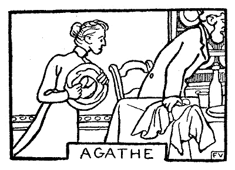
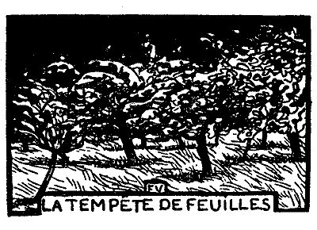

| にんじん | |
| ルナール ジュール | |
| (2015) | |
にんじん
ルナアル
岸田国士訳
ルピック夫人はいう――
「ははあ......オノリイヌは、きっとまた鶏小舎
の戸を閉
めるのを忘れたね」
そのとおりだ。窓から見ればちゃんとわかるのである。向こうの、広い中庭のずっと奥のほうに、鶏小舎の小さな屋根が、暗闇の中に、戸の開
いているところだけ、黒く、四角く、くぎっている。
「フェリックスや、お前ちょっと行って、閉めて来るかい」
と、ルピック夫人は、三人の子供のうち、一番上の男の子にいう。
「僕あ、鶏の世話をしにここにいるんじゃないよ」
蒼白
い顔をした無精
で、臆病
なフェリックスがいう。
「じゃ、お前は、エルネスチイヌ？」
「あら、母
さん、あたし、こわいわ」
兄貴のフェリックスも、姉のエルネスチイヌも、ろくろく顔さえ上げないで返事をする。二人ともテーブルに肱
をついて、ほとんど額
と額とをくっつけるようにしながら、夢中で本を読んでいる。
「そうそう、なんてあたしゃ馬鹿なんだろう」と、ルピック夫人はいう――「すっかり忘れていた。にんじん
、お前いって鶏小舎を閉めておいで」
彼女は、こういう愛称で末っ子を呼んでいた。というのは、髪の毛が赤く、顔じゅうに雀斑
があるからである。テーブルの下で、何もせずに遊んでいたにんじんは、突っ立ちあがる。そして、おどおどしながら、
「だって、母さん、僕だってこわいよ」
「なに？」と、ルピック夫人は答える――「大きななりをして......。噓だろう。さ、早く行くんですよ」
「わかってるわ。そりゃ、強いったらないのよ。まるで牡羊
みたい......」
姉のエルネスチイヌがいう。
「こわいものなしさ、こいつは......。こわい人だってないんだ」
と、これは兄貴のフェリックスである。
おだてられて、にんじんは反
り返った。そういわれて、できなければ恥だ。彼は怯
む心と闘う。最後に、元気をつけるために、母親は、痛いめに遭
わすといい出した。そこで、とうとう――
「そんなら、明
りを見せてよ」
ルピック夫人は、知らないよという恰好
をする。フェリックスは、鼻で笑っている。エルネスチイヌが、それでも、可哀
そうになって、蠟燭
をとりあげる。そしてにんじんを廊下
のとっぱなまで送って行く。
「ここで待っててあげるわ」
が、彼女は、怖
じ気
づいて、すぐ逃げ出す。風が、ぱっと来て、蠟燭の火をゆすぶり、消してしまったからである。にんじんは、尻
っぺたに力を籠
め、踵
を地べたにめり込ませて、闇の中で、ぶるぶる顫
え出す。暗いことといったら、それこそ、盲
になったとしか思えない。おりおり、北風が、冷たい敷布
のようにからだを包んで、どこかへ持って行こうとする。狐か、それともあるいは狼が、指の間や頰
ぺたに息をふきかけるようなことはないか。いっそ、頭を前へ突き出し、鶏小舎めがけて、いいかげんに駈
け出したほうがましだ。そこには、隠れるところがあるからだ。手探
りで、戸の鉤
をつかむ。と、その跫音
に愕
いた鶏
どもは、宿木
の上で、きゃあきゃあ騒ぐ。にんじんは怒鳴
る――
「やかましいな。おれだよ」
戸を閉めて走り出す――手にも、足にも、羽根が生
えたように。やがて、暖かな、明るいところへ帰って来ると、息をはずませ、内心得意だ。雨と泥で重くなった着物を、新しい軽いやつと着替
えたようだ。そこで、反
り身
になり、突っ立ったまま、昂然
と笑って見せる。みんなが褒
めてくれるのを待っている。危険はもう過ぎた。両親の顔色のどこかに、心配をした跡
が見えはせぬかと、それを捜
している。
ところが、兄貴のフェリックスも、姉のエルネスチイヌも、平気で本を読みつづけている。ルピック夫人は落ちつきはらった声で、彼にいう――
「にんじん、これから、毎晩、お前が閉めに行きなさい」
いつものように、ルピック氏は、テーブルの上で、猟
の獲物
を始末し、腸を抜くのである。獲物は、二羽の鷓鴣
だ。兄貴のフェリックスは、壁にぶらさげてある石板
に、そいつを書きつける。それが彼の役目である。子供たちは、めいめい仕事を割当てられている。姉のエルネスチイヌは、毛をむしり、羽根を抜くのである。ところで、にんじんは怪我
をしたまま生きているやつの、最後の息の根をとめるのである。この特権は、冷たい心の持主であるというところからきている。彼の残忍性は、みんなの認めるところとなっているからである。
二羽の鷓鴣は、じたばたする。首を振る。
ルピック夫人――どうして、さっさと殺さないんだい。
にんじん――母 さん、僕、石板に書くほうがいいなあ。
ルピック夫人――石板は、お前には、丈 がとどかないよ。
にんじん――そいじゃ、羽根をむしるほうがいいや。
ルピック夫人――そんなことは、男のすることじゃない。
にんじんは、二羽の鷓鴣をとりあげる。そばから、親切にやり方を教えるものがある。
「ぎゅっと締
めるんだよ、そうさ、頭んところを、羽根を逆
さまに持って......」
両手に、一羽ずつ、それをうしろへかくして、彼はやり出す。
ルピック氏――二羽一度にか。無茶しよる。
にんじん――早くやっちゃいたいからさ。
ルピック夫人――神経家ぶるのはよしとくれ。心ん中じゃ、うれしくってたまらないくせに......。
鷓鴣は痙攣
したように、もがく。翼
をばたばたさせる。羽根を飛ばす。金輪際
くたばりそうにもない。彼は、友達の一人ぐらい、もっと楽に、それこそ片手で締め殺せるだろうに。――今度は両膝
の間に挾
んで、しっかり押え、赤くなったり、白くなったり、汗までかいて、なおも締めつづける。顔は、なんにも見ないように上を向いているのである。
鷓鴣は、頑強だ。
どうしてもだめなので、癇癪
をおこし、二羽とも、脚
をもったまま、靴の先で、頭を踏みつける。
「やあ、冷血！ 冷血！」
兄貴のフェリックスと、姉のエルネスチイヌが叫んだ。
「なに、あれで、うまくやったつもりなのさ」と、ルピック夫人はいう――「可哀
そうに......。あたしがこんなめにあうんだったら、まっぴらだ。ああ怖
い、怖い」
ルピック氏は、年功を経
た猟人
だが、さすがに、胸を悪くして、どっかへ出て行く。
「これでいいだろう」
にんじんは、死んだ鷓鴣をテーブルの上に投げ出す。
ルピック夫人は、それを、こっちへ引っくり返し、あっちへ引っくり返しして見る。小さな頭蓋骨
が、砕
けて、血と少しばかりの脳味噌が流れ出している。
「あんとき、取り上げちまえばよかったのさ。これじゃ、目もあてられやしない......」
ルピック夫人はいう。
すると、兄貴のフェリックスが――
「たしかに、いつもよりゃ、まずいや」
ルピック氏と姉のエルネスチイヌは、ランプの下で、肱
をついて、一人は新聞を一人は賞与の本を読んでいる。ルピック夫人は編物
をし、兄貴のフェリックスは暖炉
で両脚
をあぶっている。それから、にんじんは、床の上に坐って、何か考え事をしている。
だしぬけに、靴拭
いの下で眠っていたピラムが、ごろごろ喉
を鳴らしだす。
「しいっ！」と、ルピック氏がいった。
ピラムは、一段と声を張り上げる。
「馬鹿」と、ルピック夫人はいう。
が、ピラムは、それこそ、みんなが飛びあがるほど猛烈な声で吠
える。ルピック夫人は心臓へ手をあてる。ルピック氏は、歯を喰
いしばって、横目で犬を睨
む。兄貴のフェリックスは怒鳴
りつける。もう、お互いのいうことすら耳にはいらない。
「黙らないかい、しょうがない犬だね。お黙りったら、畜生！」
ピラムはますます調子を上げる。ルピック夫人は手の平
でぶつ。ルピック氏は新聞で擲
る。それから、足で蹴
る。ピラムは、殴
られるのが怖
さに、腹を床にすりつけ、鼻を下に向け、やたらに吠える。見ていると、まるで気が狂って、自分の口を靴拭いにぶつけ、声を微塵
に叩
き割っているとしか思えない。
ルピック一家はかんかんに怒る。みんな総立ちになり、いっぽう腹ばいになったまま、頑としていうことをきかない犬に業
を煮
やす。
窓ガラスが軋
む。暖炉
の煙突
が音をたてる。姉のエルネスチイヌまでが金切声
をしぼる。
にんじんは、いいつけられもしないのに、外の様子を見に行った。たぶん退
けのおそい駅員が表
を通るのだろう。それも、ゆっくり自分の家に帰って行く途中に違いない。まさか泥坊
をしに庭の塀を攀
じ登っているのではあるまい。
にんじんは、暗い、長い廊下を、両手を戸のほうにつき出して、歩いて行く。閂
を探り、がたがた音を立てて、引っぱってみる。しかし、戸は開
けようとしない。
昔なら、危険を冒
してでも外に出て、口笛を吹いたり、歌を唱
ったり、足を踏みならしたりして、さかんに相手を威
かそうとしたものだ。
近頃は、要領がいい。
両親は、彼が勇敢に隅
から隅を探り、忠実な番人として、屋敷のまわりを見廻っているものと思っている。ところが、それは大間違いである。彼は戸のうしろに身を寄せて、じっとしているのである。
いつかは思い知ることがあるだろう。しかし、もうよほど前から彼の計略が図
にあたっている。
心配なのは、嚔
と咳
をすることだ。彼は息をころす。そして、目をあげると、戸の上の小さな窓から、星が三つ四つ見える。冴
え渡った煌
きに、彼は竦
みあがる。
さて、戻ってもいい時間だ。お芝居に暇をかけ過ぎてはよくない。怪しいと思われたらそれまでだ。
再び、か細
い手で、重い閂
をゆすぶる。閂は錆
びついた鎹
の中で軋
む。それから、そいつを溝の奥まで騒々
しく押し込む。この物音で、みなの者は、彼が遠いところから帰って来たのだな、もう務
めをすませたのだなと思う！ 背中の真中
が擽
ったいような気持で、彼は、みんなを安心させにとんで行く。
ところで、やっとこさ、ピラムは、彼の留守の間に黙ってしまったので、安心したルピック一家は、また、めいめい、きまりの場所に着いていた。で、誰も尋
ねもしないのに、にんじんは、ともかく、いつものとおりにいう――
「犬が寝とぼけたんだよ」
にんじんは泊り客が嫌
いである。部屋を追い出され、寝台を占領され、そして、母親と一緒に寝なければならないからである。ところで、もし彼が、昼間あらゆる欠点を備えているとすれば、夜は夜で、とりわけ、鼾
をかくという欠点をもっている。わざと鼾をかくんだとしか思えない。
八月でさえ冷
えびえする広い部屋に、寝台が二つ置いてある。一つはルピック氏ので、もう一つのほうへは、にんじんが母親と並
んで、壁に近い奥のほうに寝ることになるのである。
眠る前に、彼は掛布団
をかぶって、こんこん咳
をする。喉
を掃除するためである。しかし、鼾をかくのは、ことによると、鼻かもしれない。そこで、鼻の孔
がつまっていないかどうか、そっと鼻から息を出してみる。それから、あんまり大きく呼吸
をしない練習をする。
それにもかかわらず、彼は、眠ったかと思うと、もう鼾をかいている。こればかりはどうしても止
められないとみえる。
すると、ルピック夫人は、彼の尻
っぺたの一番肉附
きのよさそうなところを、爪で、血の出るほどつねる。彼女は、この方法に限ると思っている。
にんじんの悲鳴で、ルピック氏はにわかに眼を覚
ます。そして、こう訊
ねる――
「奴
、どうしたんだ？」
「夢でうなされているんですよ」
と、ルピック夫人は答える。
それから、彼女は、乳母
がやるように、子守歌のひと節を口の中で唄
う。これはインドの節らしい。
にんじんは壁に額と臑 とを押しつける。壁を突き破らんばかりに押しつける。両手で尻っぺたを隠す。鳴動が始まると同時に襲来する爪の鋒先 を防ぐためである。こうして、彼は、大きな寝台の中で、再び眠りに就 くのである――母親と並んで奥のほうに寝る、その大きな寝台の中で。
こんな話をしてもいいだろうか。しなければならないだろうか。ほかの者が、心もからだも真白になって、洗礼を受けようという年に、にんじんはまだ汚
ないところがあった。ある晩は、いい出せずに我慢
をしすぎたのである。
からだをだんだん大きく捻
って、苦しい要求を抑えようと思った。
ちっとずうずうしい量見だ！
また、ある晩は、ちゃんと、適当の距
りを置いて、塀
の角
に陣取っている夢を見た。その結果、なんにも知らずに、眠ったまま、敷布
の中へしてしまったのである。彼は眼をさました。
自分のそばには、あるはずの塀がないので驚いた。
ルピック夫人は、怒るところを怒らない。穏
かに、寛大に、母親らしく、始末をしてやる。そればかりか、翌朝は、甘ったれた小僧のように、にんじんは、寝床
を離れる前に食事をする。
さよう、寝床へスープを持って来てくれるのである。それは、なかなか手のかかったスープで、ルピック夫人が、木の篦
でもって、少しばかり例のものを溶
かし込んだのである。なに、ほんの少しである。
枕もとには、兄貴のフェリックスと姉のエルネスチイヌが、陰険な顔つきをしてにんじんを見張っている。今にも、合図さえあれば、大きな声を立てて笑う用意をしているのである。ルピック夫人は、匙
で少しずつ、息子
の口へ入れてやる。彼女は、横目で、兄貴のフェリックスと姉のエルネスチイヌに、こういっているらしい――
「さ、いいかい！ 用意はできたね！」
「ああ、いいよ！」
今からもう、二人は、そら、顰
めっ面
だと、面白
がっている。近所の人たちを招待できるものなら招待するところだったに違いない。さて、ルピック夫人は、最後の眼くばせで、上の子供たちに問いかける――
「さ、いいね！」
ゆっくり、ゆっくり、最後のひと匙
をあげる。それを、にんじんが大きく開
けた口の中へ、喉
の奥まで突っ込む。流し込む。押し込む。そして、嘲
るように、顔をそむけながら、こういう――
「ああ、汚
ない。食べた、食べた。自分のだよ、おまけに......。昨夜のだよ」
「そうだろうと思った」
こう、なんでもなく、にんじんは答える。みんなが当てにしていたような顔つきはしない。
彼は、そういうことに慣 れている。あることに慣れると、そのことはもうおかしくもなんともない。
もう何度も、寝床
のことで不幸な出来事が起こったので、にんじんは、毎晩、警戒を怠
らないようにしている。夏は、楽なもんだ。九時に、ルピック夫人が寝ておいでというと、にんじんは、自分から進んで、外
をひとまわりして来る。それで、ひと晩中
、安心である。
冬は、この散歩が、なかなか苦になる。日が暮れて、鶏小舎
を閉
めると、彼は、第一の用心をしておくのであるが、それも無駄
で、明日の朝までは、とても持ちそうにない。晩飯
を食い、ぐずぐずしていると、九時が鳴る。もうとっくに夜である。そして、その夜は、いつまでも続くのである。にんじんは、第二の用心をしておかなければならない。
で、その晩も、毎晩のように、自分で自分に尋
ねてみる――
「したいか、したくないか？」
平生
は、「したい」と答える。もっともそれは、いよいよ我慢
ができないか、さもなければ、月が出ていて、その光で元気をつけられるような時である。時としては、ルピック氏や兄貴のフェリックスがお手本を示してくれる。それに、要求の程度からいって、いつもそんなに遠くへ行くには及ばない。ほんとうなら、通りの溝
まで行くのである。それは、ほとんど野原の真中
といっていい。たいていは、階段の下まで降
りるだけである。その時々で違う。
ところが、その晩は、雨が窓ガラスを叩
き、風が星を消してしまい、胡桃
の木が牧場の中で暴れている。
「こういうこともあるんだ」――落ち着いて思案をしたあげく、にんじんは結論を与える――「したくない！」
彼はみんなに「お休みなさい」といい、蠟燭
に火をつけ、それから、廊下の突き当りで右側の、がらんとして、人っ気
のない自分の部屋にはいる。着物を脱
ぐ。横になる。ルピック夫人の入来を待つ。彼女は、掛布団
の縁
をぎゅっとひと息に押し込んでくれる。それから蠟燭の火を消す。その蠟燭は置いて行くが、マッチなるものは残して行かない。戸を閉めて鍵をかける。彼が臆病だからである。にんじんは、その時まず、一人でいることの快楽を味わうのだ。彼は暗闇の中でいろんなことを考えるのが好きである。一日中のことを思い出してみる。幾度
となく、危
いところを助かってよかった。明日もやっぱり運がいいように。彼は、二日続けて、母親が自分のほうに注意を向けてくれなければいいがと思う。そういう空想をしながら、彼は眠りに就
こうとする。
と、眼をつぶるかつぶらないうちに、彼はまた例の張りつめて来るような気持を感じ出す。
――やっぱり仕方がない。
心の中で、にんじんは呟
く。
だれでも、普通なら起きるところだ。しかし、にんじんは、寝台の下に、小便壺が置いてないことを知っている。ルピック夫人が、どんなに、そんなはずはないと頑張
っても、彼女は、いつも、それを持って来て置くのを忘れるのである。それに第一、壺があったって、なんの役にも立たないわけである。どうせ、にんじんは寝る前に用心をするんだから。
で、にんじんは、起きるかわりに、理窟
をこねる。
――晩
かれ早かれ、降参しなければなるまい。ところが、我慢をすればするほど、溜
るわけだ。今すぐやっちまえば、ぽっちりしか出ないんだ。すると、敷布
が濡
れても、からだのぬくもりで、乾
くのに手間はかからない。これまでの経験で、そうすりゃきっと、母
さんに見つからずにすむだろう。
にんじんは、ほっとする。ゆうゆうと眼を閉
じる。そして、ぐっすり眠り込んでしまうのである。
にわかに、彼は眼を覚
ます。そして、下腹の加減
はどうかと耳を澄ましてみる。
――やあ、こいつあ、怪
しいぞ！
さっきは、大丈夫
だと思った。話がうますぎた。昨晩、横着
をしたのがわるかったのだ。天罰覿面
である。
彼は寝床の上に坐り、思案してみる。戸には鍵がかかっている。窓には鉄格子
がはまっている。外に出るわけにいかない。
それでも、彼は起き上がって、戸と、窓の鉄格子にさわってみる。それから床の上に腹這
いになり、両手を寝台の下につっこんで櫂
のように動かす。ないことがわかっている壺を捜
してみるのである。
彼は寝床にはいる。そして、また起きる。眠るよりも、からだをゆすぶるか、歩き廻るか、地団太
を踏むほうがいい。両方の握り拳
で、つっぱってくる腹を抑える。
「母さん！ 母さん！」
聞こえては困ると思うので、力の抜けたような声を出す。なぜなら、もし、ルピック夫人がここへ姿を現わそうものなら、にんじんは、けろりとなおってしまい、まるで彼女を馬鹿にしてるとしか思えないからである。明日になって、呼んだということが噓
をつくことにならなければ、それでいいのである。
それに、声を立てるといっても、声の立てようがないではないか。全身の力は、ことごとく、禍
を延ばすために使い果している。
やがて、極度の苦痛が襲ってきて、にんじんは、踊りはじめる。壁にぶつかって行く。それから、跳
ね上がる。寝台の鉄具
にぶつかる。椅子
にぶつかる。暖炉
にぶつかる。そこで彼は、勢いよく焚口
の仕切り戸を開
ける。そして、からだを捻じ曲げ、兜
を脱いで、絶対の幸福に浸
りながら、暖炉の薪台
の上へ、全身を、根こそぎ、叩きつける。
部屋の暗さが度を増してくる。
にんじんは、やっと朝がた、眠りに就
いた。そして、寝坊をしている。ルピック夫人は戸を開けると、さも、どっちを向いていても鼻は利
くというように、顔をしかめながらいう――
「なんて変な臭いだい」
「母さん、おはよう」
と、にんじんはいう。
ルピック夫人は、敷布を引きずり出す。部屋の隅々
を嗅
いで廻る。見つけるのに造作
はない。
「僕、病気だったの。それに壺がないんだもの」
にんじんは、急
いでこういう。それが一番都合
のいい弁解だと思ったからである。
「噓つき！ 噓つき！」
ルピック夫人はこういいながらどこかへ出て行く。やがて壺を匿
して持ってくる。それを、手早く寝台の下に押し込む。立っているにんじんを突き倒す。家じゅうのものを呼ぶ。それから大声でいう――
「こんな子供をもつなんて、いったい、何の因果
だろう......」
それから、今度は、雑巾
とバケツとを持ってくる。火でも消すように暖炉へ水をかける。寝具をふるう。そして、忙しそうに、訴えるように――
「息がつまる、息がつまる」
というのである。
それから、また、にんじんの鼻先で、科
たっぷりの文句を並べる――
「情
ない子だね！ まるで無神経だ。いよいよ当り前じゃなくなってきた！ これじゃ、畜生
とおんなじだ！ 畜生だって、壺をやっとけば、その使い方ぐらいわかる。それにお前どうさ。するにも事をかいて、暖炉の中なんぞへ、だらしがない......。あたしゃ、もう、お前のおかげで頭が変になるよ。それこそ、気が狂って死んじまうから、気が狂って......」
にんじんは、シャツ一枚で、素足のまま、壺を見つめている。夜中には、この壺はなかった。それに、今になって、そこの、寝台の脚
もとに壺がある。この空
っぽの、白い壺を見ていると、彼は眼が眩
む。それでもまだ、そんなものはなかったなんていい張ると、今度はずうずうしい奴だということになるのである。
家
のものが、やれやれという顔をしている。口の悪い近所の奴らが列を作っている。郵便屋まで来ている。そういう連中が、うるさくいろんなことを問いかけるので、とうとう――
「噓だったら首をやる」――こう、壺の上に眼を注
ぎながら、にんじんは答える――
「僕あ、もう知らないよ。勝手にしろい」
「メロンはもうないよ、お前の分は......」と、ルピック夫人はいう――「それに、お前はあたしとおんなじで、メロンは嫌
いだね」
「そうだったかも知れない」
と、にんじんは考えるのである。
好き嫌いは、こうやって、人が勝手に決めてくれる。大体において、母親が好きなものだけを好きとしておかなければならない。チーズが来る。
「こりゃ、にんじんは食べないにきまってる」
と、こうルピック夫人がいうので、にんじんは――
「母
さんが、きまってるというんだから、食べてみなくたっていい」と思うのである。
第一、うっかり食べると、あとが恐ろしいことを知っている。
それに、もうじき、誰も知らない場所で、この上もなく奇妙な欲望を満たす暇があるではないか。デザートになると、ルピック夫人が彼にいうのである――
「このメロンの皮を兎に持ってっておやり」
にんじんは、皿をひっくり返さないように、できるだけ水平に持って、小股
で使いに出かける。
小舎
にはいって行くと、兎どもは、腕白小僧式
に、耳の帽子を深くかぶり、鼻を仰向
け、太鼓でも叩
くように前足を突き出し、がさがさ彼のまわりにたかって来る。
「こら、待て、待て」と、にんじんはいう――「ちょっと待ってくれ、半分ずつにしよう」
そこでまず、糞
だとか、根だけ食い残したのぼろ
菊
だとか、玉菜
の芯
だとか、葵
の葉だとかいうものの堆高
く積まれた上に、彼は腰をおろす。それから、兎どもにはメロンの種をやり、自分は汁を飲む。それは、葡萄液
のように甘い。
そこで今度は、みんなが残した甘味のある黄色いところ、口へ入れて溶
けるところを残らず歯で齧
り取る。そして、緑色のところだけを、尻
の上で丸まっている兎にくれてやる。
小舎の戸は閉
まっている。
午睡の時間を照らす太陽が、屋根の孔 を透 して、その光線の一端を冷 えびえした蔭の中に浸している。
兄貴のフェリックスとにんじんとが、一緒に並んで働いている。めいめい鶴嘴
をもっている。兄貴のは、蹄鉄屋
に注文して鉄で作らせたのである。にんじんは、木で自分のやつをひとりで作った。二人は庭作りをしている。仕事はぐんぐんはかどる。一所懸命の競争である。突然、それは実に思い設けない瞬間に――災難にぶつかるのは、常にそういう瞬間に限られている――にんじんは、額の真中
に、鶴嘴の一撃を喰
ったのである。
すると間もなく、兄貴のフェリックスを寝台の上に運んで行き、そっと寝させなければならない。弟の血を見て、ふらふらっとなったからである。家
のものは、みんなそこへ来て、丈伸
びをしている。それから、恐る恐る溜息
をつく。
――塩はどこにある？
――冷たい水を少し......頭を冷やすんだから......。
にんじんは、椅子の上にあがっている。みんなの頭の間から、肩越しにのぞくためである。額は布片
で鉢巻をし、その布片がもう赤くなっている。血が滲
み出して、ひろがっているのである。
ルピック氏はにんじんにいった――
「ひどい目に遭
やがった」
それから、姉のエルネスチイヌは、傷口に繃帯
をしてやりながら――
「バタの中へ孔
を開
けたようだわ」
彼は声を立てなかった。なぜなら、それは、何の役にも立たないということを、あらかじめ警告されていたから。
ところが、そのうちに、兄貴のフェリックスが、片方の眼を開ける。それからもう一方の眼を開ける。怖
かっただけで、無事にすんだのである。その顔色が、だんだん血の気
を帯びてくるにつれて、不安と驚愕
が、人々の心から消えて行く。
「いつでもこの通りだ」とルピック夫人はにんじんに向かっていう――「お前、気をつけることはできなかったのかい。しょうがないぽんつく だね」
ルピック氏は、息子
たちにいう。
「鉄砲は、二人で一挺
あればたくさんさ。仲の善
い兄弟は、なんでも催合
いにするもんだ」
「ああ、それでいいよ」と兄貴のフェリックスは答える――「二人で代りばんこに持つから......。なあに、時々にんじんが貸してくれりゃ、僕、それでいいんだよ」
にんじんは、いいとも、わるいともいわない。どうせ油断
はならないと思っている。
ルピック氏は、緑色の袋から鉄砲を出して、訊
ねる――
「初めにどっちが持つんだ？ そりゃ、兄
さんだろうな」
兄貴のフェリックス――その光栄はにんじんに譲るよ。先へ持て。
ルピック氏――フェリックス、今日 はなかなか感心だ。そうならそうで、父 さんにも考えがあるぞ。
ルピック氏は、鉄砲をにんじんの肩にのっけてやる。
ルピック氏――さ、行って遊んでこい。喧嘩 をするんじゃないぞ。
にんじん――犬は連れてくの？
ルピック氏――連れて行かんでええ。お前たち、代りばんこに犬になれ。それに第一、お前たちほどの猟師が、獲物 に傷だけ負わせるなんていうことはない。一発で仕留めるんだ。
にんじんと兄貴のフェリックスは出かけて行く。服装は簡単だ。不断のままである。長靴がないことは少し残念だが、ルピック氏は常々
、ほんとうの猟師は、そんなものを眼中に置かないといっている。ほんとうの猟師は、ズボンを踵
の上に引きずっている。決してまくり上げたりなんぞしない。それで、泥の中や、耕した土の上やを歩く。すると、長靴がひとりでに出来て、膝
のところまでくる。この長靴は丈夫
で、いや味がない。これは、女中が大事にするようにいいつかっている。
「手ぶらで帰るようなことはないよ、お前は......」
と、兄貴のフェリックスがいう。
「そりゃ、大丈夫だよ」
と、にんじんもいう。
肩が殺
げているので、なんだか窮屈
だ。銃身がうまくのっかっていない。
「そらね、いくらだって持たしてやるから、飽
きるほど......」
兄貴のフェリックスがいう。
「やっぱり、兄さんだよ」
と、にんじんはいう。
一群の雀が飛び立つと、彼は、兄貴のフェリックスに動くなという合図をする。雀の群
れは生籬
から生籬に飛びうつる。二人の猟師は、雀が眠ってでもいるかのように、背中を丸くして、そうっと近づいて行く。雀の群れはじっとしていない。ちゅうちゅう啼
きながら、またほかへ行って止まる。二人の猟師は起
ち上がる。兄貴のフェリックスは、それに悪口雑言
を浴びせかける。にんじんは、心臓がどきどきしているにもかかわらず、それほどあせっている様子はない。自分の腕を見せなければならない瞬間を懼
れているからである。
もしも失敗
ったら！ 延びるたびにほっとするのだ。
ところが、今度こそは、雀のほうで、彼を待っているらしい。
兄貴のフェリックス――まだ撃 つなよ。遠すぎるぞ。
にんじん――そうかなあ......。
兄貴のフェリックス――当りキ よ。からだを低くすると勝手が違ってくるんだぜ。すぐそばだと思っても、実際はかなり遠いんだ。
そこで、兄貴のフェリックスは、自分のいったとおりだということを示すために、いきなり顔を出す。雀は、驚いて飛んで行ってしまう。
が、そのうち、一羽だけ、しなった枝の先に止まったまま、その枝に揺られている。尾をぴんと上げ、頭を左右にかしげ、腹をむき出している。
にんじん――しめたぞ、こいつなら撃 てら、大丈夫......。
兄貴のフェリックス――どら、どいてみろ。うん、なるほど、素敵 なやつだ。さ、早く、鉄砲を貸せ。
すると、もう、にんじんは、鉄砲を取り上げられ、両手を空
っぽにして、口を開
けているのである。その前で、兄貴のフェリックスが、彼の代りに、鉄砲を肩に当て、狙
いを定め、引鉄
を引く。そして、雀が落ちる。
それは、まるで手品のようだ。にんじんは、さっきまで、この鉄砲を、それこそ、胸に抱
き締
めていた。突然、彼はそれを失った。ところが、今また、それが彼の手に戻ってきた。いうまでもなく、兄貴のフェリックスが返したのである。兄貴のフェリックスは、それから、自分で犬の代りもする。駈け出して行って雀を拾う。そうしていう――
「ぐずぐずしちゃだめだよ。もっと急がなくっちゃ......」
にんじん――ゆっくり急ぐよ。
兄貴のフェリックス――ようし、膨 れっ面 をするんだね。
にんじん――だって......。じゃ、歌を唱 えばいいのかい。
兄貴のフェリックス――雀がとれたんだから、なんにもいうことはないじゃないか。もしか、中 らなかったらどうする！
にんじん――ううん、僕あ、そんな......。
兄貴のフェリックス――お前だって、兄さんだって、おんなじことさ。今日は兄さんがとった、明日はお前がとる、それでいいだろう。
にんじん――明日ったって......。
兄貴のフェリックス――きっとだよ。
にんじん――わかるもんか。きっとなんて、明日になりゃ......。
兄貴のフェリックス――もし噓 だったら、なんでもやらあ。それでいいだろう。
にんじん――まあいいや......。それより、もっと獲 ろうよ。僕が撃ってみら......。
兄貴のフェリックス――だめだよ、もう遅いから。さ、帰って、こいつを母 さんに焼いてもらおう。そら、そっちへやるよ。カクシへ入れとけ。なんだい、馬鹿だなあ、おい、嘴 を出しとけよ。
二人の猟師は家
へ帰って行く。その途中でどこかの百姓に会うと、その百姓はお辞儀
をしてこういいかける――
「坊
ちゃん、お前たちゃ、まさかお父
つぁんを撃ったんじゃあるめえな」
にんじんは、いい気持になり、さっきからのことを忘れてしまう。彼らは、仲よく、大威張
りで帰って来る。ルピック氏は二人の姿を見かけると、驚いてこういう――
「おや、にんじん、まだ鉄砲をもっているな。ずっとお前がもち通しか？」
「うん、たいてい......」
と、にんじんは答える。
にんじんは道ばたで、煙突掃除
のように黒い一匹の土竜
を見つける。いいかげん玩具
にしたあげく、そいつを殺そうと決心する。そこで、何べんも空中へ抛
り上げるのであるが、それは石の上へ落ちるようにうまく投げるのである。
初めは、なかなか工合よく、すらすら行く。
土竜はもう脚
が折れ、頭が割れ、背中が破れ、根っからしぶとく
もなさそうだ。
すると、驚いた。にんじんは、土竜がどうしても死なないということに気がつく。家
の高さよりも高く、天まで届くほど抛り上げても、さっぱり効
き目がない。
「こね野郎
！ 死なねえや」
なるほど、血まみれになった石の上で、土竜はぴくぴく動く。脂肪
だらけの腹がこごり
のように顫
え、その顫え方が、さも生命
のある証拠のように見える。
「こね野郎！」と、にんじんは躍気
になって怒鳴
る――「まだ死なねえか」
彼はまたそれを拾い上げる。罵倒
する。そして、方法を変える。
顔を真赤
にし、眼に涙を溜
め、彼は土竜に唾
をひっかける。それから、すぐそばの石の上を目がけて、力まかせに叩
きつける。
それでも、例の不恰好
な腹は、相変わらず動いている。
こうして、にんじんが、死にもの狂いになって、叩きつければ叩きつけるほど、土竜は、よけい死なないように見えてくる。
にんじんと兄貴のフェリックスは、夕方のお祈
りから帰ると、急いで家へはいる。それは、四時のおやつだからである。
兄貴のフェリックスは、バタやジャムをつけたパンを貰
うことになっている。それから、にんじんは、なんにもつけないパンである。なぜなら、彼は、あんまり早く大人
のふりをしようと思って、みんなの前で、自分は食いしんぼうじゃないと宣言してしまったからである。彼はなんでも自然のままが好きだ。平生
、好んで、パンを何もつけずに食うのである。で、その晩もやはり、兄貴のフェリックスより早く歩く――自分が先に貰いたいからである。
時として、なんにもつけないパンは固い。すると、にんじんは、敵に向かうようにそれにぶつかって行くのである。ぎゅっと摑
む。齧
りつく。頭をぶつける。粉ごなにする。そして、かけらを飛ばす。まわりに居並ぶ親同胞
は、珍しそうにそれを見ている。
駝鳥
のような彼の胃の腑
は、石だろうが、青錆のついた古銅貨だろうが、わけなく消化するに違いない。
要するに、彼はちっとも食べ物の選
り好みをしない。
彼は戸の鐉
を引く。閉
まっているのである。
「父
さんも母
さんもいないんだよ、きっと......。足で蹴ってごらん、よう」
と、彼がいう。
兄貴のフェリックスは、「こん畜生」といいながら、釘
の頭が並んでいる重い戸にぶつかって行く。戸はしばらく音を立てている。それから二人は、力を併
せて、肩で押す。むだである。
にんじん――たしかに、いないよ。
兄貴のフェリックス――どこへ行ったんだろう。
にんじん――そこまではわからん。坐ろう。
階段の踏石
が尻
に冷たく、二人は近来稀
な空腹を感じる。欠伸
をしたり、心窩
を握拳
で叩いたりして、その激しさを訴える。
兄貴のフェリックス――帰るまで待っていると思ったら間違いだぞ。
にんじん――そいじゃ、ほかにうまい工夫があるかい。
兄貴のフェリックス――待ってなんかいるもんか。飢 え死 をしたかないからなあ、おれは......。今すぐ食いたいんだ。なんでもいい、草でもいい。
にんじん――草......！ そいつあ面白 い。父さんや母さんも、それを聞いたらぎゃふん だ。
兄貴のフェリックス――だって、サラダを食べるじゃないか。ここだけの話だけど、苜蓿 なんか、サラダとおんなじに軟 かいよ。つまり、油と酢 をつけないサラダさ。
にんじん――かきまわすこともいらないし......。
兄貴のフェリックス――賭 けをしよう。僕も、苜蓿 なら食べるよ。お前は食べられないぜ、きっと。
にんじん――どうして、兄 さんに食べられて、僕に食べられないんだい？
兄貴のフェリックス――さ、いいから賭けをしよう。いやか？
にんじん――うん、だけど、その前に、お隣りへ行って、パンを一片 ずつと、それへヨーグルトを少し貰ってきたら？
兄貴のフェリックス――僕あ苜蓿 のほうがいい。
にんじん――行こう。
やがて苜蓿
の畑が、美味
そうな緑の葉を、彼らの眼の下にひろげる。その中にはいって行くと、二人は、面白がって靴を引きずる。軟かい茎を踏み切る。細い道をつける。
――なんだろう、どんな獣だろう、ここを通ったのは......？
いつまでも、人は心配をして、こういうに違いない。
ぼつぼつ疲れかげんになってきた脛
のあたりへ、ズボンを透
して、ひやりとしたものが浸
み込んでくる。
彼らは畑の真中
で止まる。そして、べったり、腹這
いになる。
「いい気持だね」と、兄貴のフェリックスがいう。
顔がくすぐったい。それで二人は、むかし同じ寝床の中で寝た時のようにふざけるのである。あの頃、すると、ルピック氏が、隣りの部屋から怒鳴
ったものだ――
「もう眠
ろよ、餓鬼
ども！」
彼らは饑
じさを忘れ、水夫の真似
をして泳ぎを始める。それから犬の真似をし、蛙
の真似をする。二つの頭だけが浮き出ている。彼らは、砕
けやすい小さな緑の波を手でかきわけ、足で押しのける。波は、崩
れたまま、もとの形を取らない。
「僕、頤
までつくよ」
と、兄貴のフェリックスがいえば、
「こら、こんなに進むぜ」
と、にんじんがいう。
ひと息ついて、もっと静かに、自分たちの幸福を味わうべきである。
そこで、両肱
をついて、土竜
の掘った塚を見渡してみる。それは、老人の皮膚にもりあがる血管のように、電光形を描いて地面にもりあがっている。時に見失ったかと思うと、また空地
へ行ってひょっこり顔を出している。その空地には、上等な苜蓿
を喰
い荒す性
のよくない寄生虫、コレラのような菟糸子
が、赤ちゃけた繊維の髭
を伸ばしている。土竜
の塚は、そこで、インドふうに建てられた小屋そのまま、ひと塊
りになって小さな村を形づくっている。
「することはこれっきりじゃないぜ。おい、食べよう。はじめるよ。僕の領分にさわっちゃいけないよ」
兄貴のフェリックスはこういう。そして、片腕を半径に、彼は円弧
を描く。
「僕あ、残ってるだけでたくさんだ」
と、にんじんがいう。
二つの頭がかくれる。もうどこにいるかわからない。
風が静かな吐息
を送って、苜蓿
の薄い葉をひるがえすと、蒼白
いその裏が見える。そして、畑一面に身ぶるいが伝わる。
兄貴のフェリックスは、しこたま草を引き抜いて、そいつを頭の上に被
り、さかんに口の中へ詰め込むふりをする。そして、乳を放れたばかりの犢
が、草を食う時に歯を嚙
み合わせる、その音の真似
までして見せる。彼は根でもなんでも食ってしまうように見せかける。世の中を識
っているからである。ところが、にんじんは、それをほんとだと思う。ただ、もっと上品に、美しい葉のところだけを選
るのである。
鼻の先でそいつを曲
げ、口へもってきて、悠然
と嚙みしめる。
どうして急ぐ必要がある？
テーブルを時間で借りたわけでもなく、橋の上に市
が立っているわけでもない。
歯を軋 ませ、舌を苦 くし、胸をむかむかさせながら、彼は呑み込む。なるほど御馳走 である。
にんじんは、これからもう、食事の時に、葡萄酒
を飲まないことになった。彼はこの数日の間に葡萄酒を飲む習慣をなくしてしまったのだが、あんまり造作
がないので、親同胞
も、出入りの人たちも、これは意外に思った。そもそもの話はこうである。
ある日の朝、母親のルピック夫人が、いつものように、彼の湯呑
みに葡萄酒を注
ごうとすると、彼はこういった――
「僕いらないよ。喉
渇いてないから」
夕飯の時、彼はまたいった――
「僕いらないよ。喉渇いてないから」
「なかなか経済だね、この子は」――ルピック夫人はいう――「みんな大助かりだ」
そういうふうで、彼は、はじめの一日、朝から晩まで、葡萄酒を飲まずにいた。陽気が穏かで、それに、ただ、なんということなしに、喉が渇かなかったからである。
翌日、ルピック夫人は、食器を並べながら、彼に訊
ねた――
「今日は、葡萄酒を飲むかい、にんじん？」
「そうだなあ」と彼はいった――「まあ、どうだかわからない」
「じゃ、好きなようにおし」と、ルピック夫人はいった――「湯呑みが欲
しかったら自分で戸棚から出しといで」
彼は、出しに行かない。億劫
なのか、忘れたのか、それとも、自分で取りに行くのはいけないと思ってか？
みんなが、そろそろ意外な顔をし出す。
「えらくなったもんさ」と、ルピック夫人がいう――「お前には、そんな芸当もできるんだね」
「珍
しい芸当だ」――ルピック氏はいう――「そいつは、と、なんかの役に立つさ。ことにおっつけ、一人きりで、駱駝
にも乗らず、砂漠の中で道に迷いでもしたような時にはなおさらだ」
兄貴のフェリックスと姉のエルネスチイヌは、断乎としていい放った。
姉のエルネスチイヌ――「きっと一週間ぐらい飲まないでいられてよ」
兄貴のフェリックス――「なあに、この日曜まで、三日もてば、大したもんだ」
「だって」と、にんじんは、薄笑いを浮かべながらいう――「だって、喉が渇かなかったら、僕、いつまでだって飲みやしないよ。兎や天竺鼠
をみてごらん。あれのどこがえらいんだい」
「天竺鼠とお前とは別だよ」
兄貴のフェリックスがいう。
にんじんは、癪
にさわった。そこで彼らに、これでもかというところをみせることになるのである。ルピック夫人は、相変わらず、湯呑みを出し忘れている。彼は、決してそいつを催促
しない。皮肉なお世辞
をいわれても、真面目
に感心したようなふうをされても、彼は、等しく我れ関せずで聞き流していた。
「病気でなけりゃ、気が狂ったんだ」
あるものは、こういった。また、あるものは、こうもいった――
「内証
で飲んでるんだ」
だが、何事も、珍しいうちが花だ。舌がちっとも渇いてないという証拠をみせるために、にんじんが、舌を出して見せる回数は、だんだんに減
ってくる。
両親も、近所の人たちも、根気負けがしてきた。ただ、なんでもない人が、どうかしてその話を聞くと、また両腕を高く挙
げた――
「戯談
いっちゃいけない。自然の要求というものは、こりゃ、誰一人おさえることはできないんだから......」
医者に相談すると、そういう例はどうも奇妙には奇妙だが、しかし、要するにあり得ないということは、なに一つないわけだと宣言した。
ところで、にんじんは、自分ながら不思議
だった。そのうちに苦しくなりはせぬかと思っていたからである。彼は、規則正しく強情
を張りさえすれば、どんなことでもできるという事実を確かめた。彼は、最初から、苦しい欠乏に堪え、一大難関を突破しなければならぬと覚悟した。それが、いっこう、痛くも痒
くもないのである。以前よりも、からだの調子はいいくらいだ。これなら、喉の渇きばかりでなく、腹が空
くのだって我慢できないはずはない！ 飯なんか食わなくったってもいい。空気だけで生きてみせる。
彼は、もう、自分の湯呑みのことさえとっくに忘れている。湯呑みは、長い間使わずに放 ってある。すると、女中のオノリイヌが、その中へ、ランプの金具を磨 く赤い磨 き砂を容 れてしまった。
ルピック氏は、それでも、機嫌
のいい時には、自分から子供たちの相手になって遊ぶようなこともある。裏庭の小径
でいろんな噺
をして聞かせるのである。すると、兄貴のフェリックスとにんじんとが、しまいには地べたの上を転
がりまわる。彼らはそんなにはしゃぐ。今朝も、そういうふうで、三人がへとへとになっていると、そこへ、姉のエルネスチイヌがやって来て、お昼の用意ができたという。やっと、それで鎮
まった。家族が集まると、どの顔も、みんな苦虫
を嚙
みつぶしたようだ。
いつものとおり、大急ぎで、口もきかずに飯を食う。もし、これが料理屋なら、そろそろ、テーブルを次のお客に明け渡しても差支えないのだが、その時分になってルピック夫人は――
「パンのかけらを一つ、こっちへちょうだい、砂糖煮を食べちまうんだから......」
誰にそういったのか？
たいがいの場合、ルピック夫人は、自分の食べるものは自分で取るのである。そして話をするといえば犬相手である。彼女は、犬に野菜の値段をいって聞かせる。そして、当節
、わずかの金で、六人の人間と一匹の獣とを養って行くことが、どんなに困難かという説明をしたりする。
「馬鹿おいい」と、彼女は、お愛想に喉
を鳴らし、靴拭
いを尻尾
で叩いているピラムに向かっていうのである――「お前にはわからないんだよ、この家
を持って行くのに、あたしがどんなに苦労してるか......。お前も、男の人たちみたいに、台所で使うものは、みんなただで手にはいると思ってるんだろう。バタが高くなろうと、卵が法外な値になろうと、そんなことはいっこう平気なんだろう」
ところが、今日という今日、ルピック夫人は、大変なことをしでかした。慣例を破って、彼女は、じかにルピック氏に言葉をかけたのだ。相手もあろうに、彼女が砂糖煮を食べてしまうためにパンのかけらを請求したのは、正
しく彼に向かってだ。もう、誰も、それを疑う余地はないのである。第一彼女はルピック氏の顔を見つめている。第二に、ルピック氏のそばに、パンがある。彼はおどろいて躊躇
している。が、やがて、指の先で、自分の皿の底からパンのかけらを抓
み上げ、真面目
に、無愛想に、そいつをルピック夫人めがけて抛
ったものである。
戯談
か？ 喧嘩
か？ それがわからない。
姉のエルネスチイヌは、母親のために侮辱を感じ、なんとなく胸騒
ぎがしている。
「おやじは、あれで、今日は気分がいいんだ」
兄貴のフェリックスは、椅子の脚を傍若無人
にがたがたいわせながら、こう考えている。
にんじんはどうかというと、ぴりっとも身動きをせず、唇 を壁土のように固くさせ、耳の奥がごろごろ鳴り、頰 ぺたを焼林檎 で膨 らませながら、じっとしている。もしもルピック夫人が、息子や娘の前で、人間の屑 みたいに取り扱われながら、すぐに食卓を離れずにいたら、それこそ彼は、屁 でもしてやりたかったのだ。
ルピック氏は、今朝、パリから帰って来たところである。鞄
をあける。お土産
が出る。兄貴のフェリックスと姉のエルネスチイヌへの素敵
なお土産だ。それもちょうど――なんという不思議
なことだろう――彼らがひと晩じゅう夢に見たというものばかりだ。それからあとで、ルピック氏は、両手を後
ろへまわし、にんじんのほうをからかうように見ていう――「今度はお前だ、なにが一番欲
しい。ラッパか、それともピストルか？」
事実、にんじんは、それほど向こう見ずではないのである。むしろ、用心深いほうである。そこで、彼は、どっちかというとラッパのほうがいい。手に持っていて飛び出す心配がない。しかし、ふだん聞くところによると、自分くらいの男の子は、飛び道具か剣か、戦争で使う道具でなければ、遊んだって本気になれないらしい。年からいっても、火薬の臭いを嗅
ぎ、物という物を粉砕したい年になっているのだ。おやじは子供を識
っている。誂
え向きのものを持って来てくれたに違いない。
「僕あ、ピストルのほうがいいや」
と、彼は、大胆にいった。てっきり図星
を指したつもりなのだ。
それだけならいいが、彼は少し調子に乗り過ぎた。そして、こう附け加えた――
「匿
したってだめだよ。ちゃんと見えてるんだもの」
「へえ、そうか」と、ルピック氏は、当惑していった――「お前はピストルのほうがいいのか。じゃ、また変わったんだね」
にんじんは、たちどころに、応
えた。
「ううん、そうじゃないよ、ふざけていってみたんだよ。心配しないだっていいよ。僕あ、大嫌いだ、ピストルなんか。さ、早く、ラッパをおくれよ。吹いてみせるからさ。僕、ラッパを吹くの大好きさ」
ルピック夫人――「そんなら、どうして噓 を吐 くんだい。お父さんを困らせようと思ってだろう。ラッパが好きなら、ピストルが好きだなんていうもんじゃない。おまけに、なんにも見えないくせに、ピストルが見えているなんていうもんじゃない。だから、その罰に、ピストルもラッパも、お前にはあげないよ。よくこれを見とくといい。赤い総 と、金の縁飾 のある旗がついてる。よく見たね。じゃ、もういいから台所へ行って、もう一人母 さんがいるかどうか見といで。さっさと走って！ 指で口笛を吹いてるがいい」
戸棚のてっぺんの、白い下着類を重ねた上で、三つの赤い総と、金の縁飾のある旗にくるまって、にんじんのラッパは、手も届かず、見えもせず、音も立てず、最後の審判のそれのように、誰かに吹かれるのを待っている。
日曜日には、子供たちがミサに行かないと、ルピック夫人は承知しなかった。そこで、子供たちを小ざっぱりとさせるのだが、姉のエルネスチイヌが、みんなのおめかしを監督することになっており、そのために、自分のが遅れてしまうのである。彼女はそれぞれネクタイを選んでやり、爪を磨いてやり、祈禱書を持たせる。一番大きなのをにんじんに渡すのである。だが、なんといっても、仕事は、兄弟たちの頭へポマードを塗ることだ。
これをやらないと、どうにも気がすまぬらしい。
にんじんは、それでも、おとなしくされるままになっている。しかし、兄貴のフェリックスは、あらかじめ姉に向かって、しまいに怒るぞと念を押すのである。が、姉は姉で、こういってごまかすのである。
「ああ、また今日も忘れちゃった。わざとやったんじゃないわよ。この次の日曜から、きっとつけない」
で、相変わらず、彼女は、その時になると、指の先でひと掬
い、彼の頭へなすってしまうのである。
「覚えてろ」
と、兄貴はいう。
今朝も、タオルにくるまり、頭を下へ向けているところを、姉のエルネスチイヌは、またこっそりやったのだが、彼は、気がつかぬらしい。
「さ、いうことを聞いたげてよ。だから、ぶつぶついいっこなしよ。あのとおり、罎
は蓋
をしたまま暖炉
の上に置いたるじゃないの。感心でしょう。だけど、あたし、自慢はできないわ。だって、にんじんの髪の毛なら、セメントでなくちゃだめだけど、あんたのなら、ポマードもいらないくらいだわ。ひとりで縮
れて、ふっくらしてるわ。あんたの頭は、花キャベツみたいよ。この分けたとこだって、晩までそのまま持つわよ」
「ありがとう」
と、兄貴のフェリックスはいった。
彼は、別に疑う様子
もなく起
ち上がった。ふだんのように、頭へ手をやってほんとかどうか調べてもみない。
姉のエルネスチイヌは、彼に服を着せてしまう。飾るところは飾った。それから白い絹の手袋をはめさせる。
「もういいんだね」
と、兄貴のフェリックスはいう。
「素敵
よ。まるでプリンスだわ」と、姉のエルネスチイヌはいう――「それで、帽子さえかぶればいいんだわ。開き簞笥
の中にあるから取ってらっしゃい」
だが、兄貴のフェリックスは、間違えている。彼は、開き簞笥の前を通り過ぎてしまう。急いで食器戸棚のほうへ行く。戸を開ける。水のいっぱいはいった水差しを取り上げる。そして、これを、平然と、頭へぶっかけたのである。
「ちゃんとそういっといたろう、エルネスチイヌ」と、彼はいう――「僕あ、人から馬鹿にされるのは嫌いなんだ。そんな小
っぽけなくせして、この古強者
をちょろまかそうったって、そりゃ無理だよ。こんどやったら、ポマードの罎
を川ん中へぶち込んじゃうから......」
髪の毛はぺしゃんこになり、日曜の晴着
から滴
がたれている。そこで、びしょ濡
れの彼は、着物を着替えさせてくれるか、日に当たって乾
くか、そのどっちかを待っているのである。彼は、どっちでもいい。
「ひでえ奴
......」と、にんじんは、じっと感心している――「あいつあ、怖
いものなしだ。おれがあの真似
をしたら、みんなで大笑いをするだろう。ポマードが嫌いじゃないっていうふうに思わせとくほうが得
だ」
しかし、にんじんが、いつもの調子であきらめていても、髪の毛は、いつの間にか、彼の讐
を打っている。
ポマードで無理に寝かせつけられて、一時
は死んだ真似をしているが、やがて、むくむくと起き上がる。どこがどう押されてか、てかてかの軽い鋳型
に、ところどころ凸凹ができ、亀裂
がはいり、ぱくりと口をあくのである。
藁葺尾根
の氷が解けるようだ。
すると、間もなく、髪の毛の最初のひと束 が、ぴんと空中に跳 ね上がる、まっすぐに、自由に。
やがて時計が四時を打とうとしているので、にんじんは、矢も楯
もたまらず、ルピック氏と、兄貴のフェリックスを起こすのである。二人は、裏庭の榛
の木の下で眠っていた。
「出かけるんだろう」と、彼はいう。
兄貴のフェリックス――行こう。猿股 を持っといで。
ルピック氏――まだ暑いぞ、きっと。
兄貴のフェリックス――僕あ、日が照ってる時のほうがいいや。
にんじん――それに、父 さんだって、ここより水っ縁 のほうがいいよ。草の上へ寝転 んどいでよ。
ルピック氏――さ、先へ歩け。ゆっくりだぞ。死んじまっちゃなんにもならん。
だが、にんじんは、早くなる足並みを、やっとのことで緩
めているのである。足の中を蟻
が這
っているような気持だ。肩には、模様のない、厳
しい自分の猿股と、それから、兄貴の、赤と青との縞
の猿股をかついでいる。元気いっぱいという顔つきで、彼は喋
る。自分だけのために歌を唱
う。木の枝へぶらさがって跳ぶ。空中で泳ぐ真似
をする。さて兄貴にいう――
「ねえ、兄
さん、水へはいると、きっといい気持だね。うんと泳いでやらあ」
「生意気
いえ！」
と、兄貴のフェリックスは、馬鹿にしきった返事をする。
なるほど、にんじんは、ぴたりと鎮
まる。
彼は、今、乾ききった低い石垣を、まっさきに、ひらりと飛び越えた。すると、たちまち、眼の前を小川が流れているのである。はしゃいでいる暇もなかった。
魔性
の水は、その表面に、寒々
とした影を反射させていた。
歯を嚙
み合わせるように、ひたひたと波の音を立て、臭いともつかぬ臭いが立ち昇っている。
この中へはいるわけである。ルピック氏が、時計を眺めて、決
めただけの時間を計っている間、この中でじっとしてい、この中で動きまわらなければならない。にんじんは、顫
えあがる。元気を出して、こんどこそはと思うのだが、いよいよとなると、またその元気がどっかへ行ってしまう。水を見ると、遠くのほうから引っ張られるようで、ついぐらぐらっとなるのである。
にんじんは、一人離れて、着物を脱
ぎはじめる。瘠
せているところや、足の恰好
を見られるのがいやでもあるが、それより、ひとりで、誰
れ憚
らず顫
えたいのだ。
彼は、一枚二枚脱いでいって、そいつを丁寧
に草の上でたたむ。靴の紐
を結び合わせ、それをまた、いつまでもかかってほどく。
猿股を穿
く。短いシャツを脱ぐ。だが、もうしばらく待っているのである。彼は包み紙の中でべたべたになる林檎糖
のように汗をかいているからだ。
そうこうするうちに、兄貴のフェリックスは、もう川を占領し、わがもの顔に荒しまわっている。腕で擲
り、踵
で叩き、泡を立てる。そして、流れのまん中で、猛烈果敢
に、騒ぎ狂う波の群れを、岸めがけて追い散らすのである。
「お前はもう、やめか」
ルピック氏はにんじんにいった。
「からだを乾かしてたんだよ」
やっと、彼は決心する。地べたに坐る。そして、爪先
を水に触
れてみる。その足の趾
は、靴が小さすぎて擦
りむけていた。そうしながら、また胃の腑
のあたりをさすってみた。恐らく、食ったものがまだこなれていないだろう。それから木の根に沿ってからだを滑
らせる。
木の根で、脛
、腿
、それから臀
をひっかかれる。水が腹まで来ると、もう上へあがろうとする。逃げ出そうとする。濡
れた糸が、こまの紐を捲
くように、だんだんからだへ捲きついて行くような気持だ。が、からだを支えていた土塊
が崩れる。すると、にんじんは滑り落ちる。姿を消す。水の底を這う。やっと立ち上がる。咳
き込み、唾
を吐き、息をつまらせ、眼がかすみ、頭がぼうっとする。
「潜
りはうまいじゃないか」
と、ルピック氏はいう。
にんじんは、すると、
「ああ、だけど、僕あ、きらいさ。耳ん中へ水が溜
っちゃった。頭が痛くなるよ、きっと......」
彼は、そこで、泳ぎの練習ができる場所、つまり、膝で砂の上を歩きながら、両腕を前のほうへ動かせるところを捜
す。
「あんまり急にやるからいけないんだ。手を握ったまま動かしちゃだめだよ。髪の毛を挘
るんじゃあるまいし。その足を使うんだ、足を......。どうもしてないじゃないか」
こうルピック氏がいうと、
「足を使わないで泳ぐほうがむずかしいんだよ」
と、にんじんはいう。
が、一所懸命にやってみようとすると、兄貴のフェリックスがそれをさせない。しょっちゅう邪魔
をするのである。
「こっちへおいでよ、にんじん。もっと深いところがあるぜ。こら、足がつかないや。沈むぜ。ごらんよ、ほら、僕が見えるだろう。そらこのとおり......見えなくなるよ。そいじゃ、こんだ、あの柳の木のほうへ行ってろよ。動いちゃいけないよ。そこまで十ぺんで行くからね」
「数えてるよ」
と、にんじんは、がたがた顫えながら、肩を水から出し、まるで捧杭のように動かずにいるのである。
さらに、彼は、泳ごうとしてからだを屈
める。ところが、兄貴のフェリックスは、その背中へ攀
じ登って、飛び込みをやる。
「こんだ、お前の番さ、ね、僕の背中へおあがりよ」
「僕あ、自分で練習してるんだから、ほっといておくれよ」
にんじんは、こういうのである。
「もう、よし。みんな出ろ。ラムをひと口ずつ飲みにこい」
と、ルピック氏は呼ぶ。
「もう出るの？」
と、にんじんがいう。
今になると、彼はまだ出るのが厭
なのだ。水浴びに来たのに、これくらいでは物足
りない。出なければならないと思うと、水がもう怖くはないのである。さっきは鉛、今は、羽根だ。獅子奮迅
の勢いで暴れまくる。危険など眼中にない。人を救うために、自分の命を棄ててかかったようだ。おまけに、誰もしてみろといわないのに水の中へ頭を突っ込む。溺
れた人間の苦しみを味わうためである。
「早くしろよ」と、ルピック氏は叫ぶ――「さもないと、兄さんがラムをみんな飲んじまうぞ」
ラムなら、あんまり好きじゃないのだが、にんじんは、いう――
「僕の分は、誰にもやらないよ」
そうして、彼は、それを老兵
のごとく飲み干
す。
ルピック氏――よく洗わなかったな。くるっぷしに、まだ垢 がついてる。
にんじん――泥だよ、こりゃ。
ルピック氏――いいや、垢だ。
にんじん――もう一度水へはいってこようか。
ルピック氏――明日除 ればいい。また来よう。
にんじん――うまい具合に天気ならね。
彼は、指の先へ、タオルの乾いたところを、つまり兄貴が濡 らさずにおいてくれたところを捲きつけて、からだを拭 く。頭が重く、喉はいがらっぽいのだが、彼は、大声を立てて笑うのである。というのは、兄貴とルピック氏が、彼の捻 じくれた足の趾 を見て、へんてこな戯談 をいったからだ。
ルピック夫人――お前さんは、もう幾歳 だっけ、オノリイヌ？
オノリイヌ――この万聖節 で、ちょうど六十七になりました、奥さん。
ルピック夫人――そいじゃ、もう、いい年だね。
オノリイヌ――だからって、別にどうもありませんよ、まだ働けるだもの。病気なんぞしたことなしね。巌丈 なことときちゃ馬にだって負けやしませんからね。
ルピック夫人――そんなこというなら、あたしが考えてることをいってあげようか。お前さんは、ぽくりと死ぬよ。どうかした日の晩方 、川から帰りがけに、背負 ってる籠 がいつもの晩より重く、押してる車が思うように動かないのさ。お前さんは、車の梶棒 の間へ膝 をついて倒れる。濡 れた洗濯物の上へ顔を押しつけてね。それっきりさ。誰か行って起こしてみると、もうお前さんは死んでるんだよ。
オノリイヌ――笑わしちゃ困るよ、奥さん。心配しないでおくんなさい。脚 だって、まだぴんぴんしてるんだもの。
ルピック夫人――そういや、少しばかり前こごみになってきたね。だけど背中が丸くなると、洗濯をする時に、腰が疲れなくっていい。ただどうにも困ることは、お前さんの眼が、そろそろ弱ってきたことだよ。そうじゃないとはいわせないよ。この頃、それがちゃんと、あたしにはわかるんだ。
オノリイヌ――そんなことはないね。嫁に行った頃とおんなじに、眼ははっきり見えるがね。
ルピック夫人――よし。それじゃ、袋戸棚 を開 けて、お皿を一枚持って来てごらん、どれでもいい。もしお前さんが、ちゃんと皿拭布 をかけたというなら、この曇りかたはどうしたんだろう。
オノリイヌ――戸棚の中に、湿 りっ気 があるだね。
ルピック夫人――そんなら、戸棚の中に、指が幾本もあるのかねえ。そうして、お皿の上をあっちこっちうろつき廻 っているのかねえ。この跡はなにさ。
オノリイヌ――あれま、どこにね、奥さん。なんにも見えませんよ。
ルピック夫人――そうだろう？ そいつを、あたしが咎 めてるんだよ。いいかい、婆 や、あたしは、なにも、お前さんが骨惜しみをしてるっていいやしないよ。そんなことでもいったら、そりゃ、あたしが間違いだ。この土地で、お前さんぐらい精 を出して働く女は一人だっていやしない。ただ、お前さんは、年を取ってきた。もっとも、あたしだって年は取る。誰だってみんな年を取るのさ。こうもしよう、ああもしようと思ったって、それだけじゃどうすることもできないようになる。だからさ、お前さんだって、時おりは、眼の中が、布を張ったように霞 むこともあるだろうっていうのさ。いくらこすっても、なんにもならない。そうなってしまったんだから......。
オノリイヌ――それにしたって、わしゃ、ちゃんと眼は開けてるだよ。水桶の中へ顔をつっこんだ時みたいに、皆目 方角もわからないなんてこたあないんだけどね。
ルピック夫人――いや、いや、あたしのいうことは間違いなし。昨日 だってそうだよ、旦那 さんに、よごれたコップを差し上げたろう。あたしはなんにもいやしなかった。なんだかんだっていうことになって、お前さんがまた気に病 むといけないと思ってさ。旦那さんも、そうだ。なんにもおっしゃらなかった。これはまた、ふだんから、なんにもおっしゃらない方 だからね。だけど、なに一つ見逃 しはなさらない。世間では、無頓着 な人だと思ってるけど、こりゃ間違いだ。そりゃ、気がつくんだからね。なんでも額 の奥へ刻 み込んどく。だから、そのコップだって、指で押しやって、ただそれだけさ。お昼には、辛抱 して、とうとうなんにもお飲みにならなかった。あたしゃ、お前さんと、旦那さんと、二人分、辛い思いをしたよ。
オノリイヌ――そんな馬鹿な話ってあるもんじゃない。旦那さんが女中に気兼 ねするなんて......。そういいなさればいいのに......。コップを代えるぐらいなんでもありゃしない。
ルピック夫人――それもそうだろう。だが、お前さんよりもっと抜け目のない女たちが、どうしたってあの人に口をきかせることはできないんだよ。旦那さんは、物を言うまいって決心してらっしゃるんだからね。あたしは、もう諦 めてる、自分じゃ。ところで、今話してるのは、そんなことじゃない。ひと口にいってみれば、お前さんの眼は日一日に弱ってくる。これが、洗濯だとか、なんとか、そういう大きな仕事は、まあ、半分の粗相 ですむにしたところで、細かな仕事になると、こりゃもう、お前さんの手にゃおえない。入費 は殖 えるけれど、しかたがない。あたしゃ、誰か、お前さんの手助けになる人をみつけようと思うんだよ......。
オノリイヌ――わしゃ、ほかの女に尻イくっついていられちゃ、一緒にやって行けませんや、奥さん。
ルピック夫人――それを、こっちでいおうと思ってるとこさ。だとすると、どうしよう。正直なところ、あたしゃどうすればいいかねえ。
オノリイヌ――わしが死ぬまで、こういうふうにして、結構やって行けますよ。
ルピック夫人――お前さんが死ぬって......？ ほんとにそんなことを考えてるのかい。あたしたちをあいにくみんなお墓へ送りかねないお前さんじゃないか。そのお前さんが死ぬなんてことを、人が当てにしてるとでも思っているのかい。
オノリイヌ――奥さんは、だけど、布 きんのあてようがちょっくら間違ってたぐらいで、わしに暇をくれようっていうつもりは多分おあんなさるまい。だいいち、わしゃ、奥さんが出て行けっていいなさらにゃ、この家 から離れませんよ。いったん外へ出りゃ、けっく、野たれ死をするだけのこった。
ルピック夫人――誰が暇を出すなんていったい、オノリイヌ。なにさ、そんな真赤 な顔をして......。あたしたちは、今、お互いに、心置きなく話をしてるんだ。すると、お前さんは腹を立てる。お寺の本堂よりとてつもない無茶をいい出す。
オノリイヌ――わしにそんなこといったって、しょうがないだよ。
ルピック夫人――じゃ、あたしはどうなのさ。お前さんの眼が見えなくなったのはお前さんの罪でもなく、あたしの罪でもない。お医者に治 してもらうさ。治ることだってあるんだから。それはそうと、あたしと、お前さんと、一体、どっちが余計難儀をしてるだろう。お前さんは、自分で眼を患 ってることもしらずにいる。家中 のものが、そのために不自由をする。あたしゃ、お前さんが気の毒だから、万一の粗相 がないように、そういってあげたまでだ。それに、言葉優しく何をこうしろっていう権利は、こりゃ、あたしにあると思うからさ。
オノリイヌ――いくらでもいっとくんなさい。どうにでも好きなようになさるがいいさ。わしゃ、さっき、ちっとの間、町の真中 へおっぽり出されたような気がしただけれど、奥さんがそういいなさるなら安心しましたよ。わしのほうでも、これから皿のこたあ気をつけます。うけ合いました。
ルピック夫人――そうしてもらえりゃ、なんにもいうことはないさ。あたしゃ、これで、評判よりゃましな人間だからね。どうしてもいうことをきかない時は、こりゃ仕方がないが、さもなけりゃ、お前さんを手放すなんてことはしないよ。
オノリイヌ――そんなら、奥さん、もうなんにもいいなさるな。今という今、わしゃ、自分がまだ役にたつって気がしてきましたよ。もしも奥さんが出て行けっていいなすったら、わしゃ、そんな法はないって怒鳴 るから......。だけども、そのうちに、自分で厄介者 だっていうことがわかったら、そうして、水を容 れた鍋 を火へかけて沸 かすこともできんようになったら、そん時ゃ、さっさと、ひとりで、追い出される前に出て行きますよ。
ルピック夫人――いつなんどきでも、この家へ来りゃ、スープの残りがとってあるってことを忘れずにね、オノリイヌ。
オノリイヌ――いいや、奥さん、スープはいらん、いらん。パンだけで結構 。マイット婆さんは、パンだけしか食わんようになってから、てんで死にそうもないからね。
ルピック夫人――それがさ、あの婆さんは、もう百を越してるんだからね。ところで、お前さんは、まだこういうことを知ってるかい？ 乞食 っていうものは、あたしたちより仕合 せなんだよ。あたしがそういうんだから、オノリイヌ。
オノリイヌ――奥さんがそういいなさるなら、わしもそういっとこう。
家族のために何か役に立つという機会は、にんじんにとって、めったに来ないのである。どこかの隅
に縮
こまっていて、彼はそいつが通るのを待ち構
えている。あらかじめこれという当てもなく、彼は耳を澄まし、いざという場合に、物蔭
から現われ出ようというのだ。そして、いずれを見ても、煩悩
に心を乱されている人々の中で、ただ一人、頭の働きを失っていない遠謀深慮
ある人物のごとく、事件いっさいの始末を引き受けようというのだ。
ところで彼は、ルピック夫人が、利口
で確かな助手を欲
しがっているということを感づいた。どうせ彼女は、それを口に出していうはずはない。それほど負け惜しみが強いのだ。契約は暗黙のうちに結べばいい。それで、にんじんは、今後、督促
を俟
たず、しかも、報酬を当てにしないで働かなければならぬ。
決心がついた。
朝から晩まで、竈
の自在鉤
に鍋が一つ懸
かっている。冬は、湯がたくさんいるので、この鍋が幾度となく、いっぱいになったり、空
っぽになったりする。鍋は燃え盛る火の上で、ぐらぐら音を立てている。
夏は、食事の後で、皿を洗うためにその湯を使うだけである。ほかの時は絶
えず小さな口笛を吹きながら、用もないのに沸
いているのだが、その鍋の罅
だらけの腹の下で、消えかかった二本の薪
が燻
っている。
どうかすると、オノリイヌは、その口笛が聞こえなくなるのである。彼女は、こごんで耳を押しつける。
「みんな湯気
になってしまった」
彼女は、鍋の中へ、柄杓
に一杯水を入れる。二本の薪をくっつけ、灰を搔
きまわす。やがてまた、懐
かしいしゃんしゃんいう音が聞こえ出す。すると、オノリイヌは安心して、ほかの用事をしに行くのである。
仮に誰かが彼女にこういったとする――
「オノリイヌ、もう使いもしない湯を、どうして沸かすんだい。鍋をおろしておしまい。火をお消し。お前さんは、ただみたいに薪を燃すんだね。寒くなると、がたがた顫
えてる貧乏人がどれだけあるか知れないんだよ。お前さんは一体、締
るところは締る女
なんだのにね」
彼女は、返事に困って、頭をゆすぶるだろう。
自在鉤の先に、鍋が一つ懸かっているのを、彼女は年が年じゅう見て来たのだ。
彼女は、年が年じゅう、湯が沸
るのを聞き、鍋が空っぽになれば、たとえ雨が降ろうが、風が吹こうが、また日が照ろうが、年が年じゅう、そいつをいっぱいにして来たのだ。
で、今ではもう、鍋に手を触れることはもちろん、それを眼で見る必要もない。彼女は、諳
で覚えているのである。ただ耳を澄まして音を聴けばいい。それでもし、鍋が音を立てていなかったら、柄杓
で一杯水を注
ぎ込むのである。それはちょうど、彼女が南京玉
へ糸を通すように、これこそ慣
れっこになっていて、未
だ嘗
て見当を外
したことはないのだ。
それが、今日はじめて、彼女は見当を外したのである。
水がことごとく火の上に落ち、灰の雲が、うるさいものに腹を立てた獣のように、オノリイヌ目がけて飛びかかり、からだを包み、呼吸をつまらせ、皮膚を焦
がした。
彼女は、後すざりをしながら、叫び声を立てた。嚔
をした。唾
を吐いた。そしていう――
「地べたから鬼が飛び出したかと思った」
眼がくっつき、それがちくちくと痛む。だが彼女は、真黒
になった手を伸ばして竈
の闇を探
った。
「ああ、わかった」と、彼女は、びっくりしていう――「鍋がなくなってる」
「いや、そんなはずはない。さっぱりわからん」と、またいう――「鍋は、さっきまでちゃんとあったんだ。たしかにあった。蘆笛
のように、ぴいぴい音を立てていた」
してみると、オノリイヌが、野菜の切り屑
でいっぱいになった前掛けを窓からふるうために、向こうをむいている間に、誰かがそれをはずして行ったに違いない。
だが、それは、一体、誰だ？
ルピック夫人は、厳
しくそして落ち着きはらった様子
で、寝室の靴拭
いの上へ現われる――
「なにを大騒ぎしてるんだい、オノリイヌ」
「騒ぎも騒ぎも、大変なことが起こったから、騒いでるんですよ」と、彼女は叫ぶ――「もうちっとで、わしゃ丸焦
げになるとこだ。まあ、この木履
を見ておくんなさい。このスカアトを、この手を......。下着は跳ねだらけだし、カクシの中へは炭の塊
りが飛び込んでるだし......。」
ルピック夫人――その水溜 りはなにさ。竈 がびしょびしょじゃないか。これで、綺麗 になるこったろう。
オノリイヌ――わしの鍋を、どうして黙って持ってくだね。どうせ、あんたがはずしたに違いない。
ルピック夫人――鍋は、この家 じゅうみんなのものなんだからね。それとも、あたしにしろ、旦那 さまにしろ、また子供たちにしろ、その鍋を使うのに、いちいちお前さんの許しを受けなきゃならないのかい？
オノリイヌ――わしゃ、無茶をいうかも知れませんよ。腹が立ってしょうがないんだから。
ルピック夫人――あたしたちにかい、それともお前さん自身にかい？ そうさ、どっちにだい？ あたしゃ物好きじゃないが、それが知りたいもんだね。まったく呆 れた女だよ、お前さんは、鍋がそこにないからって、火の中へ柄杓にいっぱい水をぶっかけるとは、ずいぶん思いきったことをするじゃないか。おまけに意地を張ってさ、自分の粗相 は棚に上げて、他人に、あたしに、罪をなすくろうとする。こうなったら、あたしゃどこまでもお前さんをとっちめるよ。
オノリイヌ――にんじん坊 ちゃん、わしの鍋は、どこへ行ったか知りなさらんか？
ルピック夫人――なにを知ってるもんか、あの子が。第一、子供には責任はない。お前さんの鍋はどうでもいいから、それより、昨日 お前さんはなんといったか、それを思い出してごらん。――「そのうちに、自分で、湯ひとつ沸かすことができなくなったっていうことに気がついたら、追い出されなくっても、勝手にひとりで出て行く」――こういったろう。現に、あたしには、お前さんの眼のわるいことはわかってた。だが、それほどまでひどいとは思ってなかったよ。もう、これ以上なんにもいわない。あたしの身になって考えてごらん。お前さんも、あたし同様、さっきからの事情はわかってるんだからね。自分で始末をつけるがいい。ああ、ああ、遠慮はいらないから、いくらでも泣くさ。それだけのことはあるんだもの。
「母
さん！ オノリイヌ！」
............
にんじんは、また、なにをしようというのか？ 彼は、せっかくの話を台なしにしそうだ。幸い、ルピック夫人の冷やかな視線の下で、彼は、ぴたりと口を噤
んでしまう。
オノリイヌに、こういう必要があるだろうか――
「僕がしたんだよ」
どんなにしても、この婆さんを助けることはできないのだ。彼女はもう眼が見えない。もう眼が見えないのだ。気の毒だが、しかたがない。早晩、彼女は、我を折らねばならぬだろう。ここで、彼が自白をしても、それは彼女をいっそう悲しませるだけの話だ。出て行くなら出て行くがいい。そして、それがにんじんの仕業
とは気づかず、運命の避け難き兇手
が、わが身に降りかかったものと思っているがいい。
それからまた、母親にこういうと、どういうことになるのだ――
「母さん、僕がしたんだよ」
自分の手柄を吹聴
し、褒美
の一笑
にありつこうとしたところで、さあ、それが何になる？ おまけに、うっかりすると、ひどい目にあうかも知れない。なぜなら、こういう事件に、彼が喙
を容
れる資格はないなんていうことを、ルピック夫人は誰の前でもいいかねないからだ。彼はそれを知っているのである。むしろ、母親とオノリイヌが鍋をさがす、それを手伝うようなふうをしているに限る。
で、いよいよ、三人が一緒になって鍋をさがしはじめると、彼は誰よりも熱心らしく見えるのである。
ルピック夫人は、うわの空で、真っ先に断念する。
オノリイヌも、諦 めて、なにかぶつぶついいながら向こうへ行ってしまう。するとやがて、にんじんは、心配のあまり気が遠くなりそうだったのを、やっと我れに返るのである。それはちょうど、正義の刃 もちうるに要なく、再び鞘 に納まった形だ。

オノリイヌの代りには、その孫娘のアガアトが来ることになった。
物珍
しそうに、にんじんは、この新来の客を観察した。この数日間、ルピック一家の注意は、彼から彼女のほうへ移るわけである。
「アガアトや」と、ルピック夫人はいう――「部屋へはいる前には、叩いて合図をするんだよ。だからって、なにも、馬みたいな力で戸を蹴破
らなくったっていいんだからね」
「そろそろ始まった」と、にんじんは心の中でいった――「まあ、昼飯の時、どんなか見ててやろう」
食事は、広い台所でするのである。アガアトはナフキンを腕にかけ、竈
から戸棚へ、戸棚から食卓へ、いつでも走る用意をしている。というのが、彼女はしずしずと歩くなんていうことがほとんどできないのである。頰
ぺたを真赤
にし、呼吸をきらしているほうがいいらしい。
そして、ものを言うときは、あんまり早口だし、笑うときは声が大きすぎ、それになんでも、あんまり一所懸命になりすぎるのである。
ルピック氏が一番先へ席に着き、ナフキンをほどき、自分の皿を正面にある大皿のほうへ押しやり、肉をよそい、ソースをかけ、またその皿を引き寄せる。飲みものも自分で注
ぐ。それから、背中を丸くし、眼を伏せたまま、つつましく、今日もいつもと同じように、我れ関せずというふうで食事をするのである。
皿を更
えるときは、彼は椅子のほうへからだをそらし、尻
をちょっと動かす。
ルピック夫人は、自分手ずから、子供たちの皿につけてやる。第一番に兄貴のフェリックス。これは、もう我慢ができないほど腹を空
かしているからだ。次は姉のエルネスチイヌ。年長の故にである。おしまいがにんじん。彼は食卓の一等隅
っこにいるのである。
彼は固く禁じられてでもいるように、決してお代りをしない。一度よそった分だけで満足しているらしい。だが、もっとあげようといえば、それは貰
うのである。飲みものなしで、彼は、嫌いな米を頰張
る。ルピック夫人の御機嫌
を取るつもりである。一家のうちで、たった一人、彼女だけは米が大好きなのである。
これに反して、誰に気兼
ねもいらない兄貴のフェリックスと姉のエルネスチイヌは、お代りが欲
しければ、ルピック氏のやり方に倣
って、自分の皿を大皿のほうへ押しやるのである。
ただ、誰もしゃべらない。
「この人たちは一体どうしたんだろう」
アガアトは、そう思っている。
彼らはどうもしないのである。そういうふうなのだ。ただそれだけである。
彼女は、誰の前でもかまわない、両腕を伸ばして欠伸
をしないではいられない。
ルピック氏は、ガラスのかけらでも嚙むように、ゆっくり食べている。
ルピック夫人は、これはまた、食事の時以外は鵲
よりもおしゃべりなのだが、食卓につくと、手真似
と顔つきでものをいいつけるのである。
姉のエルネスチイヌは、眼を天井に向けている。
兄貴のフェリックスはパンの屑
で彫刻をこしらえ、にんじんは、湯呑みがもうないので、皿についたソースを拭
き取るのに、あんまり早すぎては食いしんぼうみたいだし、あんまり遅すぎてもぐずぐずしていたようだし、そこをうまくやろうと、そのことばかりに心を遣
っている。この目的から、彼は、複雑な計算に没頭する。
だしぬけに、ルピック氏が、水差しに水を入れに行く。
「わたしが行きますのに......」
と、アガアトがいう。
あるいは、むしろ、そういったのではなく、ただそう考えただけである。彼女は、それだけでもう、世の中のあらゆる不幸に見舞われたように、舌が硬
ばり、口をきくことができない。だが、自分の越度
として、注意を倍加するのである。
ルピック氏のところには、もうほとんどパンがない。アガアトは、今度こそ、先手を打たれないようにしなければならぬ。彼女は、ほかの者のことを忘れるくらいにまで、彼のほうに気をつけている。
そこで、ルピック夫人は、つっけんどんに、
「アガアトや、お前、そうしてると、からだから枝が生
えやしないかい」
やっと、性根
をつけられて、
「はい、なんでございます」
と、答える。
それでも、彼女は、ルピック氏から眼を離さずに、心を四方に配
っているのである。彼女は、気がきくという点で、彼を感心させ、自分の値打ちを認めてもらおうというのだ。
時こそ来たれである。
ルピック氏がパンの最後のひと口を、今や口へ抛
り込んだと思うと、彼女は戸棚のほうへ飛んで行き、まだ庖刀
も入れてない五斤分の花輪形パンをもって来て、それをいそいそと彼のほうに差し出した。主人の欲
しいものが、黙っていてもわかるといううれしさで、胸がいっぱいだ。
ところが、ルピック氏は、ナフキンを結び、食卓を離れ、帽子をかぶり、裏庭へ煙草
を喫
いに行くのである。
食事がすんでから、またはじめるなんていうことを、彼はしない。
釘づけみたいに、そこへ立ったまま、アガアトは、ぽかんとして、五斤かかる花輪形パンをお腹 の上に抱え、浮袋会社の蠟細工看板 そっくりである。
「拍子抜けがしたろう」と、にんじんは、台所で、アガアトと二人きりになってから言った――「がっかりしちゃだめだよ。こんなことはしょっちゅうあるんだから......。だけど、そんな罎
をもってどこへ行くの」
「穴倉へですよ、にんじん坊
ちゃん」
にんじん――おっと待った。穴倉へは僕が行くんだ。梯子段 があぶなくって、女の人は滑 って首の骨をへし折っちまいそうなんだ。そいつを僕が平気で降 りられたもんで、それから、この僕でなけりゃならないってことになったんだ。赤い封蠟 と青い封蠟をちゃんと見分けられるしね。僕が空樽 を売ると、そいつは僕の収入 になるんだぜ。兎の皮だってそうだよ。お金 はお母 さんに預けとくんだ。
よく打合せをしとこう、いいかい、お互いに仕事の邪魔をしないようにね。
朝は、僕が犬の小屋を開
ける。それから、スープも僕がやることになってる。晩は、これも僕が、口笛で呼んで寝かせつける。町へ出てなかなか帰ってこないような時は、待ってるんだ。それから、母さんとの約束で、鶏小舎
は、僕がいつも閉
めに行くことになってる。僕はまた草むしりもする。どんな草でもいいってわけにいかないからね。くっついてる土は、足ではらって、あとの穴を埋
めとく。草は家畜にやるんだ。
運動のために、僕は、父
さんの手伝いをして薪
を切ることになっている。
父さんが生きたまま持って帰った猟の獲物
は、僕が首をひねる。君とエルネスチイヌ姉さんが羽根をむしるんだぜ。
魚の腹
は、僕が割
く。腸
も出す。それから、浮囊
は踵
でぴちんと潰
す。
そういう時、鱗
を取るのは君だよ。それから、井戸から水を汲み上げるのもね。
糸巻の糸をほどく時は、僕が手伝うから。
コーヒーは、僕が挽
く。
旦那さんが泥だらけの靴を脱
いだら、僕がそいつを廊下へ持って出る。だが、エルネスチイヌ姉さんは、上履
を持ってくる権利をだれにも譲らないんだ。自分で刺繡
をしたからなんだ。
大事な使いは僕が引き受ける。遠道
をするときだとか、薬屋や医者へ行く時もそうだ。
君のほうは、小さな買物やなんか、村ん中
だけの走り使いをするわけだ。
しかし、君は、毎日二、三時間、それも年が年じゅう、川で洗濯をしなければならない。こいつが一等つらい仕事だろう。気の毒だがやってくれ。僕にゃ、それだけはどうすることもできないんだ。でも、時々は、暇があったら、僕も手をかしてあげるよ、洗濯物を生籬
の上へひろげる時なんかにね。
ああ、そうそう、注意しとくけどね、洗濯物は、決して果物の樹の上へひろげちゃいけないよ。旦那さんは君に小言
なんか言やしない。いきなりそいつを地べたの上へ弾
き飛ばしちまうから。すると奥さんは、ちょっと泥がついただけで、もう一度川へ行ってこいというよ。
靴の手入れは君に頼むよ。猟に行く靴へは、うんと油を塗ってくれたまえ。ゴム靴には、ぽっちり靴墨
をつけるんだ。でないと、あいつは、こちこちになるからね。
泥のついた半ズボンは、一所懸命に落とさなくったっていい。旦那さんは、泥がついてたほうがズボンの持ちがいいっていうんだ。なにしろ、掘り返した土ん中
を、裾
もまくらずに歩くんだからね。旦那さんは僕を連れてく時がある。獲物を僕が持つんだ。そういう時、僕は、ズボンの裾
をまくったほうがいい。すると、旦那さんは僕にこういうんだ――
「にんじん、お前はろくな猟師になれんぞ」
しかし、奥さんは、僕にこういうんだ――
「ズボンを汚
したら承知しないから......。耳がちぎれても知らないよ」
こいつは、趣味の問題だ。
要するに、君だってそんなに悲観することはないさ。僕の休暇中は、二人で用事を分担しよう。それから、姉さんと兄さんと僕が、また寄宿へ帰るようになったら、君の用事も少なくなる。つまり、おんなじわけだ。
それに、誰も君に対しちゃ、それほど辛
く当りゃしないよ。うちに来る人たちに訊
いてみたまえ、みんなそういうから。――姉さんのエルネスチイヌは優しきこと天使のごとしだし、兄貴のフェリックスは心ばえいとも気高
く、旦那さんは、資性廉直
、判断に狂いがない。奥さんは、こりゃ、まれに見る料理の名人だ。君の目からは、恐らく、家族じゅうで僕が一等むずかし屋に見えるだろう。なに、根を洗や、ほかのもんと違いはないのさ。ただ、扱い方を知ってりゃいいんだ。それに、僕のほうでも考えるし、悪いところは直しもする。謙遜
ぶらずにいえば、僕、だんだん人間がましにはなって来たんだ。もし君のほうで、少しでもその気になってくれりゃ、僕たちは、非常にうまく調子を合わして行けると思うんだ。
ああ、だめだぜ、僕のことをこれから「にんじん坊ちゃん」なんて呼んじゃ。「にんじん」って呼びたまえ、みんなとおんなじように。「若旦那さん」ていうよりゃ短くっていい。ただ君のお祖母 さんのオノリイヌみたいに、「こうだよ」とか、「こうしてやろう」なんていわないでくれたまえ。僕あ、それが嫌いさ。君のお祖母さんは、いつもそういうんだもの、僕あ癪 にさわってね。
杖
の先で、彼は、そっと戸を叩く。
ルピック夫人――またやって来た。一体なんの用があるんだろう。
ルピック氏――それがわからんのか、お前は。いつもの十銭玉が欲 しいからさ。一日の食い分だ。戸を開 けてやれ。
ルピック夫人は、仏頂面
をして、戸を開ける。盲人
の腕をとって、あわただしく引きずりこむ。自分が寒いからだ。
「こんにちは、そこにいるみなさん」
と盲人
はいった。
彼は前に進む。短い杖が、鼠を逐
うように、小刻
みに床石
の上を走る。そして、一つの、椅子
にぶつかる。盲人は腰をおろす。かじかんだ手を暖炉
のほうに伸ばす。
ルピック氏は、十銭の銀貨をつまんで、こういう――
「そら！」
彼は、それっきり相手にならない。新聞を読みつづける。
にんじんは、面白
がっている。例の隅
っこにしゃがんで、盲人の木履
を眺めている。それがだんだん溶
けて行くのである。そして、そのまわりには、もう、溝
が描かれている。
ルピック夫人はそれに気がつく――
「その木履
を貸してごらん、お爺
さん」
彼女はそれを暖炉の下へ持って行く。もう遅い。あとには水溜りが残っている。盲人
は不安気
である。足が湿
り気
を感じ、片一方ずつ上へあがる。泥のまじった雪を押しのけ、そいつを遠くへ散らかす。
にんじんは、爪で地べたをこすり、汚れた水に、こっちへ流れてこいという合図をし、深い石の割目
を教えてやる。
「十銭もらったんだから、それでもういいじゃないか」
聞こえよがしに、ルピック夫人は、こういうのである。
が、盲人
は、政治の話をしだす。はじめは恐る恐る、しまいには誰はばからず。言葉につかえると、彼は杖を振りまわす。ストーヴの煙突へ握拳
をぶつけ、あわてて引っ込める。それから、油断はならぬというふうに、涸
ききらない涙の奥で、白眼をくるりと動かすのである。
時として、ルピック氏は、新聞を裏返しながら――
「なるほど、そりゃそうだろう。だが、爺
さん、そりゃ、たしかなことかい？」
「たしかなことかって......？」と、盲人
は叫ぶ――「そいつあ、あんまりだ。まあ、聴
いておくんなさい、旦那
。わしがどうして目をつぶしたかっていうと、そりゃこうだ」
「ちょっくら出て行きそうもない」
と、ルピック夫人はいう。
なるほど、盲人
は、すっかりいい気持になり、自分の災難というのを話す。伸びをする。そして、全身飴
のごとく、そのままそこへ、へばりついてしまう。今までは、血管の中を、氷の塊
りが、溶けながらぐるぐる廻っていたのだ。それが、こうしていると、その着物や手足は油汗をかいているとしか思えない。地べたを見ると、水溜りがだんだん拡がり、にんじんのほうへ近づいて行く。いよいよやって来た。
目標
は彼
なのだ。
やがて、にんじんは、それで遊べるのである。
だが、そのうちに、ルピックス夫人は、巧妙な手段をめぐらし始める。彼女は、盲人
のそばをすれすれに歩き、わざと肱
をぶつけたり、足を踏んだりするのである。彼はしかたがなく、後退
りする。で、とうとう、火の気
の伝わってこない食器棚と袋戸棚の間へ押し込められてしまう。盲人
は、途方に暮れ、手探りをし、手真似
で何かいい、指の先が獣のように這
いまわるのである。彼は、自分だけの闇を払いのけようとする。またぞろ、氷の塊りができてきた。なんのことはない、彼は、以前どおり、凍
えつきそうだ。
そこで、盲人
は涙声で彼の物語を終わるのである――
「そういうわけさ、ね、それでおしまいさ。眼玉もなくなるし、なにもかもなくなる。竈
のなかの暗闇
ばかり......」
彼の杖が手からすべり落ちる。ルピック夫人は、それを待っていたのだ。駈け寄って、杖を拾いあげる。そして、そいつを盲人
に渡すのだが......実際は渡さない。
盲人
は、受け取ったつもりだが、手にはなんにも持ってないのである。
彼女は、うまくだまして、また相手を引き寄せる。そして、木履
をはかせ、戸口のほうへ連れて行く。
それから、彼女は、ちょっと意趣返
しのつもりで、盲人
の腕をつねり、通りへ押し出す。そこは、雪をふるい落とした灰色の絨毛
の下である。締め出しを食った犬みたいに、鼻を鳴らしている風の真面
である。
で、戸を閉める前に、ルピック夫人は、聾
にでもいうように怒鳴
る――
「またおいで。今のお金をおっことさないようにね。今度の日曜だよ、お天気がよかったら。それから、お前さんがまだこの世にいたらね。まったく、お前さんのいうとおりさ。誰が死んで誰が生きてるかわかるもんじゃない。誰でも苦労っていうものはあるし、神さまはみんなのものだからね！」
雪が降っている。元日がおめでたいためには、雪が降らなければならぬ。
ルピック夫人は、用心深く、中庭の開き戸を締めたままにしておくのである。すると、もう子供たちがやって来て、鐉
をゆすぶっている。下のほうをこじ開
けようとする。はじめは遠慮がちに、だが、しまいには、いまいましそうに、木履
で蹴
り散らす。ルピック夫人は窓から、そっとようすを窺
っているのである。いよいよだめと知ると、彼らは、それでもまだ眼だけは窓のほうを見上げたまま、後
すざりをして遠ざかって行く。その跫音
が雪の中に吸い込まれてしまう。
にんじんは、寝台から飛びおり、裏庭の水槽
へ顔を洗いに行く。石鹼は持って行かない。水槽
は凍っている。氷を割らなければならない。この、しょっぱなの運動は、暖炉
の熱よりも健康な熱を全身に伝えるのである。ところで、顔は濡
らしたことにしておく。いつ見ても汚
いといわれ、それが大々的にお化粧
をした時でさえそうなのだから、彼は一番汚
れたところだけ拭
けばいいのである。
儀式らしく、朗
らかに、さわやかに、彼は兄貴のフェリックスの後
ろへ並んで立つ。兄貴のフェリックスは総領である姉のエルネスチイヌの後ろに控えている。三人は食堂になっている台所へはいって行く。ルピック夫妻はなんでもないような顔をして、そこへ列席しにやってくる。
姉のエルネスチイヌが、この二人に接吻をして、さていう――
「おはよう、父
さん、おはよう、母
さん。新年おめでとう。本年もお達者でお暮しになりますように。それから、来世は極楽へおいでになりますように......」
兄貴のフェリックスも、同じことを、きわめて早く、文句の終りへいちもくさんに駈け出して行く。そして、同様に接吻をする。
が、にんじんは、帽子の中から、一通の手紙を取り出す。封をした封筒の上に「我が親愛なる両親の君へ」とある。所番地は書いてない。種類稀
なる鳥が、色彩華
やかに、その一隅
を掠
めているのである。
にんじんは、そいつをルピック夫人のほうに差し出す。彼女は封を切る。紙一面、満開の花に飾られ、その上、レースの縁
が取ってある。そして、レースの孔
へは、しばしばにんじんのペンが落ち込んだらしく、隣りの字が霞んでしまっている。
ルピック氏――わしには、なんにもないんだね。
にんじん――それ、二人にあげるんだよ、母さんがすんでから見るといいや。
ルピック氏――よし、お前は、わしより母さんのほうが好きなんだね。それならそれで、この新しい十銭玉が、お前のポケットの中へはいるかどうか見ているがいい。
にんじん――ちょっと待ってったら......母さんがもうすむから。
ルピック夫人――文章はしゃれてるけれど、字がへたで、あたしにゃ読めないよ。
「さ、今度は父さんの番だ」と、にんじんは急
き込んでいう。
にんじんが、まっすぐに突っ立って、返事を待っている間、ルピック氏は、一度、それからもう一度、手紙を読む。じっと見ている。いつもの癖
で、「ふむ、ふむ」という。そして、テーブルの上に、そいつを置く。
目的が完全に達せられると、手紙は、もう何の役にも立たない。それこそ、みんなのものである。見ようと、触ろうと、めいめいの勝手だ。姉のエルネスチイヌと兄貴のフェリックスが、順番に取り上げて、綴
りの間違いを捜
し出す。ここで、にんじんはペンを取り替えたとしか思えない。読めないという字がちゃんと読めるのである。手紙が彼の手にかえる。
それを、こっちへひっくり返し、あっちへひっくり返しして見る。薄穢
い笑い方をする。
「これで気に入らんというのかい？」
そう問い返しているように見える。
やっと、彼は、手紙を帽子の中へ押し込む。
お年玉の分配がはじまる。姉のエルネスチイヌは自分の丈
ほどの、いや、それよりも大きい人形である。兄貴のフェリックスは、箱入りの鉛の兵隊――今やまさに戦争をしようとしているところだ。
「お前には、取って置きのものがあるんだよ。なんだか当ててごらん」
ルピック夫人は、にんじんにこういう。
にんじん――ああ、そうか。
ルピック夫人――なにが「ああ、そうか」だい。もう知っているなら、見せる必要はないね。
にんじん――ううん、そうじゃないよ。もし知ってたら、僕、首だってあげらあ。
彼は、自らを信ずるもののごとく、おごそかに両手を上に差し上げる。ルピック夫人は食器棚を開ける。にんじんは呼吸
をはずませる。彼女は、腕を肩のところまで突っ込み、ゆるゆると、霊妙不可思議
な手つきで、黄色い紙にのせた赤い砂糖細工のパイプを引き出してくる。
にんじんは、ためらわず、喜びに面
を輝かす。彼は、この場合、自分のすべきことを知っている。即座に、両親の面前で、同時に、姉のエルネスチイヌと兄貴のフェリックスの羨
ましそうな眼つき（だが、何人
もすべてのものを得るわけには行かぬ）を後
えに、一服喫
おうと思う。赤い砂糖のパイプを、二本の指だけでつまみ、ぐっとからだを反
らして、頭を左のほうへかしげる。彼は、口を丸め、頰
をへこまし、力を入れ、音を立てて吸い込む。
それから、どえらい煙を天まで届
くように吹きあげ、さて彼はいう――
「こいつは、具合がいい。よく通るぜ」
ルピックさんの坊
ちゃんたちとお嬢さんが、休暇で帰って来る。乗合馬車から降
り、遠くのほうに両親の姿が見えると、にんじんは、「さてどうしたものか」と思う。
――この辺から走って行ってもいいだろうか？
彼は躊躇
する。
――まだ早い。そんなことをすると息が切れちまう。それに、何事
でも、程度を越えてはいかん。
そこで、もう少したってということにする。
――ここいらから走ってやろうかな......いや、あの辺からにしよう......。
彼は、自分自身に、いろんなことを問いかける。
――帽子は、いつ脱
いだもんだろう？ どっちへ前に接吻すべきだろう？
ところが、兄貴のフェリックスと姉のエルネスチイヌとは、彼を置いてきぼりにする。そして、両親の愛撫
を、二人っきりで半分ずつとってしまう。にんじんがやって来た時には、もうほとんど、彼の分は残っていないのである。
「なんだい、そりゃ」と、ルピック夫人はいう――「お前は、その年になって、まだ父
さんなんていうのかい？ お父さんっておいい。そうして、ちゃんと、握手をするんだ。そのほうが、男らしい」
そういっておいて、彼女は、たった一度、その額
に接吻してやる。僻
むといけないから。
にんじんは、いよいよ休暇だと思うと、うれしくってたまらない。あんまりうれしくって、涙が出るのである。もっともこういうことは、しばしばあるので、彼は、しばしば、心とあべこべの顔つきをする。
寮へもどるという日（それは十月二日、月曜の朝となっていて、授業の始まりは聖霊のミサである）――その日、ルピック夫人は、乗合の鈴が遠くから聞こえだすと、いきなり、子供たちのほうへのしかかり、彼らを、ひとまとめにして、両腕で抱き締める。にんじんは、ところが、その中にはいっていないのである。彼は根気よく、自分の順番を待っている。手だけは、もう、馬車の革具
のほうへ伸ばし、別れの言葉もちゃんと用意している。彼は、まったく悲しいのである。だからこそ、唱
いたくもない歌を、ふんふん唱っている。
「さよなら、お母
さん......」
と、鷹揚
に、彼はいった。
「おや、一体お前は、なんのつもりだい、そりゃ......。みんなとおんなじに、あたしを、母さんって呼んだらいいじゃないか。こんな子がどこかにいるだろうか。まだ乳臭
い、鼻垂
れ小僧のくせして、それで、人と違ったことがしたいなんて......」
だが、ルピック夫人は、彼の額に、一度だけ接吻してやるのである。僻 むといけないから。
ルピック氏が、兄貴のフェリックスと弟のにんじんとを入れたサン・マルク寮というのは、そこから、中学校へ通
って、課業だけを受けに行くことになっている。で、毎日四度、寮生たちは同じ道を往
き帰りするわけである。時候が好
ければ、すこぶるせいせいするし、また、雨降りでも、ごく近くなのだから、濡
れても大したことはなく、かえってからだのほてりを冷
ますぐらいのもので、その点、この往復は寮生にとって、一年を通じての健康法なのである。
今日もお昼に、彼らは、足を引きずり、羊の群
れのようにぞろぞろ中学校から帰ってくる。にんじんは、首を垂
れて歩いていた。
「おい、にんじん、お前の親爺
がいるじゃないか、見ろよ」
誰かがそういった。
ルピック氏は、こういうふうにして、息子たちに不意打ちを喰
わすのが好きである。手紙もよこさずにおいて、やって来る。で、だしぬけに、街
の角で向い側の歩道の上に突っ立ち、両手を後
ろに組み、巻き煙草
を口にくわえている彼の姿を見つけ出すのである。
にんじんと兄貴のフェリックスは、列から離れ、父親のほうへ駈け出して行く。
「やっぱりそうだ！」と、にんじんはいう――「僕、誰かと思った......。だって、父
さんのことなんか、ちっとも考えてなかったんだもの」
「お前は、わしの顔を見なきゃ、わしのことは考えんのだ」
と、ルピック氏はいう。
にんじんは、そこで、なんとか愛情を籠
めた返事をしたいと思った。が、何ひとつ頭に浮かばない。それほど、一方に気を取られている。彼は、爪先
で伸びあがり、父親に接吻しようと、一所懸命なのだ。最初一度、唇
の先が髭
にさわった。ところが、ルピック氏は、逃げるように、つんと頭を持ち上げてしまったのである。それからもう一度、前へ屈
みかけて、また後退
りをした。にんじんは、その頰
ぺたをと思ったのだが、それも、だめだった。鼻の頭をやっとかすったぐらいだ。彼は、空間に接吻をした。それ以上やろうとはしない。彼は、もう、気持がこじれ、一体なぜこんな待遇を受けるのか、そのわけを知りたいと思った。
――おやじは、もうおれを愛してはいないのかしら。と、心の中で呟
いた――おやじは、兄貴のフェリックスにはちゃんと接吻をした。後退
りなんかしないで、するままにさせていた。どういうわけで、このおれを避けるのだ。おれを僻
ませようっていうのか。大体ふだんから、そういうところが見える。おれは三月
も両親のそばを離れていると、もう会いたくってしょうがないんだ。こんど会ったら仔犬のように首っ玉へ飛びついてやろうと、そういつも思っている。愛撫
と愛撫の貪
り合いだ。ところが、いよいよ会ってみる。先生たちは、きっとおれの気持を腐らしちまうんだ。
頭が、この悲しい考えでいっぱいになる。すると、にんじんはギリシャ語がちっとは進むかというルピック氏の問いに対して、うまい返事ができないのである。
にんじん――それも科目によるさ。訳のほうは作文よりゃ楽 だよ。だって、訳のほうは想像で行くもの。
ルピック氏――そんなら、ドイツ語は？
にんじん――こいつは、発音がとてもむつかしいや。
ルピック氏――こね野郎 ！ それじゃお前、戦争が始まって、プロシャ人に勝てるかい、奴 さんたちの言葉も話せないで......。
にんじん――ああ、そりゃ、そん時までには、ものにするさ。父さんはいつでも、戦争戦争って威 かすけど、僕が学校を卒業するまで、戦争は起こりっこないよ。待っててくれるよ。
ルピック氏――この前の試験には、何番だった？ まさか、びりっこけじゃあるまいな。
にんじん――びりっこけの奴 も、一人はいなくっちゃ。
ルピック氏――こね野郎！ わしは、お前たちに昼飯を御馳走 してやろうと思ってたんだぜ。それがさ、今日は日曜だとまだってこともあるが――普通の日じゃ、お前たちの勉強の妨げになるといかんからな。
にんじん――僕自身としちゃ、別に大してすることもないんだけど......。兄 さんは、どう......？
兄貴のフェリックス――それが、うまい工合に、今朝、先生が宿題を出すのを忘れたんだよ。
ルピック氏――それだけ余計復習ができるわけだ。
兄貴のフェリックス――もうとっくに覚えてるよ。昨日 のところとおんなじだもの。
ルピック氏――なにはともあれ、今日は帰ったほうがよかろう。わしは、なるべく日曜までいることにする。そうしたら、今日の埋 め合わせをしよう。
兄貴が口を尖
らしても、にんじんが黙りこくっていても、それで、「さよなら」が延びるわけではない。別れなければならない時が来た。
にんじんは、それを心配しながら待っていたのである。
――今度は前よりうまく行くかどうか、ひとつ、やってみよう。おやじは、おれが接吻するのを厭
がっているのか、それが、今いよいよ、そうかそうでないかがわかるんだ。
そこで、意を決し、視線をまともに向け、口を上へ差し出して、彼は、近づいて行く。
が、ルピック氏は、また容赦なく、その手で彼をさえぎり、そしてこういった――
「お前は、その耳へ挾
んでるペンで、しまいにわしの眼へ穴をあけるぜ。わしに接吻する時だけは、どこかほかへしまってくれることはできんか？ わしを見てくれ、ちゃんと煙草
は口からとってるじゃないか」
にんじん――ああ、ごめんよ、父さん......。ほんとだ。僕がうっかりしてると、いつ、どんな間違いをしでかすか知れないね。前にも、誰かにそういわれたんだよ。だけど、このペンは、僕の耳んとこへ、そりゃうまく挾 まるもんだから、しょっちゅう、そのままにしとくのさ。で、つい忘れちゃうんだ。まったく、ペンだけでもはずさないって法はないね。
ああ、僕、ほんとうに、うれしいや、父さんは、このペンが怖
かったんだっていうことがわかって......。
ルピック氏――こね野郎！ 笑ってやがる。わしを眼っかちにし損 って......。
にんじん――ううん、そうじゃないんだよ、父さん。僕、ほかのことで笑ってるんだよ。さっきから、また、僕流 の馬鹿馬鹿しい考えを起こしたからさ、この頭ん中へ......。
夜の点呼がすむと、サン・マルクの寮監先生
は寝室から出て行く。すると生徒はめいめい、莢
の中へ納
まるように、できるだけ縮
こまって毛布の中へすべり込む。外へはみ出ないようにだ。室長のヴィオロオヌは、くるりと左右を見廻し、みんなが床
に就
いたかどうかをたしかめる。それから爪先
を立てて、そっと燈火
を小さくする。そうすると、やがて、隣り同士で、おしゃべりが始まるのである。枕から枕へ、ひそひそと声が伝わり、動く唇
からは、寝室いっぱいに、なんともつかぬざわめきが立ち昇って、時々、その中で、子音
の短く擦
れる響きが聞き分けられる。
これが、低く鈍
く、絶え間なく、はては、じれったくなる。実際、この種の囁
きは、まるで鼠のように、姿は見せず、ただそこここで、せっせと沈黙を齧
っているのだとしか思えない。
ヴィオロオヌは、古靴をひっかけ、一時
寝台の間をうろつき廻る。こっちでは一人の生徒の足をくすぐってみたり、あっちでは、もう一人の生徒の頭巾
の総
をひっぱったりする。そうした挙句
、マルソオのそばで立ち停るのである。この生徒とは、毎晩、夜の更
けるまで長っ話をし続けて、彼はそれこそ、みんなに模範を示すのだ。たいていの場合、生徒たちは、話をやめてしまっている――口の上へ、毛布をだんだん引っかぶせて、順ぐりに呼吸
がつまったというふうだ。そこで、みんな眠ってしまうのだが、その間、室長は、まだマルソオの寝台の上へからだをこごめ、肱
をしっかり鉄の棒の上に支え、前腕がしびれても気がつかず、指の先までむず痒
くなっていても、それはいっこう平気なのである。
彼は子供らしい物語に自ら興じ、ざっくばらんな打明け話や、いわゆる「心の想い出」というやつで、相手の眼を冴
え返らしてしまう。やがて、相手の顔は、ほのかに、透
き通るほど色づきはじめる。内側から照らされたようだ。彼は、それが可愛
くてたまらぬ。こうなるともう、皮膚ではない。髄
のような組織だ。その後
ろでは、透
し紙をあてた地図のように、ちょっとした雰囲気の変化で、小静脈
がみるみるうちに縺
れ合うのである。マルソオは、それに、第一、なぜともわからず、不意に顔を赤らめるという魅惑的
な手段をもっていて、それでまた、彼は、少女のように誰
かれから好かれるわけなのだ。よく、仲間の一人が、片っ方の頰
ぺたを指の先で押さえ、急にそれを放
すと、そこへ白い跡が残り、やがて、そいつが、見事な赤い色でおおわれる。それは、清水の中へ葡萄酒をたらしたようにぱっと拡がるのだが、その色合いはしごく変化に富み、薔薇色
の鼻先からライラック色の耳に至るまで、徐々にぼかされて行くのである。誰でも、めいめいが、それをやってみようと思えば、マルソオは機嫌
よく実験の需
めに応じるのだ。人はそこで彼に「行燈
」とか、「提燈
」とか、「赤頰
ぺ」とかいう異名
をつけた。が、この、自分勝手に顔色をほてらせ得るという性能に対して、彼を羨
むものは寡
くなかった。
にんじんは、ちょうど、彼と寝台を並べていたし、わけても、彼を妬
ましく思った。自分は、淋巴質
の、ひょろひょろの、顔に粉をふいたピエロ――むだとは知りながら、痛くなるほど、血の気
のない自分の皮膚を抓
りあげた。そんなことをして、どうしようというんだ！ なに、それも毎度のことではないが、ちょっぴり、怪しげな褐色
の跡をつけるためにである。彼は、マルソオの朱色の頰を、いやというほど引っ搔
きむしり、蜜柑
のように皮をひんむいてやりたいほどだ。
よほど前から、どうも気になっていたので、彼は、その晩、ヴィオロオヌが来ると、じっと聴き耳を立てていた。怪
しいぞと思うのは、恐らく無理ではあるまい。室長のうさんくさい素振
から、ほんとのことを嗅ぎ出そうと思ったのだ。彼は、彼独特の、あらゆる少年スパイ式術策
をめぐらす。空鼾
をかき、ことさら寝返りを打ち、そっちへちょうど背中を向けてしまうようにする。それから、うなされでもしたように、ひと声、けたたましい叫びを立てる。これで、室全体がびっくりして眼を覚
まし、毛布という毛布は、激しく波形の運動を起こすのである。さて、ヴィオロオヌが向こうへ行ってしまうと、彼は、鼻息荒く、上半身を寝台から乗り出し、マルソオに向かっていう――
「あめちょこ！ あめちょこ！」
返事がない。にんじんは膝
で起
ちあがってマルソオの腕をつかむ。そして、力まかせにゆすぶりながら、
「やい、あめちょこ！」
あめちょこは、聞こえないらしい。にんじんは、躍気
となり、またやり出す――
「だらしがねえぞ！ おれが見てなかったと思うのか！ やい、こら、あいつにキスさせなかったか！ え、どうだ。それでも、てめえ、あいつのあめちょこ
じゃないのか！」
彼は、人にからかわれた鵞鳥
みたいに、首を前に突き出し、握
り拳
を寝台の縁
にあてて伸び上がる。
が今度は、返事があった。
「だから、それがどうしたんだ」
腰を浮かしたと思うと、にんじんは、毛布を引っかぶった。
室長が、とっさの間に現われて、その場へ舞い戻っていたのだ。
「そうだ」と、ヴィオロオヌはいった――「そうだ、僕はお前にキスした。なあ、マルソオ、その通りいったっていいよ。お前はちっとも悪かないんだもの......。僕は、お前の額
にキスしたんだ。それに、にんじんは、あの年で、もう邪気
満々
なもんだから、それが純粋な、清浄潔白
な接吻で、父親が子供にする接吻みたいなものだってことがわからないんだ。僕は、お前を子供のように愛してるんだ。あるいは、弟のようにっていうほうがよけりゃ、それでもいい。それがあいつにゃわからないんだから、明日
になったら、そこいらじゅうへ、なんのかんのっていい触らすがいいさ、あのちびころ
の間抜
け野郎
！」
この言葉を聞いて、にんじんは、まだヴィオロオヌの声がかすかに耳へ響いてくるのに、急に眠った振りをしはじめる。それでも、頭だけは持ちあげて、その先を聞こうとしていた。
マルソオは、呼吸
をするかしないかで、室長の言葉に聴き入っている。それは、どこまでも当り前だとは思いながら、彼は、ある秘密の暴露
をおそれるように、慄
えているからだ。ヴィオロオヌは、できるだけ小声で続ける。何を言ってるのか、ほそぼそと、遙か遠くで、音節の区切りもわからないくらいだ。にんじんは、またそっちへ向き直るわけにもいかず、腰をずらしながら、目立たないようにからだを寄せていったが、もうなんにも聞こえない。彼の注意力はいやが上にもかき立てられ、耳がうつろになり、漏斗
の口のように口を開
くかと思われた。が、それでも、音らしい音は、はいってこないのである。
彼は、時たま部屋の戸口に立って、中のようすを窺
ったことがある。片眼を錠前に押しつけ、できればこの孔
をもっと拡げて、見たいものを鎹
かなんかで手近へ引き寄せられたらと思う、あの努力感がこれに似たものだったことを覚えている。それにしても、ヴィオロオヌは、どうせ同じ文句を繰り返しているにきまっているのだ――
「そうだ、僕の愛情は純の純なるものだ。それがつまり、このちびころ
の間抜け野郎にゃわからないんだ！」
さて、室長は、影のごとく静かに、マルソオの額の上へこごんでこれにキスをし、ちょび髭
の先をこすりつけ、それから、からだを起こして、そこを立ち去る。寝台の列の間をすべり抜けて行く間、にんじんはそいつを見送っている。ヴィオロオヌの手がどうかして誰かの枕の端
に触れると、こいつは安眠妨害
だ。その生徒は、大きく溜息
をついて寝返りをうつのである。
にんじんは、しばらくようすを窺っている。ヴィオロオヌがまた突然引っ返してこないとも限らないからだ。すでにもうマルソオは、寝床の中で縮こまっている。毛布を眼までかぶり、その実、眠るどころではなく、どう考えていいかわからないさっきの出来事
を、それからそれへと想い浮かべているのだ。あんなことはちっとも厭らしいことではない、だから、苦にするには及ばないと彼は思った。それにしても、掛布団
の下の暗闇の中に、ヴィオロオヌの面影
がちらちらと浮かびあがる。それは今まで数々
の夢の中で、彼をぽっとさせた、あの、女たちの面影のように優しいものだ。
にんじんは待ちくたびれた。瞼
が、磁気
を帯びたように、両方から近づく。彼は、消えそうで消えないガスの燈
をじっと見つめていようと思う。が、パッパッと音を立てて、火口
から出渋
る小さな焰の明滅を、やっと三つ数えたきりで、彼は眠入
ってしまう。
あくる朝、洗面所で、みんながタオルの隅をちょいと水に浸し、頰骨の上を、さも冷たそうに、軽く撫
でている間に、にんじんは、意地の悪い眼つきでマルソオのほうを視
ていた。が、やがて、精いっぱい獰猛
な調子で、一音一音を喰いしばった歯の間から吹き出すように、またぞろ、喰ってかかる――
「あめちょこ！ あめちょこ！」
マルソオの頰は朱色に染
まる。が、彼は怒らずに、ほとんど哀願せんばかりの眼つきで応
える――
「だって、そりゃ噓だっていってるじゃないか。君が勝手にそう思ってるんだ」
室長が手の検査をしにやって来た。生徒たちは、二列に並んで、機械的に最初は手の甲、次に掌
と、すばやくひっくり返して見せるのである。それがすむと、その両手をなるべく温
かいところへしまい込む。ポケットの中とか、あるいは、一番近くにある羽根布団のぬくもりの下とか。日頃、ヴィオロオヌは、手なんか見ないのが普通である。それが、今日に限って、あいにく、にんじんの手が綺麗
でないという。もう一度水道で洗ってくるように――この注意が、にんじんの気に入らない。なるほど、青味がかった汚点
のようなものが目につく。しかし、彼は、それが凍傷
の始まりだといい張った。どうせ、睨
まれているんだ。
ヴィオロオヌは、彼を寮監先生のところへやらねばならぬ。
寮監は、朝早くから起き、暗緑色の書斎で、歴史の講義を準備している。これは自分の暇々に、上級組の生徒にしてやろうというのだ。テーブル掛けの上へ、太い指先を平たく押しつけて、主要なところへ標柱
を樹
てたつもりになる。――ここはローマ帝国の没落、まん中はトルコ軍の君府攻略
、その先は、近代史、これがどこから始まるかわからず、どこまで行っても終わらない代物
だ。
彼は、だぶだぶの部屋着
を着ている。繡
いのはいった飾り紐
が巌丈
な胸を取り巻き、円柱のまわりに綱を取りつけたようだ。この男、ひと目見れば、物を喰いすぎるということがわかる。顔つきが、腫
れぼったく、いつも、ややぎらぎらしている。彼は怒鳴
るように話をする。婦人に向かってさえもそうだ。頸筋
の皺
が、カラアの上で、緩
やかに韻律
正しく波を打っている。彼はまた眼のくり玉の丸いことと、髭
の濃いことが特徴である。
にんじんは、彼の前へ突っ立った。帽子を股
ぐらに挾んでいる。動作の自由を保つためである。
恐ろしい声で、寮監は訊
ねた。
「なんの用だ？」
「先生、室長が、僕の手はきたないから、そういいに行けっていったんです。だけど、そんなことないんです」
で、もう一度、俯仰天地
に恥じずとばかり、にんじんは、両手をひっくり返して見せた――初めは裏、次は表
と、なお念のため、彼は繰り返した――初めに表、次に裏。
「なに、そんなことはない⁈ 謹慎
四日、わかったか」
と、寮監はいった。
「先生、室長に、僕、にらまれてるんです」
にんじんがいった。
「なに？ にらまれてる！ 八日だ、わかったか」
にんじんは、相手の人物を識
っていた。こんな生優
しいことでは、びくともしない。なんでも来いと覚悟をしているからだ。彼は直立不動の姿勢を取り、両膝をぎゅっと締め合わせ、横面
をぴしゃりと来るぐらい屁
とも思わず、いよいよ図に乗ってきた。
というのは、この寮監先生、実は時折、手の甲のことで強情
たりする生徒を、ぴしゃり！ とやる罪のない癖があるのだ。そこで、来るなと思ったら、時を測って、ぴょこりと蹲
む。うまく行けば、寮監は、すか
を喰
ってよろける。みんながどっと吹き出す。ところが、先生は、もう一度やり直そうとはしない。自分の番にずるい真似
をするのは、彼の威厳
に係わるからだ。この頰をと思ったら、一発で撃
ち止めるか、さもなくば、手出しはしないことだ。
「先生......」と、にんじんは、ほんとにふてぶてしく、昂然
といい放った――「室長とマルソオとが、変なんです」
すると寮監の眼は、不意に羽虫
でも飛び込んだように、しばしぱっとする。テーブルの端を両方の拳
で押さえ、腰を浮かし、にんじんの胸へぶつからんばかりに、顔を突き出し、そして、喉
の奥から訊ねるのである――
「どう変なんだ？」
にんじんは、当てがはずれたらしい。彼が待ち設けていたのは――もっとも、その後はどうなるかわからないが――たとえば、アンリ・マルタン著
すところの歴史大全
が、覘
い過
たず飛んで来ることだった。ところが、これはまた、詳しいわけを聴こうというのだ。
寮監は、待っている。頸筋
の皺がみんな集まって、ただ一つの円座
をつくり、皮でできた太い環
の上に、頭が斜
かいに載
っているのだ。
にんじんはためらっている。うまい言葉が見つかりそうもないとわかるまでの間である。すると、急にしょげた顔をし、背中をまるめ、見るからにぎごちなく、照れくさそうに、彼は膝の間へ手をやり、ぺしゃんこになった帽子を抜き出す。だんだん前こごみになる。肩をすぼめる。それから、その帽子をそっと頤
のあたりまで持ち上げ、それからまたゆっくり、さりげなく、せいいっぱい神妙に、綿のはいった帽子の裏へ、黙って、その猿面
を埋めてしまう。
その日、簡単に取調べがあって、ヴィオロオヌは暇を出された。出て行く時は悲痛だった。まず儀式というところだ。
「また還
ってくるよ。ちっと休むだけだ」
ヴィオロオヌはそういった。
しかし、誰にもそうとは信じられなかった。寮では、よく職員の入れ替えをやる。まるで、黴
が生
えるとでも思ってるようだ。今度も多分、室長の更迭
というわけだろう。彼が出て行くのは、他のものが出て行った、あれと変わりはない。ただ、好
いのほど、早く出て行く。ほとんど全体が、彼を愛していた。ノートの表題を書く技術では、彼に匹敵するものはないと認めていた。たとえば、ギリシャ語の練習帳の表紙に「Cahiers d'exercices grecs appartenant à......」と、書くのだが、頭文字
は看板の字のような恰好
が取れていた。どの椅子
も空
っぽになる。彼の机の前に、みんなが円陣を作る。指環
の緑の石が光っている彼の美しい手が、しなやかに紙の上を往
き来
する。ページの下に、即興的な署名をする。その署名たるや、水に石を投げ込んだように、正確で、しかも気紛
れな線の、波と渦
だ。そして、それが、ちゃんと花押
になり、小さな傑作なのだ。花押の尻尾はくねりくねって花押そのものの中へ没し去っている。そいつを見つけ出すのには、ごくそばで眺め、よくよく捜さなければならぬ。いうまでもなく、全体はひと筆の続け書きだ。ある時のごとき、彼は「天井の中心飾り」と称する線のこんぐらかりを見事に描
いてみせた。小さい連中は、感嘆これを久
しゅうした。
彼が暇を出されたというので、この連中は、ひどく悲しがった。
彼らは、最初の機会に、寮監をとっちめなけりゃならんと相談を決めた。つまり頰を膨
らし、唇で山蜂の飛ぶ音を真似
、かくて不満の意を表わすという次第
だ。そのうちに、きっとやらずにはいないだろう。
さしあたり、彼らは、悲しみを分ち合った。ヴィオロオヌは、自分が慕われているのを知り、休みの時間に発
つという思わせぶりをやったものだ。彼の姿が運動場に現われる。小使いが鞄
をかついで後
からついて来る。さあ、小さい連中は、ことごとく、駈けつけた。彼は、一人ひとり手を握り、顔を撫
でる。そして、取り囲まれ、押しのめされ、微笑
みながら、感動しつつ、自分のフロックの襞
を、破れない程度に引き寄せる努力をしていた。鉄棒にぶらさがっていたものは、でんぐり返しを中途で止
め、それから、口を開
けたまま、額に汗をかき、シャツの袖をまくり上げ、粘土
のついた指を拡げたまま、地べたへ飛びおりる。もっとおとなしいものは、運動場の中を千篇一律
に廻っていたが、これは、「さようなら」のしるしに手を振ってみせる。小使いは、鞄の下で背中を曲
げ、隔
たりを保つために止まっている。ところが、それをいいことに、一番小さいのが、濡れた砂の中へつっこんだ五本の指を、その小使いの白い前掛けへべったりと押しつける。マルソオの頰は、絵に描いたように薔薇色
に染まった。彼は、生まれてはじめて、真剣な心の苦しみを味わった。が、しかし、室長に対して、いくぶん、「従妹
」のような気持で名残
を惜しんでいることは、なんとしても自分にわかり、それが、またそら恐ろしく、彼は、ずっと離れて、不安げに、ほとんど顔もあげ得ずに立っている。ヴィオロオヌは、なんのこだわりもなく、彼のほうへ進んで行った。ちょうどその時、ガラスがどこかで、こっぱみじんに破れる音がした。
みんなの視線が、鉄格子
のはまった、謹慎室
の小さな窓のほうへ昇って行った。不細工
な、野蛮な、にんじんの顔がのぞいている。彼はしかめっ面
をしてみせた。眼が髪の毛の間から見え、白い歯を残らずむき出し、檻
の中の蒼
ざめた小悪獣そのままだ。彼は、右手を、喰い込むようなガラスの割れ目へ威勢よくつっこみ、そして、その血みどろな拳固
でヴィオロオヌを威嚇
した。
ヴィオロオヌはそれに応
えた――
「ちびころの間抜
け野郎
！ これで気がすんだか！」
「へん！」と、にんじんは、叫ぶがいなや、もう一枚のガラスを陽気にぶちこわし――「なんだって、そいつにキスするんだい。どうして俺にしないんだ、え？」
それから、彼は、切れた手から流れる血を、顔いちめんに塗りたくり、こう附け加えた――
「おれだって、赤い頰 ぺたになれるんだ、いざっていや......」
兄貴のフェリックスとにんじんとが、サン・マルク寮から帰って来ると、ルピック夫人は二人に足の行水
をさせるのである。三月
も前からその必要があるのに、寮では足を洗わないからである。もとより、規則書のどの箇条にもその場合はうたってない。
「お前のときたらさぞ黒いこったろう、にんじん」
ルピック夫人はいうのである。
彼女のいったとおりだ。にんじんのは、兄貴のより、いつも黒いのだ。どうしてだろう。二人は、すぐ側
で、同じ制度のもとで、同じ空気の中で暮らしてきたのだ。なるほど、三月
の後には、兄貴のフェリックスも、白い足を出してみせることはできない。が、にんじんは、自分でも告白するとおり、誰の足だかわからなくなっているのである。
恥
ずかしいので、彼は、手品師の芸当よろしく、足を水の中へ突っ込む。いつのまに靴を脱
いだか、彼は、兄貴のフェリックスがもうバケツの底へ沈めているその足の間へ、いきなり自分の足を割り込ませる。それまで誰も気がつかない。するとやがて、垢
の層が布
ぎれのように拡がって、この四つの化物
を包むのだ。
ルピック氏は、いつもの癖で、窓から窓を往
ったり来たりしている。彼は、息子たちの通信簿、ことに、校長先生自筆の注意書を読み返してみる。兄貴のフェリックスについては――
「不注意、然れども怜悧
。及第の見込み」
それから、にんじんについては――
「その気になれば優秀なる成績を示す。但
し、常にその気にならず」
にんじんが、これでたまには成績がいいのかと思うと、家族のものは、誰でも可笑
しくなるのである。そういう今、彼は膝
の上で両腕を組み合わせ、足を水の中で存分に膨
らましている。彼はみんなから試験をされている気だ。赤黒く伸びすぎた髪の毛の下で、彼はむしろみっともなくなっていた。ルピック氏は、真情流露
を逆に行く人物だから、久々
で彼の顔を見た悦
びを、揶揄
の形でしか表わさない。向こうへ往きがけに彼の耳を弾
く。こっちへ来がけには、肱
で小突
く。すると、にんじんは、待ってましたと笑いこけるのである。
それからさらに、ルピック氏は、彼のもじゃもじゃの頭髪
へ手を通し、そして、虱
でも潰
すように爪をぱちんと鳴らす。これが、先生得意の戯談
である。
ところが、狙
い過
たず、最初に、一匹、殺
ったのである。
「やあ、うまいもんだ。仕留めたぞ」
と、彼はいう。さて、いくぶんげんなりして、そいつをにんじんの髪の毛へなすりつける。するとルピック夫人は、両腕を空に向けて差し伸べ、さも精がなさそうに――
「そんなこったろうと思った。やれやれ、とんだ御馳走
だ。エルネスチイヌ、急いで金盥
を持っといで。そら、お前の用事ができた」
姉のエルネスチイヌは、金盥を持って来る。それから、目の細かい櫛
と、皿いっぱいの酢
と......。虱退治
が始まるのである。
「僕のを先へやってくれ」と、兄貴のフェリックスが叫ぶ――「僕にもよこしやがったに違いない」
彼は、がむしゃらに指で頭をかきむしる。そして、頭ごとつっこむんだからバケツに一杯水を持ってこいという。
「静かにおしよ」と、姉はいう。心づくしを見せることが好きなのだ――「痛くしやしないわ」
彼女は、彼の首のまわりへタオルを捲
きつけ、母親の手際
と丹念
さとを示す。一方の手で髪の毛を押し分け、もう一方の手で軽く櫛
を取り上げる。彼女は、捜す。口を曲
げて馬鹿にするふうもなく、獲物
がひっかかってもびくともしない。
彼女が、「また一匹いた」というごとに、兄貴のフェリックスはバケツの中で足をじたばたさせながら、にんじんを拳固
で威
かす。一方は静かに自分の番を待っている。
「あんたのほうは済
んだ、フェリックス」と、姉のエルネスチイヌはいう――「七つか八つきりいなかったわ。勘定
してごらん。にんじんのは幾ついるか、さあ」
最初のひと櫛で、にんじんは、それ以上の得点だ。姉のエルネスチイヌは、これこそ巣にぶつかったようなものだと思った。それもそのはず、蟻塚
の中を手当り次第
にかき寄せるのと違いはない。
一同がにんじんを取り囲む。姉のエルネスチイヌは腕に撚
りをかける。ルピック氏は、両手を背中に組んで、物好きな他人みたいに、仕事の運びを見物している。ルピック夫人は、情
ない声で嘆息
の叫びを発する――
「これは、これは......。鋤
と熊手
を持って来なけりゃ......」
兄貴のフェリックスは、蹲
まって、金盥
をゆすぶり、獲物
を受け取っている。彼らは、雲脂
に混
って落ちてくる。剪
った睫毛
のように細かな脚
が、ぴくぴく動くのが見分けられる。彼らは金盥の揺れるのに従い、そして、酢のために、またたく間に死んでしまう。
ルピック夫人――にんじん！ お前はどういう量見 でいるんだか、あたしたちにゃもうわからないよ。その年になって、大きな男の子が、それで恥ずかしくはないかい？ 足のことはまあいわないさ、ここで初めて見るんだろうから......。だが虱が食ってるのにさ、それを先生にいって取り締っても貰 わず、家のものに始末をしてくれともいわず......。どうしたっていうんだい、一体......。どんなにいい気持なのさ、生きたまま齧 られるっていうのは......。髪の毛ん中が、血だらけじゃないか。
にんじん――櫛でかきむしったんだよ。
ルピック夫人――どうだろう、櫛だとさ。それが姉さんへのお礼のしかたかい？ 聞いたろうね、エルネスチイヌ？ 旦那は、気むずかしくっていらっしゃるから、床屋の姐 さんに苦情をおっしゃるよ。わるいことはいわない、好きで食われてるんだから、さっさと虫の餌 にしておやり。
エルネスチイヌ――今日は、もうこれでおしまいよ、母さん。大きいのだけ落としといたわ。明日もうひと撫 でしてみるの。オードコロオニュを振りかけるってやり方があるのよ。
ルピック夫人――さあ、にんじん、お前は、金盥を持ってって、裏庭の土塀 の上へ出してお置き。村じゅうのものがぞろぞろ見て通れば、お前だってちったあ恥ずかしいだろう。
にんじんは金盥を取り上げ、出て行く。そして、そいつを太陽の下に晒
して、その側
で見張りをしている。
最初に近寄って来たのが、マリイ・ナネット婆さんである。彼女はにんじんの顔さえ見れば立ち止まって、近視の、小さな狡
そうな眼で彼をじろじろ見るのである。そして、黒い頭巾
を動かしながら、何事かを捜し当てようとする。
「なんだね、そいつは......」
にんじんは返事をしない。彼女は金盥をのぞき込む。
「小豆
かね。あいた、もう眼がはっきり見えないよ。息子のピエエルが眼鏡
を買ってくれるといいんだけど......」
彼女は指でさわってみる。口へ入れそうな手つきだ。なんとしても、わからないらしい。
「そいで、お前さんはそこでなにしてるんだい。膨
れっ面
をして、眼をぼうっとさせて......？ ははあ、怒られたな。罰にそうしてろってわけか。いいかい、わしゃ、お前さんのお祖母
じゃないが、それでも、考えることだきゃ、考えてるよ。わしゃ、不便
でならん。家
のもんがみんなで、いじめるんだろう」
にんじんは、ちらりと眼を外
らす。そして母親が聞いていないことを確かめる。すると、彼はマリイ・ナネット婆さんに言うのである――
「だからどうしたんだい？ そんなこと、婆さんには関係ないだろう。自分のことだけ心配するがいいや。僕のことは、ほうっといてくれ」
ルピック氏――おい、にんじん、お前は前学年には、わしの望みどおり勉強しなかった。通信簿に、もっとやれば出来るはずだと書いてある。お前はほかのことばかり考えている。禁じられた書物を読む。暗記力はなかなかあると見えて、試験の点は相当よろしい。ただ宿題を怠 けるんだ。おい、にんじん、真面目 にやろうという気になれ。
にんじん――大丈夫だよ、父 さん。まったく、前学年はすこしいい加減にやったところがあるよ。今度は、せいいっぱい頑張 ろうって気が起こってるんだ。ただし、全科目、級で一番っていうのは受合 えないよ。
ルピック氏――ともかく、そのつもりになってみろ。
にんじん――いいや、父さん、僕に望むところが大きすぎるよ。僕あ、地理や、ドイツ語や、物理化学はだめなんだ。とても出来る奴 が二、三人いるのさ。ほかのことときたら零 なくせに、そればっかりやってるんだもの。こいつらを追い越すなんて不可能だよ。だけど、僕、ねえ、父さん、僕、フランス語の作文でなら、近いうち、だんぜん牛耳 って見せるよ。そして、そいつを続けてみせるよ。それが、もし、僕の努力にもかかわらず不成功に終わったら、少なくとも僕はみずから悔 ゆるところなしだ。僕は、かのブルタスのごとく誇らかに叫ぶことができる――「おお美徳よ、汝 はただ一つの名に過ぎず！」
ルピック氏――うむ、そうだ。わしは、お前がやつらに負けないことを信じている。
フェリックス――父さんは、なんていったい？
エルネスチイヌ――あたし、聞いてなかったわ。
ルピック夫人――母 さんも聞いてなかった。どう、もう一度いってごらん、にんじん。
にんじん――うん、なんでもないよ。
ルピック夫人――へえ？ なんにもいわなかったのかい？ でも、あんなに、赤い顔をして、拳 を振り上げ、えらい勢 いでぺらぺら喋 ってたじゃないか？ あの声ときたら村の端 まで届くほどだった。その文句をもう一遍 いってごらん、みんなが聴いとくと為 になるからさ。
にんじん――それにゃ及ばないよ、母さん。
ルピック夫人――いいからさ。誰の話なの？ なんていう名前の人だっけ？
にんじん――母さんの知らない人だよ。
ルピック夫人――なおのことじゃないか。さ、お願いだから、戯談 はやめて、母さんのいうことをおきき。
にんじん――そんならいうけど、僕たち、今、二人で話をしてたの。父さんが僕に友だちとしての忠告をしてくれたもんで、そのお礼をいうつもりで、ふと、ある考えが浮かんだのさ。つまり、ブルタスっていうローマ人のように、誓いを立てる......つまり美徳のなんたるかを......。
ルピック夫人――つまりつまり、なんだい、そりゃ......。しどろもどろじゃないか。それより、さっきいった文句を、一字一句変えずに、おんなじ調子でいってごらん。母さんは、別にペルウの国をよこせっていってるわけじゃないだろう。だから、それくらい、母さんのためにしてくれたっていいじゃないか。
フェリックス――僕がいってみようか、母さん。
ルピック夫人――いいえ、にんじんがまずいってから、そのつぎ、お前がおいい。両方較 べてみるから......さ、にんじん、早くさ。
にんじん（うるみ声で、呟 くように）――おお、び、び、びとくよ......なん......なんじは......ただ、ひとつの......な、なにすぎず......。
ルピック夫人――なんともしょうがない。ひとすじ繩 じゃ動かないや、この大将は......。母親の気にいることをするくらいなら、叩きのめされたほうがましだと思ってるんだ。
フェリックス――どら、母さん、奴 はこういったんだよ――（彼は眼玉をぎょろりとさせ、挑 むような視線を投げて）もしも僕がフランス語の作文で一番にならなかったら......（頰 をふくらませ、足を踏み鳴らし）僕は、かのブルタスのごとく叫ぶだろう......（両腕を高く挙 げ）おお、美徳よ......（その腕を膝の上にどさりと落とし）汝はただ一つの名に過ぎず！ こういったんだよ。
ルピック夫人――ひやひや。大出来 だ。にんじん、じゃまあ、おめでとう。それにしても、真似 は実物だけの値打ちはないんだから、それだけに、お前が片意地なことは、母さん、残念だよ。
フェリックス――だけど、にんじん、そいつをいったのは、ほんとにブルタスだったかい？ ケエトオじゃなかったかい？
にんじん――たしかにブルタスだ。「かくて彼は、友の一人が差し伸べし剣 に、われとわが身を貫 いて死せり」
エルネスチイヌ――にんじんのいう通りだわ。そして、ブルタスは、黄金を杖 に忍ばせて、気違いの真似をしたのね。
にんじん――違うよ、姉 さん、そんなことをいうと頭がこんぐらかるじゃないか。僕のいうブルタスと姉さんのとは別物だよ。
エルネスチヌ――そうかしら......。それにしてもさ、ソフィイ先生が筆記させる歴史のお講義は、あんたの学校の先生と、値打ちからいって違いはないわよ。
ルピック夫人――そりゃ、どうでもいい。喧嘩 はおよし。肝腎 なことは、家族の一人に、ブルタスがいるってこった。家 には現にいるんだ。にんじんのお蔭で、あたしたちは肩身が広いわけだ。それに、だあれも、自分たちの名誉を知らずにいたんだ。新しいブルタスを崇 めようじゃないか。このブルタスはラテン語を司教さんのようにしゃべる。そのくせ、聾者 がいても、ミサを二度繰り返してくれない。ぐるっとまわらしてごらん。正面から見ると、今日 おろしたばかりの上着にもう汚点 をくっつけ、後 ろから見ると、ズボンが破けてる。おお神様、どこへまたもぐり込んだんだろう。戯談じゃない、まあ、見てやっておくれ、あのブルタスにんじんの顔つきをさ。しょうがないブルドックだよ、ほんとに！
書簡一束
ならびにルピック氏よりにんじんへの返事若干
サン・マルク寮にて
親愛なる父上
休暇中の魚捕
りが祟
って、目下気分に動揺を来たしています。腿
に太い「釘
」――つまり腫物
ができたのです。僕は床に就
いています。仰向
けに寝たきりで、看護婦のおばさんが罨法
をしてくれます。腫物は、潰
れないうちは痛みますが、あとになると想い出しもしないくらいです。ただ、この腫物の「釘」は、ヒヨコのように殖
えるんです。一つがなおると、また三つ飛び出すという具合です。いずれにしても、大したことはないだろうと思います。
頓首
親愛なるにんじん殿
其許
は目前に初の聖体拝受
を控え、しかも教理問答
にも通
いおることなれば、人類が「釘」に悩まされた事実は其許に始まらざること承知の筈
だ。イエス・キリストは、足にも手にもこれを受けた。彼は苦情をいわなんだ。しかも、その「釘」たるや、本物の釘だったのだ。
元気を出すべし。
匇々
＊
親愛なる父上
僕は今日、歯が一本生
えたことをお知らせできるのは愉快です。年からいえばまだですが、これはたしかに、早生
の智慧歯
です。希
くは、一本でおしまいにならないことを。そして、希くは、僕の善行と勉強によって、父上の御満足を得んことを。
頓首
親愛なるにんじん殿
ちょうど其許
の歯が生えようとしつつある時、余の歯は一本ぐらつきはじめた。そして、昨朝、ついに思い切って抜け落ちた。かように、其許の歯が一本殖
えるごとに、其許の父は一本ずつ歯を失う次第
だ。それゆえ、すべてもともとにして、家族一同の歯は、その数に於いて変りなし。
匇々
＊
親愛なる父上
まあ聴
いてください。昨日は、僕らのラテン語教師、ジャアク先生の聖名祭
です。で、衆議一決、生徒たちは、クラス全体の祝意を表するために、僕を総代に選びました。僕は大いにこれを光栄とし、適宜にラテン語の引用をはさんで、長々と演説の準備をしました。正直なところ、満足な出来栄
です。僕は、そいつを大型の罫紙
に清書しました。いよいよ当日になり、同僚たちの「やれよ、やれよ」と囁
く声に励まされ、ジャアク先生がこっちを向いていない時を見はからって、僕は教壇の前に進み出ました。が、やっと紙をひろげ、せいいっぱいの声で、
尊き師の君よ
と読み上げた瞬間、ジャアク先生は、憤然として起
ち上がり、こう怒鳴
りました――「早く席に着いて！ なにぐずぐずしとる！」
しかたがありません。僕は逃げ出すと、そのまま腰をかけました。同僚たちは、本で顔をかくしています。すると、ジャアク先生は、すごい権幕
で、僕にあてました――
「練習文を訳して！」
父上、以て如何
んとなさいます。
親愛なるにんじん殿
其許
が他日代議士にでもなればわかることだ。その手の人物はいくらでもいるよ。人各々
その畑あり、先生が教壇に立たるるのは、これ明らかに演説をなさるがためであって、其許の演説を聴かれるためではない。
＊
親愛なる父上
例の兎はたしかに地歴教師ルグリ先生の処
へお届
けしておきました。むろん、この贈り物は先生を悦
ばせたようです。厚くお礼を申してくれとのことでした。僕がちょうど濡れた雨傘
を持って部屋へはいって行ったもんですから、先生は自分でそいつを僕の手から奪い取るようにして玄関に持って行かれました。それから、僕たちは、いろんな話をしました。先生は、僕がその気になれば、学年末には地歴の一等賞を獲得できるのだがといわれました。しかし、こんなことがあるでしょうか。僕は、この話の初めから終りまで、のべつ起
ちどおしです。ルグリ先生は、その点以外実にお愛想がいいのですが、とうとう僕に椅子ひとつ薦
めずじまいです。
忘却
か、はたまた、非礼か？
僕はそれを知りません。ただし、できれば、父上の御意見を伺いたいものです。
親愛なるにんじん殿
よく不平を言う男じゃ。ジャアク先生が席に着けといえば、それが不平、ルグリ先生が起
ったままでいさせれば、それがまた不平か。たぶん其許
は、まだ一人前の扱いを受けるには、年が若すぎるのだよ。それに、ルグリ先生が椅子を薦められなんだことは、まあまあ恕
すべきだ。其許の丈
が低いため、先生はきっと、もう腰かけているものと勘違いされたのだよ。
＊
親愛なる父上
近々パリーへお出かけの由、ああ首府
見物、僕も行きたいのですが、今度は心のみ父上のお伴をして、その愉
しみを分つことにします。僕は学業のためにこの旅行を断念しなければならないことを知っています。しかし、この機会を利用して、父上にお願いがあるのです。本を一、二冊買って来ていただけませんか。今持っている本はみんな暗記してしまいました。どんな本でもかまいません。もとを洗えば、似たりよったりです。とはいいますが、僕、そのうちでも特別に、フランソア・マリ・アルウェ・ド・ヴォルテエルの「ラ・アンリヤアド」と、それから、ジャン・ジャック・ルウソオの「ラ・ヌウヴェル・エロイイズ」とが欲
しいんです。もし父上がそれを持って来てくだされば（本はパリーではいくらもしません）、断じて、室長が取り上げるようなことはありません。
親愛なるにんじん殿
御申出
の文士は、其許や余らとなんら異なるところなき人間だ。彼らが成したことは其許も成し得るわけだ。せいぜい本を書け。それを後で読むがよかろう。
＊
親愛なるにんじん殿
今朝の手紙には驚き入った。読み返してみたが、やはり駄目
だ。第一、文章も平生
と違い、言うことも珍妙不可解で、およそ其許の柄
でも、また余の柄でもないと思われることばかりだ。不断
は、細々
とした用事を語り、席順がどうなったとか、先生の特長または欠点がどうとか、新しい級友の名前、下着類の状態、さては、よく眠るとか、よく食うとか、書いてあることはそんなことだ。
余にとっても、実にそれが興味のあることで、今日はまったく何が何やらわからん。いかなる都合
でか、目下、冬だというのに、時まさに暮春云々とある。一体なんのつもりなんだ？ 襟巻でも欲しいというのか？ 手紙に日附はなし、そもそも余に宛てたのか、それとも犬に宛てたのか、てんでわからん。字体もまた変えてあるようだし、行のくばりといい、頭文字
の数といい、すべて意想外だ。要するに、其許は、誰かを馬鹿にしているらしいが、察するところ、相手は其許自身に相違ない。余はこれが罪に値するというのではないが、ただ一応の注意をしておくのだ。
親愛なる父上
前回の手紙につき、急ぎ釈明 のため一言 します。父上は、あの手紙が韻文 になっていることをお気づきにならなかったのです。
この小さい屋根の下には、これまで代
る代
る、
、兎、豚がすんでいたのだが、今はからっぽで、休暇中は、いっさいの所有権をにんじんが独占している。彼は易々
とそこへはいり込むことができる。小屋にはもう戸がないからだ。ひと叢
の蕁麻
がひょろ長く伸びて、閾
をかくしている。で、にんじんが腹這いになってそれを眺めると、まるで森のようだ。細かい埃
が土を覆
っている。壁の石が湿気
を帯びて光っている。にんじんの髪の毛は、天井
をこするのだ。彼はそこにいると自分の家
にいる気がし、そこでは邪魔
っけな玩具
なんかいらない。自分の空想だけでけっこう気が紛
れるのである。
彼の主な遊びは、小屋の四隅
へ、尻で、一つ一つ巣を掘ることだ。それから、手を鏝
の代りにして、埃をかき寄せ、これで目塗
りをして、からだを植えつけてしまうのだ。
背中をすべっこい壁にもたせかけ、脚
を曲
げ、両手を膝
の上に組み、じっとしていると、まことに工合がよい。実際、これ以上場所を取らないというわけには行くまい。彼は世の中を忘れ、もう、そんなものを怖れない。大きな雷さえ落ちて来なければ、びくともしないだろう。
食器を洗う水が、すぐそばを、流しの口から流れ落ちる、ある時は滝のように、ある時は一滴
一滴
。そして、彼のほうへひやりとした風を送ってくる。
突然、非常警報だ。
呼び声が近づく。跫音
だ。
「にんじん！ にんじん！」
一つの顔がこごむ。にんじんは、団子のようになり、地べたと壁の間へめり込み、息を殺し、口を大きく開
け、じっと視線を据える。二つの眼が闇を透
しているのを感じる。
「にんじん！ そこにいるかい？」
顳顬
がふくれ、喉
がつまり、彼は断末魔
の叫びをあげかける。
「いないや、あの餓鬼
......。どこへ行きくさったんだ？」
行ってしまうと、にんじんのからだは、ややのんびりし、元
の楽な姿勢にかえる。
彼の考えは、また沈黙の長い路
を走り続ける。
すると、騒々
しい音が、耳いっぱいにひろがる。天井で、一匹の羽虫が蜘蛛
の巣にひっかかり、じたばたしているのだ。蜘蛛は、糸を伝ってすべってくる。腹がパンくずのような白さだ。一時
、不安げに、毬
のようになってぶらさがっている。
にんじんは、なかば尻を浮かし、眼を放さず、大団円
を待っている。そして、この悲劇的な蜘蛛が、身を躍らし、星形の脚をすぼめ、獲物
を抱き締めて食おうとする時、にんじんは、分け前でも欲
しいように、胸をふるわせ、がばと起
ちあがった。
それだけのことだ。
蜘蛛は、上へ引っ返す。にんじんはまた坐った。我
れにかえる。兎のような我れにかえる。心持は夜のように暗い。
やがて、彼の夢想は、砂を混えたか細い流れのように、勾配 がなくなると、水溜 りの形で、止まり、そして澱 む。
にんじんは、こういう話を聞いた。――「蝲蛄
を捕
るのには、
の臓物
や牛豚
などの屑
より、猫の肉が一番いい」
ところで、彼は猫を一匹識
っていた。年をとり、病
みほうけ、そこここの毛が脱け落ちているので、誰も相手にしないのだ。にんじんは、牛乳を一杯御馳走
するからといって、そいつを自分のところ、つまり彼の小屋へ招待した。主客二人きりなわけだ。もっとも鼠
の一匹やそこら、壁の外
で冒険を試みるかもわからない。が、にんじんとしては、牛乳一杯しか出さないことにしてある。彼は茶碗を一隅
に置き、猫を押しやって、そしていった――
「たらふくつめ込め」
彼は猫の背筋
をなで、数々の愛称で呼び、威勢のいい舌の運動を観察し、ついでほろりとする。
「可哀
そうな奴
だ。残りをたのしめ」
猫は茶碗
をからにし、底をぬぐい、縁
を掃除する。そして、もう、甘い唇を舐
めずるよりほかはない。
「すんだか。綺麗
にすんだか」
にんじんは、相変わらずなでながら、訊
ねる。
「もちろん、もう一杯お代りが欲
しいだろう。が、これだけしか盗み出せなかったんだ。それに、ちっと早いかちっと晩
いかの違いだ......」
こういって、彼は、その額
に猟銃の筒先
を押しあてる。そして火蓋
を切る。
爆音で、にんじんは、眼がくらむ。彼は、小屋まで飛んでしまったかと思う。煙
が散った後
で、見ると、足許
に、猫がたった一つの眼で彼を見据えている。
頭の半分はどっかへ行ってしまった。そして、血が牛乳茶碗の中へ流れ込んでいる。
「死ななかったかな？ 畜生
、よく狙
ったんだがなあ」
にんじんは、そういったまま、身動きもできない。片眼だけが、黄色く光り、それが不安なのだ。
猫は、からだを顫
わし、生きていることを示す。が、そこを動こうという努力はいっこう試みない。血を外へこぼさないように、わざと茶碗の中へ流しているらしい。
にんじんは、これで初心ではない。幾多の野禽
、家畜、それと一匹の犬を、自分の慰みに、または他人の手助けに殺したことがある。彼は、どんな時どうすればいいかということ――もしも、そいつが苦しみながら生きているなら、猶予
をしてはならぬ。心を励まし、気を荒
らげ、時と場合では、取っ組み合いの危険を犯さなければならぬということを知っている。さもないと、余計な糞人情
がひょこり頭を持ち上げる。卑怯
になる。暇つぶしだ。ふんぎりがつかない。
はじめ、彼は用心深くちょっかいを出してみる。それから、尻尾
をつかみ、銃床
で、首筋を、何度となく、これが最後、これが止
めの一撃かと思われるほど、激しくどやしつけた。
瀕死
の猫は、脚で、狂おしく虚空
を搔き、丸く縮
まるかと思うと、長々と反
り返り、しかも、声は立てない。
「誰だい、一体、猫が死ぬ時は泣くなんていった奴は......」
にんじんは、焦
れる。暇がかかりすぎる。彼は猟銃を投げ出す。両腕で猫を抱
きかかえる。そして、爪の襲撃に応えながら、歯を喰いしばり、血を湧き立たせ、ぎゅっと首を締めつけた。
が、しかし、自分も、締めつけられる思いだ。よろめき、へとへとになり、地べたに倒れ、顔と顔とを押しつけ、両眼は猫の片眼に注
いだまま、坐ってしまう。
にんじんは、今、鉄の寝台に横たわっている。
両親と、急報を受けたその知合いの連中が、小屋の低い天井の下を這うようにして、惨劇の行われた場所を検分した。
「どうでしょう、心臓の上で猫を揉
みくしゃにしている、それを無理
に引き放そうっていうんで、あたしゃ、汗をかきましたよ。それでいて、このあたしをそんなふうに抱き締めてくれたことなんか、ありゃしないんですからね」
この残虐
の歴史は、やがて、家族の夜伽
を通じ、昔噺
さながらの興をそえることになるのだが、ルピック夫人が、ここでその説明をしている間、にんじんは眠り、そして夢を見ているのだ――
......彼は小川に沿うて往
きつ戻
りつしている。お定
まりの月の光が、ちらちらと動いて、女の編針
のように入り交る。
玉網
の上には、猫の肉が、澄んだ水を透
して燃えあがっている。
白い靄
が草原
をすれすれに這い、どうかすると、瓢々
たる幽霊の姿を隠している。にんじんは、両手を背中に組み、幽霊などちっとも怖
くないという証拠を見せる。
牛が一匹近寄って来る。立ち止まる。溜息を吐
く。急に逃げ出す。四つの木履
を空まで鳴り響かせ、やがて消え失
せる。
何という静かさだ！ もしこの饒舌
な流れが、婆
さんの会合みたいに、彼一人の耳へ、べちゃくちゃ、こそこそと、きりのないお喋
りを聞かせさえしなければ......。
にんじんは、口を噤
ませるために、それを打とうとでもするように、そっと玉網の棹
を引き上げると、これはまた、蘆
の繁みから、大きな図体
をした蝲蛄
がいくつとなく現われてくる。
後
から後から、まだ殖
える。どれもこれも、まっすぐに突っ立ち、ぎらぎらと、水から上がる。
にんじんは苦悶に打ちひしがれ、逃げることすらできない。
蝲蛄
は、彼を取り囲む。
喉をめがけて、伸び上がってくる。
ぱちぱち音を立てる。
もう、彼らは、鋏 をいっぱいにひろげているのだ。
にんじんは、最初、もやもやした丸いものが、飛んだり跳
ねたりしているのしかわからなかった。それが、けたたましい、どれがどれやらわからない声を立てる。学校の子供が、雨天体操場で遊んでいる時のようだ。そのうちの一つが彼の脚
の間へ飛び込む。ちょいと気味がわるい。もう一つが、天窓
の明
りの中を躍り上がった。仔羊
だ。にんじんは、怖
かったのがおかしく、微笑
む。眼がだんだん暗闇
に慣
れると、細かな部分がはっきりしてくる。
分娩期
が始まっている。百姓のパジョオルは、毎朝数えてみると、仔羊が二、三匹ふえている。それは、母親たちの間をうろつき、不器用なからだつきで、粗
く彫
った四本の棒切れのような脚を、ぶるぶる顫
わせている。
にんじんは、まだ撫
でてみる気がしない。そのうちで、ずうずうしいのが、そろそろ彼の靴をしゃぶりはじめる、あるいはひとすべの枯草を口に咬
え、前足を彼のほうへのせかける。
年を取った、一週間目ぐらいのやつは、後半身にやたら力を入れすぎて、からだが伸びたようになり、宙に浮きながら電光形に歩く。一日たったやつは、瘠
せていて、角
ばった膝
をがくりと突き、すぐ、元気いっぱいに起
ち上がる。生れたての赤ん坊はねばねばだ。舐
めてないのだ。その母親は、水気
で膨
らんだ財布が、ゆさゆさ揺れる。それが邪魔なので、子供を頭ではね飛ばす。
「不都合
な母親だ」
と、にんじんはいう。
「畜生
でも人間でも、そこはおんなじさ」
と、パジョオルはいう。
「きっと、乳母
にでも預けたいんだろう、こやつ」
「まあ、そんなとこさ」と、パジョオルがいう――「一匹から上になると、哺乳器ってやつをあてがわにゃならん。薬屋で売ってる、ああいうやつさ。長くは続かねえ。母親が不便
がるだよ。もっとも、艶消
しにしとくだ」
彼は、親羊を抱き上げ、檻
の中へ、そいつを別に入れる。頸
へ藁
のネクタイを結びつける。逃げた時にわかるようにだ。仔羊は、その後について行った。牝羊は鑢
のような音を立てて食っている。すると、仔羊は、身顫
いをし、軟らかな脚をふんばり、鼻先へべろべろのものをいっぱいくっつけ、哀れっぽい調子で、乳をしゃぶりたがる。
「この母親にでも、いまにまた、人情ってものがもっと出るのかねえ」
にんじんはいう。
「尻
がもともと通りなおりゃ、むろんさね。お産が重かっただから......」
パジョオルがいう。
「僕は、やっぱり、さっきいったようにしたほうがいいと思うなあ。どうして、しばらくの間、子供の世話をほかの牝羊にさせないのさ」
「あっちで断
らあね」
なるほど、小屋の隅々
から、母親たちの啼
き声が交錯
し、授乳の時刻を告げている。それが、にんじんの耳には一律単調
であるが、仔羊にとってはどこかに違いがあるのだ。なぜなら、めいめいが、まごつきもせず、一直線に母親の乳房へ飛びつくのである。
「ここじゃ、子供を盗んだりする女はいねえ」
パジョオルがいう。
「不思議
だ、こんな毛糸の玉に、家族っていう本能があるのは......」にんじんはいう――「なんて説明するかだ。鼻が鋭敏なせいかも知れない」
彼は、試
しに、どれか一つ、鼻を塞
いでみようと思ったくらいだ。
彼はまた、それからそれへ、人間と羊とを比較した。そして、仔羊の名前が知りたくなった。
仔羊たちが、ごくごく乳を吸っている間、おっ母
さん連は、脇腹
を鼻の頭で激しく小突
かれながら、安らかに、素知
らぬ顔で、口を動かしている。にんじんは、秣槽
の水の中に、鎖のちぎれたのとか、車の轍
とか、すり切れたシャベルなどがはいっているのを見た。
「こいつは綺麗
だ、この秣槽
は......」と、にんじんは、小賢
しい調子でいった――「なるほど。金物を入れて、血を殖
やそうってわけだね」
「そのとおり。おめえだって、丸薬
を飲まされるだろう」
彼は、にんじんに、その水を飲んでみろと勧
める。もっと滋養分
をつけるために、彼は、その中へなんでも抛
り込むのである。
「ダニ公をやろうか、ダニ公を......」
と、パジョオルはいう。
「ああ、おくれ。ありがたいぞ」
にんじんは、何か知らずに、そういってみた。
パジョオルは、母羊の深い毛をかき分けて、爪先
で、一匹の、黄色い、丸い、肥った、満腹らしい、すごく大きなダニをつかまえた。パジョオルに従えば、この手のダニが二匹もいれば、子供の頭ぐらい李
のように食べてしまうというのだ。彼は、そいつをにんじんの掌
へのせた。そして、もし戯談
なり悪戯
なりがしたければ、兄貴や姉
さんの、頸筋か髪の毛の中を這わしてやれと勧める。
もう、ダニは仕事にかかり、皮膚を襲い出した。にんじんは指にちくちくと痛みを感じた。霙
が降っているようだ。やがて、手頸、それから肱
だ。ダニが無数に殖え、腕から肩へ食い上がって行く気持だ。
ええい、どうにでもなれ！ にんじんは、そいつを握りしめた。潰
してしまったのだ。で、その手をパジョオルが見てないうちに、牝羊の背中へこすりつけた。
失
くなしたといえばいいのだ。
それから一時
、にんじんは、じっと、羊の啼き声を聴いていた。それが、だんだん鎮
まって行く。と、まもなく、乾草
がのろい頤
の間で嚙み砕かれる鈍い音のほか、なんにも聞こえなくなる。
縞の消えた広袖 マントが、飼棚 の柵にひっかかって、それが、ただ一つ、羊の番をしているらしく見える。
どうかすると、ルピック夫人は、にんじんにその名づけ親のところへ遊びに行き、泊まってくることを許すのである。この名づけ親というのは、無愛想
な、孤独な爺
さんで、生涯を、魚捕
りと葡萄畑
で過ごしている。彼は誰をも愛していない。我慢
ができるのは、にんじん一人きりだ。
「やあ、来たな、坊主
」
と、彼はいう。
「来たよ、おじさん......。釣竿
の用意、しといてくれた？」
にんじんは、そういうが、接吻はしない。
「二人で一つありゃたくさんだ」
にんじんは納屋
を開
けてみる。別に一本、釣竿の用意ができている。こうして、彼は、にんじんをからかうのが常であるが、にんじんのほうでは、万時呑
み込んで、もう腹を立てない。老人のこの癖も、二人の間柄をややっこしくするようなことはまずないのだ。彼が「そうだ」という時は、「そうでない」という意味、そのあべこべが、またそうなのである。それを間違えさえしなければいい。
「それが面白
いなら、こっちはどうだっておんなじだ」
にんじんは、そう考えている。
で、二人は、相変わらず仲善
しだ。
この爺さん、平生は一週に一度、一週間分の炊事をするだけだが、今日は、にんじんのために、隠元豆
の大鍋を火にかけ、それに、ラードの見事な塊
りを抛
り込む。で、一日の予定行動をはじめる前に、生葡萄酒
を一杯、無理に飲ますのである。
さて、彼らは、釣りに出かける。
爺さんは水の岸に腰をおろし、テグスを手順よくほどいてゆく。彼は、敏感な釣竿を重い石で押さえておく。そして、大きなやつしか釣り上げない。魚は、手拭
にくるんで日蔭へ転
がす。まるで赤ん坊のおむつだ。
「いいか、浮子
が三度沈まなけりゃ、糸を揚
げるじゃないぞ」
にんじん――どうして、三度さ？
おじさん――最初のは、なんでもない。魚がせせっただけだ。二度目が、ほんものだ。呑み込んだんだ。三度目は、もう大丈夫。離れっこない。いくらゆっくり揚げてもかまわんよ。
にんじんは河沙魚
を釣るのが面白い。靴を脱ぎ、川にはいり、足で砂の底をかきまわし、水を濁らせてしまう。馬鹿な河沙魚は、すると、駈け寄ってくる。にんじんは糸を投げ込むごとに、一尾ずつ引き上げるのである。おじさんに、それを知らせる暇もない。
「十六......十七......十八......」
おじさんは、頭の真上に太陽が来ると、昼飯に帰ろうという。彼は、にんじんに白隠元
をつめ込ませる。
「こんな美味
いものはないさ」と、おじさんはいう――「しかし、どろどろに煮たやつが、わしは好きだ。嚙むとごりごりするやつ、まるで、鷓鴣
の羽根肉
にもぐってる鉛の弾丸
みたいに、がちりと来るやつ、あれを食うくらいなら、鶴嘴
の先を齧
ったほうがましだ」
にんじん――こいつは、舌の上で溶けるね。いつも、母 さんのこしらえるのは、そう不味 かないけど......。でも、こんな具合にはいかないや。クリームを倹約するからだよ、きっと。
おじさん――やい、坊主、お前の食べるところを見てると、わしゃうれしいよ。おっ母 さんの前じゃ、腹いっぱい食えないだろう。
にんじん――母さんの腹具合によってだよ。もし母さんがお腹 をすかしてれば、僕も、母さんの腹いっぱい食うんだ。自分の皿へ取るだけ、僕の皿へも、うんとつけてくれるからね。しかし、母さんが、もうおしまいだっていう時は、僕もおしまいさ。
おじさん――もっとくれっていうんだ、そういう時は......阿呆 ！
にんじん――言うは易 しさ、おじさん。それに、いつも饑 いくらいでよしといたほうがいいんだよ。
おじさん――わしは子供がないんだが、猿の尻 でも舐 めてやるぜ、その猿が自分の子供なら......。なんとかしろよ。
彼らは、その日の日課を葡萄畑 で終えるのである。にんじんは、そこで、ある時はおじさんが鶴嘴を使うのを眺め、一歩一歩その後をつけ、ある時は、葡萄蔓 の束 の上で寝ころび、空を見上げて柳の芽を吸うのである。
彼はおじさんと一緒に寝はするが、それは、気持よく眠るためではない。部屋は寒いには寒い。しかし羽根
の寝床では暑すぎるのだ。それに、羽根は、おじさんの年取
ったからだには柔らかく当りもしようが、にんじんは汗びっしょりになってしまう。が、ともかく、彼は母親のそばを離れて寝られるわけだ。
「おっ母
さんが、そんなに怖
いのか」
と、おじさんはいう。
にんじん――というよりも、母 さんには、僕がそれほど怖くないんだよ。母さんが兄貴を打 とうとすると、兄貴は箒 の柄 へ飛びついて、母さんの前へ立ちふさがるんだ。母さんは、手が出せずに、それっきりさ。だもんで、兄貴に向かっちゃ、情味 で行くよりしょうがないと思ってる。それでこういうのさ――フェリックスはとても感じやすい性質 だから、打 ったり叩 いたりしてもなんにもならない。にんじんのほうは、まだそれでいいけれどって......。
おじさん――お前も箒を試 してみりゃいいのに......。
にんじん――そいつがやれりゃ、なんでもないさ。兄貴と僕とは、よく擲 り合いをするんだ。本気でやることもあるし、ふざけてやる時もあるけど......。どっちもおんなじぐらい強いんだぜ。だから僕だって、兄貴のように、打たれないですむわけなんだ。でも、母さんに向かって、箒を手に持つなんてことをしてごらん。母さんは、僕がそいつを取ってやるんだと思うよ。箒は僕の手から母さんの手に渡る。すると、母さんは、僕をひっぱたく前に、たぶん、「ご苦労」っていうだろう。
おじさん――眠 ろよ、坊主 、もう眠ろ！
両方とも、眠
れない。にんじんは、寝返りを打つ。息がつまる。空気を捜
す。爺
さんは、それが可哀
そうなのだ。
突然、にんじんがうとうとしはじめた頃、爺さんは、彼の腕をつかまえる。
「そこにいたか、坊主......。ああ、夢を見た」と、爺さんはいう――「わしゃ、お前がまだ、泉の中にいるんだと思った。覚えてるかい、あの泉のことを？」
にんじん――覚えてるどころじゃないさ。ねえ、おじさん、小言 を言うわけじゃないけど、幾度 も聞くぜ、その話は......。
おじさん――なあ、坊主、わしゃ、あのことを考えると、からだじゃう、顫 えあがるよ。わしは、草の上で眠ってた。お前は泉のへりで遊んでいた。お前はすべった。お前は落ち込んだ。お前は大きな声を立てた。お前はもがいた。それに、わしは、なんたるこっちゃ......なにひとつ、聞こえやせん。その水といったら、猫が溺 れるほどもないのだ。だが、お前は、起き上がらなんだ。災難は、つまり、そこからさ。一体全体、起き上がることぐらい考えつかなかったかい？
にんじん――泉の中で、どんなことを考えてたか、僕が覚えてると思う、おじさん？
おじさん――それでも、お前が水をばちゃばちゃいわせる音で眼が覚 めた。やっとこさで間に合ったんだ。この糞坊主 ！ 可哀そうに、ポンプみたいに水を吐くじゃないか。それから、着物を着替えさせた。ベルナアルの日曜に着る服を着せてやったんだ。
にんじん――ああ。あいつは、ちかちかしたっけ。からだを搔きづめさ。馬の毛で作った服だよ、ありゃ。
おじさん――そうじゃないよ。だが、ベルナアルは、お前に貸してやる洗いたてのシャツがなかったんだ。わしは、今、こうして笑ってるが、あれでもう一、二分、うっちゃらかしといてみろ、起こした時は、お前は死んでるんだ。
にんじん――今頃は、はるか遠くにいるわけだね。
おじさん――よせ、こら！ わしも、つまらんことをいい出した。で、それからっていうもの、夜、ぐっすり眠った例 しがないのだ。一生安眠を封じられても、こりゃ、天罰 だ。わしは文句をいうところはない。
にんじん――僕は、文句をいいたいよ、おじさん。眠くってしょうがないんだ。
おじさん――眠 ろよ、坊主、眠ろよ！
にんじん――眠 ろっていうなら、おじさん、僕の手を放してよ。眠っちまったら、また貸したげるから......。それから、この脚 をそっちへ引っこめとくれよ。毛が生 えてるんだもの。人が触 ってると、僕、眠られないんだ。
しばらく寝つかれないで、彼らは羽根布団
の中でもぞもぞしている。おじさんがいう――
「坊主
、眠ってるかい？」
にんじん――ううん。
おじさん――わしもだ。どら、起きてやろうかな。お前も、よかったら、蚯蚓捕 りに行こう。
「よかろう」
と、にんじんはいった。
二人は寝台から飛びおり、着物をひっかけ、カンテラに火を点
け、そして、裏庭へ出る。
にんじんがカンテラを提
げ、おじさんが半分泥のつまったブリキ罐
を持って行く。この中へ、釣り用の蚯蚓
を蓄えて置くのである。それから、その上へ湿
った苔
を載
せる。これで、蚯蚓がなくなることはない。一日雨が降ったような時は、収獲は豊富である。
「踏みつけないように気をつけろ」と、彼は、にんじんにいう――「そっと歩けよ。わしも風邪
を引きさえしなきゃ、布靴
を穿
くんだ。ちょっとした音でも、蚯蚓のやつ、穴へ引っ込んじまうから......。奴
さん、家
から這い出しすぎた時でなけりゃつかまらんのだ。急に押さえて、すべらないくらいに、そっとつまむんだぜ。半分頭をつっこんだら、放
しちまえ。ちぎるといかん。切れた蚯蚓は、なんの役にも立たんのだ。第一、ほかのやつを腐
らしちまう。それに、品のいい魚は、そんなものは見向きもしない。漁師の中には、蚯蚓をけちけちするのがいる。こりゃ、間違いだ。丸ごと、生きていて、水の底で縮
こまる蚯蚓でなけりゃ、上等な魚は釣れんのだ。魚は、そいつが逃げるとみて、後
を追っかけ、安心しきって、ぱくりとやる」
「どうも、失敗
ってばかりいる」と、にんじんは眩
く――「それに奴
らのきたねえ涎
で、こら、指がべたべたすらあ」
おじさん――蚯蚓はきたなかない。蚯蚓は世の中で一番きれいなもんだ。奴あ、土を食って生きてる。だから、潰 してみろ、土を吐き出すだけだ。わしだったら、食ってみせる。
にんじん――僕だったら、おじさんに進呈すらあ。食べてごらん。
おじさん――こいつらは、ちっとでけえや。まず、火であぶらにゃ。それから、パンの上へなすりつけるんだ。だが、小さいのなら、生 で食うぜ。そら、李 についてる奴よ、いってみりゃ......。
にんじん――うん、そんなら知ってるよ。だから、家 のもんがおじさんをいやだっていうんだ。母 さんなんか、ことにそうだ。おじさんのことを考えると、胸が悪くなるってさ。僕あ、真似 はしないけど、おじさんのすることは好 いと思ってるよ。だって、おじさんは、文句をいわないもの。僕たちは、まったく意気投合 してるんだ。
彼は、カンテラを挙
げ、李の枝を引き寄せ、李をいくつかちぎる。そして、良いのを自分が取っておき、虫のついたやつをおじさんに渡す。すると、おじさんは、順々に、丸いのをそのまま、種
ごと、ひと息に呑み込んで、そしていう。
「こういうのが、一等うまいんだ」
にんじん――なに、僕だって、しまいに、それくらいのことはするさ。そんなのをおじさんみたいに食べてみせるよ。ただ、あとが臭 いといやなんだ。母さんが、もしキスした時、気がつくもの。
「臭いもんか」
と、おじさんはいう。そして、にんじんの顔へ息を吐きかける。
にんじん――ほんとだ。煙草 の臭いがするっきりだ。こりゃひどい、鼻じゅういっぱい臭うぜ。......僕、おじさんは大好きだ、いいかい。だけど、もし煙管 を吸わなかったら、もっと、それこそ、ほかの誰よりも好きなんだがなあ。
おじさん――いうなよ、坊主......。こいつは、人間の持ちをよくするんだ。
「あのね、母
さん......」と、姉のエルネスチイヌは息を切らしてルピック夫人にいいつけた――「にんじんがね、また原っぱで、マチルドと夫婦ごっこをしてるわよ。フェリックス兄
さんが着物を着せてんの。だって、あんなことしちゃいけないんでしょう」
なるほど、原っぱでは、小娘マチルドが、白い花をつけた牡丹蔓
の衣裳
で、じっとしゃちこばっていた。おめかしは十分、これならまぎれもなく、オレンジの枝で粧
われた花嫁そっくりだ。しかも、つけたわ、つけたわ、疝痛
の薬だけに、世の中の疝痛が残らず止まるほどだ。
そこでこの牡丹蔓だが、まず頭の上で冠形
に編まれ、それが波を打って頤
から、背中、さては腕に沿って垂
れさがり、絡
み合い、胴に捲
きつき、やがて地べたを這って尻尾
となる。それをまたフェリックスが延ばすこと延ばすこと。
やがて、彼は、後
すざりをしていう――
「もう動いちゃいけないよ。さ、お前の番だ、にんじん！」
今度は、にんじんが、新郎の衣裳をつける番だ。同じように牡丹蔓を捲きつける。が、ところどころへ、罌粟
、山査子
の実、黄色いたんぽぽをぱっとあしらう。マチルドと区別をするためだ。彼は、笑いたくない。で、三人とも、それぞれ大真面目
である。彼らは、儀式儀式に応
わしい空気というものを心得ている。葬式では、始めから終りまで悲痛な顔をしていなければならぬ。婚礼では、ミサがすむまで厳粛でなければならぬ。さもないと、何ごっこをしても面白
くないのである。
「手をつないで！」と、フェリックスはいう――「前へ進め！ 静かに！」
彼らは、足をそろえ、からだを離して歩き出す。マチルドは、お引摺
りが足に纏
わりつくと、自身でそれをまくり上げ、指の間に挾
む。にんじんは、片足を上げたまま、優しく、彼女を待っている。
兄貴のフェリックスは、彼らを原っぱじゅうひっぱりまわす。彼は後向
きになって歩くのである。両腕を振子
のように振って、拍子を取る。彼は、自分が村長のつもりで彼らに会釈
をし、それから、司教らしく祝福を与え、ついで、友だちとしてお祝いを述べ、お世辞をいう。それからまたヴァイオリン弾
きになり、棒切れと棒切れとをこすり合わす。
彼は、二人を縦横に歩かせる。
「止まれっ！」と彼はいう――「ずれて来やがった」
が、マチルドの花冠
を平手で押しつぶすだけの暇で、また、行列は動き出す。
「あ痛
あ！」
マチルドは、顰
め面
をして叫ぶ。
牡丹蔓の節くれが髪の毛をひっぱるのだ。兄貴のフェリックスは、髪の毛ごとそいつを取り除
ける。また続行だ。
「ようし......。さあ、婚礼がすんだ。キスし合って......」
二人が遠慮していると、
「おい、どうしたんだい。キスしないかよ。婚礼がすんだら、キスするんだよ。両方から寄っかかって行きな。なんとかいうんだぜ。まるで棒杭
みたいだ、お前たちゃ」
自分が上手
とみて、彼は、二人の不器用さを鼻で嗤
う。多分もう、甘い言葉ぐらい口にしたことがあるのだろう。彼はそこでお手本を示す。まっ先にマチルドにキスをする。骨折り賃というところだ。
にんじんは勇気を奮い起こす。蔓草
の隙間
からマチルドの顔を捜し、その頰に唇をあてる。
「戯談
だと思わないでね。僕、ほんとにお前と夫婦になってもいいや」
マチルドは、されたとおり、彼にキスを返す。たちまち二人ともぎごちなく、羞
んで、真
っ赤
になる。
兄貴のフェリックスは、そろそろ敵意を示しだす。
「やあい、照
れた、照れた......」
彼は二本の指をこすり合わせ、唇を中へ捲き込み、足をじたばたさせた。
「ずうずうしい奴！ ほんとに、その気になってやがらあ」
「第一、照れてなんかいやしない」と、にんじんはいった――「それから、囃
したけりゃ、囃したっていいよ。僕がマチルドと夫婦になるのを、兄さん、いけないっていえるかい。母さんがいいっていえばだよ」
しかし、折も折、その母さんが、自分で、「そいつはいかん」と返事をしに来た。彼女は原っぱの界
の木戸を押し開
ける。そして、告
げ口
をしたエルネスチイヌを従えて、はいって来た。生籬
のそばを通る時、彼女は茨
の枝をへし折り、棘
だけ残して葉をもぎ取った。
彼女は、まっすぐにやって来る。嵐と同様、避けることはできない。
「ぴしゃっと来るぞ」
兄貴のフェリックスはいった。もう原っぱの端
まで逃げて行き、からだを隠
して眼だけ出している。
にんじんは決して逃げない。平生
から、臆病
ではあるが、早く始末をつけたほうがいいのだ。それに、今日は、なんとなく勇猛心が起こっている。
マチルドは、慄
えながら、寡婦
のようにしゃくり泣きをしている。
にんじん――心配しないでいいよ。母さんって人、僕を識 ってるんだ。僕だけとっちめようてんだ。万事引き受けるよ。
マチルド――そりゃいいのよ。だけど、あんたの母さん、なんでもうちの母さんにいいつけるわ。うちの母さん、あたしを打 つわ。
にんじん――折檻 する。セッカンするっていうんだよ、親が子供をぶつ時は......。お前の母さん、折檻するかい？
マチルド――ええ、時々......。事柄 によるわ。
にんじん――僕なんか、もうきまってるんだ。
マチルド――だけど、あたし、なんにもしやしないわ。
にんじん――いいったら......。そら、エヘン。
ルピック夫人は近づいた。もう逃げようったって逃がさない。暇
は十分にある。彼女は歩を緩
める。側
へ寄れるだけ寄る。姉のエルネスチイヌは、これ以上近寄ると、棒がはね返って来た時に危
いと思い、行動の中心地帯を境として、その線上に立ち止まる。にんじんは、「お嫁さん」の前に立ちふさがる。「お嫁さん」は、ひときわ激しく泣き出す。牡丹蔓の白い花が入り乱れる。ルピック夫人は茨の枝を振り上げる。まさに打ち降
ろそうという時だ。にんじんは、蒼
ざめ、腕を組み、そして首を縮め、もう腰のへんが熱
く、脹脛
があらかじめひりひり痛い。が、彼は、傲然
といい放つ――
「いいじゃないか、そんなこと......戯談 なんだもの......」
翌日、にんじんはマチルドに会う。彼女は彼にいう――
「あんたんちの母
さん、うちの母さんにあのことをいいつけに来たわよ。あたし、うんとお尻
をぶたれちゃった。あんたは？」
にんじん――僕、どうだったっけ、忘れちゃった。だけど、お前、ぶたれるわけはないよ。僕たちなんにも悪いことしやしないんだもの。
マチルド――ええ、そうよ。
にんじん――僕、お前と夫婦になってもいいっていったろう、あれ、真面目 にそういったんだよ、ほんとだよ。
マチルド――あたしだって、あんたと夫婦になってもいいわ。
にんじん――お前は貧乏で、僕は金持ちだから、ほんとなら、お前を軽蔑 しちゃうんだけど、心配しないだっていいよ。僕、お前を尊敬してるから......。
マチルド――お金持ちって、いくらもってんの。
にんじん――僕んちには、百万円あるよ。
マチルド――百万円って、どれくらい？
にんじん――とてもたくさんさ。百万長者っていや、いくらお金を使ったって使いきれないんだから......。
マチルド――うちの父 さんや母さんは、お金がちっともないって、よくこぼしてるわ。
にんじん――ああ、うちの父さんや母さんだってそうだ。誰でも、人に同情されようと思ってこぼすんだ。それと、妬 んでる奴 にお世辞 を使うのさ。だけど、僕たちは、金持ちだってことは、ちゃんとわかってるんだ。毎月 一日 には、父さんが一人っきりでしばらく自分の部屋へひっこんでる。金庫の錠前 がギイギイって音を立てるのが聞こえるんだ。夕方だろう、それが......。まるで青蛙 が鳴くみたいさ。父さんは誰 あれも知らない――母さんも、兄貴も、姉 さんも誰あれも知らない文句をひと言 いうんだ。それを知っているのは、父さんと僕とだけさ。すると、金庫の扉が開く。父さんは、そん中からお金を出して、お勝手のテーブルの上へ置きに行く。なんにもいわずにさ。ただ、お金をがちゃがちゃっていわせるだけだ。それで、竈 の前で用をしてる母さんに、ちゃんとわかるんだ。父さんが出て行く。母さんは後 ろを振り向く。お金をかき集める。毎月毎月、そのとおりのことをするんだ。それが、もうずいぶん長く続いてるもんだもの、金庫の中に、百万円の上 はいっている証拠だろう。
マチルド――で、開ける時に、父さんがいう文句って、そりゃ、どんな文句？
にんじん――どんなって、訊 くだけむだだ。僕たちが夫婦になったら教えてあげるよ。ただ、どんなことがあっても人にしゃべらないって約束しなきゃ......。
マチルド――今、すぐ教えて......。そしたら、今すぐ、人にしゃべらないって約束するわ。
にんじん――だめだよ。父さんと僕との秘密だもの。
マチルド――あんなこといって、自分でも知らないくせに......。知ってるなら、あたしにいえるわけだわ。
にんじん――おあいにくさま、知ってますよだ。
マチルド――知らないよだ。知らないよだ。やあい、やあい、いい気味 だ。
「よし、知っていたら、何よこす」
と、にんじんは、厳
かにいった。
「なんでもいいわ。なに？」
マチルドは、ためらい気味
だ。
「僕がさわりたいところへさわらせろよ。そしたら、文句を教えてやら」
にんじんが、こういうと、マチルドは、相手の顔を見つめた。よくわからないのだ。彼女は、狡
そうな灰色の眼を、思い切り細くした。さあ、こうなると、知りたいことが、一つでなく、二つになったわけだ。
「先へ文句を教えてよ、にんじん」
にんじん――じゃ、指切 りだよ。教えたら、僕がさわりたいところへさわらせるね。
マチルド――母さんが、指切りなんかしちゃいけないって。
にんじん――じゃ、教えてやらないから。
マチルド――いいわよ、そんな文句なんか......。あたし、もうわかっちゃった。そうよ、もうわかっちゃったわ。
にんじんは、しびれを切らし、手っ取り早く事
を運ぶ。
「ねえ、マチルド、わかってるもんか。ちっともわかってやしないや。だけど、君がしゃべらないっていうなら、それでいいよ。父さんが金庫を開ける前にいう文句はね、いいかい、オペレケニュウ。さあ、もうさわってもいいね」
「オペレケニュウ！ オペレケニュウ！」――一つの秘密を知った悦
びと、それがいいかげんじゃないかという心配とで、マチルドは、後
すざりをする――「ほんと？ あたしをだましてんじゃないの？」
で、にんじんが、返事もせずに、いきなり片手を伸ばして向かって来るので、彼女は逃げ出す。彼女のケケケケという笑い声がにんじんの耳にはいる。
彼女の姿が消えると、後
ろで、誰かが嘲笑
う声がする。
後ろを振り向く。廏
の天窓
から、お屋敷の下男が頭を出し、歯を剝
いている――
「見たぞ、にんじん。おっ母
さんにいいつけちゃろう」
にんじん――ふざけてたんだよ、ピエエルおじさん。あの娘 をつかまえようと思ったんじゃないか。オペレケニュウってのは、僕がいいかげんに作った名前だよ。第一、ほんとのことは、僕だって知りゃしないよ。
ピエエル――安心しな、にんじん、オペレケニュウはどうだっていいんだ。おめえのおっ母 さんにそんなこたあいやしねえ。それより、もう一つのことをいわあ。
にんじん――もう一つのことって？
ピエエル――そうよ、もう一つのことよ。おらあ、見たぞ、見たぞ、にんじん。そうじゃねえっていってみな。へえ、年にしちゃ、やるぞ、おめえ。いいから、みてろ、今夜、耳がどうなるか。いやってほどひっぱられるぞ、やい！
にんじんは、別にいうべきことはない。髪の毛の自然な色が消えたかと思うほど顔を赤くし、両手をポケットにつっこみ、鼻をすすりながら、蟇 のように遠ざかって行く。
にんじんは、ひとり、中庭で遊んでいる。それも、ルピック夫人が窓から見張りのできるように、まん中にいるのである。で、彼は、神妙
に遊ぶ稽古
をする。そこへちょうど、友だちのレミイが現われた。同
い年
の男の子で、跛足
をひき、しかも、しょっちゅう走ろうとばかりする。自然わるい方の左の脚
は、もう一方の脚に引きずられ、決してそれに追いつかない。彼は、笊
をもっている。そしていう――
「来
ない、にんじん？ うちのお父
つぁんが川へ網をかけてるんだ。手伝いに行こう。そいで、僕たちは笊でオタマジャクシをしゃくおうよ」
「母
さんに訊
けよ」
と、にんじんは答える。
レミイ――どうして？ 僕がかい。
にんじん――だって、僕だと許しちゃくれないからさ。
ちょうど、ルピック夫人が、窓ぎわに姿を現わす。レミイはいう――
「おばさん、あのねえ、すみませんけど、僕、オタマジャクシ捕
りに、にんじんを連れていっていいですか」
ルピック夫人は、窓ガラスに耳を押しつける。レミイは、声を張り上げて、もう一度いい直
す。ルピック夫人は、わかった。口を動かしているのが見える。こっちの二人には、なんにも聞こえない。で、顔を見合わせて、もじもじする。しかし、ルピック夫人は、頭を振っているではないか。明らかに、不承知の合図をしているのだ。
「いけないってさ」――にんじんはいう――「きっと、後
で、僕に用事があるんだろう」
レミイ――じゃあ、しょうがないや。とっても面白 いんだけどなあ。なあんだい、いけないのか。
にんじん――いろよ。ここで遊ぼう。
レミイ――いやなこった。オタマジャクシ捕りに行ったほうが、ずっといいや。暖 かいんだもん、今日は......。僕、笊に何杯も捕ってみせるぜ。
にんじん――もう少し待ってろよ。母さんは、いつでも、はじめいけないっていうんだ。後 になって、どうかすると、また意見が変わるんだ。
レミイ――じゃ、十五分かそこらだよ。それより長くはいやだぜ。
二人とも、そこに突っ立ったまま、両手をポケットに入れ、素知
らぬ顔で、踏段
のほうに気を配
っている。と、やがて、にんじんは、レミイを肱
で小突
く。
「どうだ、いったとおりだろう」
なるほど、戸が開
いて、ルピック夫人が、片手ににんじんのための笊を持ち、踏段を一段おりた。が、彼女は、不審
げに、立ち止まる。
「おや、お前さんまだいたの、レミイ？ もう行っちまったのかと思った。お父
つぁんにいいつけるよ、そんなとこで無駄遊
びをしてると......」
レミイ――おばさん、だって、にんじんが待ってろっていうんだもの......。
ルピック夫人――なに、そりゃほんとかい、にんじん？
にんじんは、そうだともそうでないともいわない。自分ながら、もうわからないのだ。彼はルピック夫人のどこからどこまでを識
り抜いている。だからこそ、今もまた、彼女の腹
の中を見抜いたわけだ。ところが、このレミイの間抜野郎
が、事
を面倒
にし、なにもかもぶち毀
してしまった。にんじんは、もう結末がどうであろうとかまわないのである。彼は、足で草を踏みにじり、そっぽを向いている。
「そんなこというけど、考えてごらん」と、ルピック夫人はいう――「母さんは平生
でも、一度いったことを取り消したりなんかしないだろう」
その後へは、ひと言
も附け加えない。
彼女は、また踏段を登って行く。ついでに笊も持ってはいってしまう。にんじんがオタマジャクシをしゃくうために持って行く笊だ。そして、そいつは、彼女がわざわざ生
の胡桃
をあけて来たのである。
レミイは、もう、はるか彼方
にいる。
ルピック夫人は、ほとんど戯談口
をきかない。それでよその子供たちは、彼女のそばへ来ると用心をする。まず学校の先生程度に怖ろしいのである。
レミイは、向こうのほうを、川を目がけて、一目散
に走っている。その駈けっぷりの早さときたら......相変わらず遅れる左の足が、道の埃
へ筋をつけ、踊り上がり、そして鍋のような音を立てている。
せっかくの一日を棒に振って、にんじんは、もう、何をして遊ぶ気にもならない。
彼は、すばらしい慰みを取り逃がした。
これから、そろそろ口惜
しくなるのだ。
彼は、それを待つばかりである。
佗 しく、頼りなく、にんじんはじっとしている――退屈が来るなら来い！ 罰 が当たるなら当たれ！ だ。
ルピック夫人――どこへ行くんだい？
にんじん（彼は新しいネクタイをつけ、靴へはびしょびしょに唾 をひっかけた）――父 さんと散歩に行くの。
ルピック夫人――行くことはならない。わかったかい？ さもなきゃ――（彼女の右手が、勢いをつけるために、後 ろへさがる）
にんじん（低く）――わかったよ。
にんじん（柱時計の下で考え込みながら）――おれは、どうしたいっていうんだ？ 痛い目にあわなきゃ、それでいいんだ。父さんは、母 さんより、そいつが少ない。おれは勘定 したんだ。父さんには気の毒だが、まあしょうがない。
ルピック氏――（彼はにんじんを可愛 がっている。しかし、いっこう、かまいつけない。絶 えず、商用のため、東奔西走 しているからだ）――さあ、出かけよう。
にんじん――ううん、僕、行かないよ。
ルピック氏――行かないたあ、なんだ？ 行きたくないのか？
にんじん――行きたいんだよ。だけど、だめなんだ。
ルピック氏――わけをいえ、どうしたんだ。
にんじん――なんでもないの。だけど、家 にいるんだ。
ルピック氏――ああ、そうか、また例の気紛 れだな。うるさい真似 はよせ。一体、どうすりゃいいんだ！ 行きたいっていうかと思うと、もう行きたくない。じゃ、いいから家にいろ。そして、勝手に泣き面 かくがいい。
ルピック夫人――（彼女はいつでも、人の話がよく聞こえるように、用心深く、戸の蔭 で聴き耳を立てているのである）――よしよし、可哀 そうに！ （猫撫声 で、彼女は、彼の髪の毛の中に手を通し、それをひっぱる）――涙をいっぱい溜 めてるよ、この子は......。そうだろうとも、父さんが......、（そこで彼女は、ルピック氏のほうをそっと見る）――いやだっていうもんを無理に連 れて行こうとするからだね。母さんはそんなことしないよ、そんな残酷 ないじめかたは......。（ルピック夫婦は、背中を向き合わせる）
にんじん（押入れの奥である。二本の指を口の中へ、一本を鼻の孔へつっこみ）――誰 れもかれも、孤児 になるってわけにゃいかないや。
ルピック氏は、息子
たちを交
る交
る猟に連
れて行く。彼らは、父親の後
ろを、鉄砲の先を除
けて、すこし右のほうを歩く。そして、獲物
を担
ぐのである。ルピック氏は疲れを知らぬ歩き手だ。にんじんは、苦情もいわず、遮二無二
がんばって後
をついて行く。靴で怪我
をする。そんなことは噯気
にも出さない。手の指が捻
じ切れそうだ。足の爪先
が膨
れて、小槌
の形になる。
ルピック氏が、猟の初
めに、兎を一匹殺すと、
「こいつは、そのへんの百姓家へ預けるか、さもなけりゃ、生籬
の中へでも匿
しといて、夕方持って帰るとしようや」
こういう。にんじんは、
「ううん、僕、持ってるほうがいいんだよ」
そこで、一日じゅう、二匹の兎と、五羽の鷓鴣
とを担
いで廻るようなことがある。彼は獲物囊
の負
い革
の下へ、あるいは手を、あるいはハンケチを差し込んで肩の痛みを休める。誰かに遇
うと、大仰
に背中を見せる。すると、一瞬間、重いのを忘れるのである。
が、彼は飽
きあきしてくる。ことに、何ひとつ仕止
めず、見栄
という支えがなくなると、もうだめだ。
「ここで待ってろ。わしは、その畑をひと漁
りしてくる」
時として、ルピック氏はこういう。
にんじんは焦
れて、日の照りつける真下に、突っ立ったまま、じっとしている。彼は、親爺
のすることをみている。畑の中を、畦
から畦へ、土くれから土くれへと、踏みつけ踏みつけ、耙
のように、固
め、平
らして行く。鉄砲で、生籬
や灌木
の茂みや、薊
の叢
をひっぱたく。その間、ピラムはピラムで、もうどうする力もなく、日蔭
をさがし、ちょっと寝転
んでは、舌をいっぱいに垂れ、呼吸をはずませている。
「そんなとこに、なにがいるもんか」と、にんじんは心の中でいう――「そうそう、ひっぱたけ！ 蕁麻
でもへし折るがいい。秣搔
きの真似
でもしろ！ もしおれが兎で、溝のくぼみか、葉の蔭に棲
んでいるんだったら、この暑さに、ひょこひょこ出かけることはまず見合わせだ！」
で、彼は、ひそかにルピック氏を呪
い、小さな悪口を投げかける。
すると、ルピック氏は、またひとつの柵を飛び越えた。傍
らの苜蓿畑
を狩り立てるためだ。今度こそ、兎の小僧が二匹や三匹、どんなことがあったっていないはずはないときめていたのだ。
にんじんは、そこで呟
く――
「待ってろっていったけど、こうなると、くっついて行かなきゃなるまい。初めの調子の悪い日は、終
いまで悪いんだ。親爺！ いいから走れ！ 汗をかけ！ 犬がへとへとになろうと、おれが腰を抜かそうと、かまうこたあない！ どうせ坐ってるのと、結果はおんなじさ。手ぶらで還
るんだ、今夜は」
そういえば、にんじんは、他愛のない迷信家である。
（彼が帽子の縁
へ手をかける度
ごとに）ピラムが、毛を逆立
て、尻尾
をぴんとさせて、立ち止まるのである。すると、ルピック氏は、銃尾
を肩に押しあて、ぬき足さし足で、できるだけその側
へ近づいて行く。にんじんはもう動かずにいる。そして、感動の最初の火花が、彼を息づまらせる。
（彼は帽子を脱
ぐ）
鷓鴣
が舞い立つ。さもなければ、兎が飛び出す。そこで、にんじんが、（帽子を下へおろすか、または、最敬礼の真似をするかで）、ルピック氏は、失敗
るか、仕止
めるか、どっちかなのである。
にんじんの告白によれば、この方法も百発百中というわけにはいかぬ。あまりしばしば繰り返してやると、効
き目
がないのである。好運も同じ合図にいちいち応
えることは面倒なのであろう。で、にんじんは、控え目に間
を置くのである。そうすればまず大概は当るというわけだ。
「どうだい、撃つとこを見たかい？」と、ルピック氏は、まだ温
かい兎をつるし上げ、それから、そのブロンドの腹を押さえつけて、最後の大便をさせる――「どうして笑うんだい」
「だって、父さんがこいつを仕止めたのは、僕のお蔭なんだもの」
にんじんは答える。
また今度も成功だというので、彼は得意なのだ。そこで、例の方法を、ぬけぬけと説明したものである。
「お前、そりゃ、本気か？」
と、ルピック氏はいった。
にんじん――いいや、そりゃ、僕だって、決して間違いはないとはいわないさ。
ルピック氏――もういいから、黙 っとれ、阿呆 ！ わしから注意しといてやるが、もし、頭のいい児 っていう評判を失 くしたくなけりゃ、そんなでたらめはよその人の前でいわんこった。こっぴどく嗤 われるぞ。それとも、万が一、わしをからかおうとでもいうのか？
にんじん――ううん、そんなことないよ、父さん。だけど、そういわれてみると、ほんとだね。ごめんよ。僕あ、やっぱりお人好 しなんだ。
猟はまだ続くのである。にんじんは、自分が馬鹿
に思えてしかたがなく、後悔のしるしに、肩をぴんと上げる。それから、新しく元気を出して、父親の足跡を拾って行く。つまり、ルピック氏が左の足を置いたところへ、自分も左の足を置くというふうにである。いきおい大股
になる。人喰鬼
にでも追っかけられてるようだ。休む暇といったら桑
の実とか野生の梨
とか、または、口がしびれ、唇が白くなり、そして喉
の渇きをとめるうつぼ
草
の実とかをちぎる時だけである。それに、彼は獲物囊
のカクシの中に、焼酎
の罎
をもっている。それを、ごくりごくり、彼ひとりで、あらまし飲んでしまう。ルピック氏は、猟に夢中で、請求
するのを忘れているからだ。
「ひと口どう、父
さん」
風は「いらん」という音しか運んでこない。にんじんは、今薦
めたそのひと口を自分で飲み干し、罎をからっぽにする。頭がふらふらになる。が、父親の後を追いかけはじめる。突然、彼は立ち止まる。耳の孔
へ指をつっこむ。乱暴に廻す。引き出す。それから、耳を澄ます恰好
をして、ルピック氏に叫びかける――
「あのね、父さん、僕の耳ん中へ、蠅
が一匹はいったらしいよ」
ルピック氏――除 ったらいいだろう。
にんじん――奥の方へ行っちゃったんだよ。届かないんだもの。ブーンっていってんのが聞こえるよ。
ルピック氏――放 っとけ。ひとりでに死ぬよ。
にんじん――でも、もしかして、卵を生 んだら？ 巣をこさえたら？ え、父さん？
ルピック氏――ハンケチの角 で潰 してみろ。
にんじん――焼酎をすこし流し込んで、溺 れさしちまったらどう？ そうしてもいい？
「なんでも流し込め！」と、ルピック氏はどなる――「だが、早くしろ」
にんじんは罎の口を耳にあてがい、もう一度そいつをからっぽにする。ルピック氏が、わしにも飲ませろといい出した時の用心にである。
で、やがて、にんじんは、駈け出しながら、うきうきと叫ぶ――
「そらね、父さん、僕、もう蠅の音が聞こえなくなったよ。きっと死んだんだろう。ただ、やつめ、これみんな飲んじまやがった」
「そこにいろ、一番いい場所だ。わしは犬を連
れて林をひと廻りしてくる。鴫
を追い立てるんだ。いいか、ピイピイって声がしたら、耳を立てろ。それから眼をいっぱいに開
けろ。鴫が頭の上を通るからな」
ルピック氏は、こういった。
にんじんは、両腕で鉄砲を横倒しに抱いた。鴫を撃
つのはこれが初めてだ。彼は以前に、父の猟銃で、鶉
を一羽殺し、鷓鴣
の羽根をふっとばし、兎を一匹捕
り損
った。
鶉は、地べたの上で、犬が立ち止まっているその鼻先で、仕止
めたのである。はじめ、彼は、土の色をした丸い小さな球のようなものを、見るともなしに見据
えていた。
「後
へさがって――。それじゃあんまり近すぎる」
ルピック氏は彼にそういった。
が、にんじんは、本能的に、もう一歩前へ踏み出し、銃を肩につけ、筒先
を押しつけるようにして、ぶっ放した。灰色の毬
は、地べたへめり込んだ。鶉はというと木
っ葉
微塵
、姿は消えて、ただ、羽根のいくらかと血まみれの嘴
が残っていただけだ。
それはそうと、若い狩猟家の名声が決まるのは、鴫を一羽撃ち止めるということだ。今日という日こそ、にんじんの生涯を通じて、記念すべき日でなければならぬ。
黄昏
は、誰も知るとおり、曲者
である。物みなが煙のように輪郭
を波打たせ、蚊
が飛んでも、雷
が近づくほどにざわめき立つのである。それゆえ、にんじんは、胸をわくわくさせ、早くその時になればいいと思う。
鶫
の群れが、牧場
から還
りに、柏
の木立
の中で、ぱっとはじけるように散ると、彼は、眼を慣らすために、それを狙ってみる。銃身が水気
で曇ると、袖でこする。乾いた葉が、そこここで、小刻
みな跫音
をたてる。
すると、やがて、二羽の鴫が、舞い上がった。例の長い嘴で、そのために、飛びかたが重い。それでも、情愛こまやかに、追いつ追われつ、身顫
いする林の上に大きな輪
を画くのである。
ルピック氏が、あらかじめいったように、彼らは、ピッピッピイと啼いてはいるが、あんまりかすかなので、こっちへやって来るかどうか、にんじんは心配になりだした。彼は、しきりに眼を動かしている。見ると、頭の上を、二つの影が通り過ぎようとしている。銃尾
を腹にあて、空へ向けて、いいかげんに引鉄
を引いた。
二羽のうち一羽が、嘴を下にして落ちてくる。反響が林の隅々
へ恐ろしい爆音を撒
き散らす。
にんじんは、羽根の折れたその鴫を拾い、意気揚々
とそれを打ち振り、そして、火薬の臭いを吸い込む。
ピラムがルピック氏より先に駈けつけてくる。ルピック氏は、平常
よりゆっくりしているわけでもなく、また急ぐわけでもない。
「来
ないつもりなんだ」
にんじんは、褒
められるのを待ちながら、そう考える。
が、ルピック氏は、枝をかき分け、姿を現わす。そして、まだ煙を立てている息子に向かい、落ちつき払った声でいう――
「どうして二羽ともやっつけなかったんだ」
にんじんは、釣ってきた魚の鱗
を、今、はがしている最中だ。河沙魚
、鮒
、それに鱸
の子までいる。彼は、小刀
でこそげ、腹を裂く。そして、二重
に透
きとおった気胞
を踵
でつぶす。腸
はまとめて、これは猫にやるのだ。彼は働いているつもりだ。忙しい。泡で白くなった桶
の上へのしかかり、一心不乱である。が、着物を濡
らさないようにしている。
ルピック夫人が、ちょっと様子
を見に来る。
「よしよし、こりゃいい。今日は、素敵
なフライを釣ってきてくれたね。どうして、お前も、やる時はやるじゃないか」
そういって、彼女は、息子
の頸
と肩を撫
でる。が、その手をひっこめるとたん、彼女は苦痛の叫びをあげる。
指の先へ釣針
が刺さっているのだ。
姉のエルネスチイヌが駈けつける。兄貴のフェリックスもこれに続く。それから間もなく、ルピック氏自身やってくる。
「どら、見せてごらん」
と、彼らはいう。
ところが、彼女は、その指をスカートで包み、膝
の間へ挾
んでいる。で、針はますます深く喰い込むのである。兄貴のフェリックスと姉のエルネスチイヌが、母親を支えていると、一方でルピック氏は、彼女の腕をつかみ、そいつをひっぱりあげる。すると、指がみんなに見えるようになる。釣針は表
から裏
へ突き通っていた。
ルピック氏は、それを抜こうとしてみる。
「いや、いや、そんなふうにしちゃ......」
ルピック夫人は、尖
った声で叫ぶ。なるほど、釣針は、一方にかえり
があり、一方にとめ
があって、ひっかかるのである。
ルピック氏は、眼鏡
をかける。
「弱ったなあ。針を折らなけりゃ」
どうして、それを折るかだ。ご亭主も、こうなると手のくだしようがなく、ちょっと力を入れただけで、ルピック夫人は、飛び上がり、泣き喚
くのである。何を抜き取られるというのだ。心臓か、命か？ もっとも、釣針は、良く鍛
えた鋼
でできている。
「じゃ、肉を切らなけりゃ......」
ルピック氏はいう。
彼は眼鏡をかけなおす。ナイフを出す。そして、指の上を、よくも磨
いでない刃でやわらかくこする。むろん、刃は通りっこない。彼は押さえつける。汗をかく。やっと血が滲
み出す。
「あいた、た、あいっ」
ルピック夫人は叫ぶ。一同は慄
えあがる。
「もっと、早く、父
さん」
と、姉のエルネスチイヌがいう。
「そんなふうに、ぐったりしてちゃだめだよ」
兄貴のフェリックスが母親にいう。
ルピック氏は、癇癪
が起こってきた。ナイフは、盲滅法
に、引き裂き、鋸引
きだ。ルピック夫人は、「牛殺し、牛殺し」と喚いているが、はては、気が遠くなる、幸いなことに。
ルピック氏は、それを利用する。顔は蒼
ざめ、躍気
となり、肉を刻
み、掘る。指は、それ自身、血にまみれた傷口
だ。そして、そこから、釣針が落ちる。
やれやれ！
その間、にんじんは、なんの手助けもしない。母親の最初の悲鳴といっしょに、彼は逃げ出した。踏段
に腰をおろし、両手で頭を抱え、そもそも事
の起こりは......と、考えてみた。たぶん、糸を遠くへ投げたつもりでいたのが、針だけ背中へひっかかっていたんだろう。で、彼はいう――
「どうも食わなかったと思ったら、じゃ、別に不思議
はないわけだ」
彼は、そこで、母親の痛がる声を聴いている。第一、それが聞こえても、別に悲しい気持にもならない。もう少したって、今度は自分が、彼女よりも大きな声で、できるだけ大きな声で、喉
がつぶれるほど喚
いてやろうと思っている。そうすれば、彼女は、さっそく意趣返
しができたつもりになり、彼を放っておくに違いないからだ。
近所の人たちが、何事かと思い、彼に訊
ねる――
「どうしたんだい、にんじん？」
彼は答えない。耳を塞
いでしまう。彼の赤ちゃけた頭がひっこむ。近所の人たちは踏段の下へ列をつくり、便
りを待っている。
そうこうするうちに、ルピック夫人が乗り出してくる。彼女は、産婦
のように血の気
が薄らいでいる。しかも一大危険を冒
したという得意さがつつみきれず、ていねいに繃帯
を巻いた指を前のほうへ差し出している。痛みの残りをじっと堪
えて、彼女は、その場の人々に笑いかけ、短い言葉で安心させ、それから、優しく、にんじんにいう――
「母さんをあんな痛い目に遭
わして、こいつめ......。だけど、母さんは怒ってやしないよ、ね、お前が悪いんじゃないもの」
未
だ嘗
て、彼女はこういう調子でにんじんに話しかけたことはないのである。面喰
って、彼は顔をあげる。見ると、彼女の指は、布片
と糸で、さっぱりと、大きくがんじょうに包まれている。貧乏な子供のお人形さんそっくりだ。彼の干
からびた眼が、涙でいっぱいになる。
ルピック夫人は前へこごむ。彼は、肱
を上げて防ぐ身構えをする。癖になっているからだ。しかし、彼女は、鷹揚
に、みなの前で、彼に接吻をする。
彼は、もう、何がなんだかわからない。泣けるだけ泣く。
「もういいんだっていうのにさ。赦
してあげるっていってるじゃないか。母さんは、そんなに意地悪
だと思ってるのかい？」
にんじんの咽
び泣きは、いちだんと激しくなる。
「馬鹿だよ、この子は。首でも締められてるみたいにさ」
母親の慈愛に、しんみりさせられた近所の人たちに向かい、彼女はそういうのである。
彼女は、一同の手に釣針を渡す。彼らは、もの珍しげに、それを検
める。そのうちの一人は、こいつは八号だと断定する。そろそろ彼女は口が自由に利
け出す。すると、からみつくような舌で、大方
の衆
に惨劇のしだいを物語るのである――
「ほんとに、あん時ばかりは、どんなはずみで、この子を殺しちまったかも知れません。可愛
くなけりゃですよ、むろん。うっかりできないもんですね。こんな小
っぽけな針でも......。あたしゃ、天まで釣り上げられるかと思いましたよ」
姉のエルネスチイヌは、そいつを遠くのほうへ、庭の隅
かなんか、穴があれば穴の中へでもうっちゃってしまい、その上へ土をかぶせて踏み固めておくように提議する。
「おい、戯談
いうない」と、兄貴のフェリックスはいう――「おれが、とっとくよ。そいつで釣りに行かあ。とんでもねえ、母さんの血んなかへ漬
かってた針なんてなあ、申し分、この上なしだ。捕
れるっちゃねえぞ、魚が！ 股
みたいなでっけえやつ、気の毒だが、用心しろ！」
そこで、彼は、にんじんをゆすぶる。こっちは、罰を免れたので、相変わらずきょとんとしている。それでも、自ら責めているふうをまだ誇張して見せ、かすれたしゃくり泣きを喉から押し戻し、ひっぱたき甲斐 のある、その醜い顔の、糠 みたいな斑点 を、大水 で洗い落としている。
ルピック夫人――お前、なんにも失 くしたもんはないかい、にんじん？
にんじん――ないよ。
ルピック夫人――すぐに「ない」なんて、どうしていうのさ、知りもしないくせに。まずカクシをひっくり返してごらん。
にんじん――（カクシの裏を引き出し、驢馬 の耳みたいに垂 れた袋を見つめている）――ああ、そうか。返してよ、母 さん。
ルピック夫人――返すって、何をさ？ 失くなったもんがあるのかい。母さんは、いいかげんに訊 いてみたんだ。そうしたら、やっぱりそうだ。何を失くしたのさ。
にんじん――知らない。
ルピック夫人――そらそら！ 噓を吐 こうと思って、もう、うろうろしてるじゃないか、あわ喰 った鮒 みたいに......。ゆっくり返事をおし。何を失くした？ こまかい？
にんじん――そうそう、うっかりしてた。こまだった。そうだよ、母さん。
ルピック夫人――そうじゃないよ、母さん 。こまなもんか。こまは先週、あたしが取り上げたんだ。
にんじん――そいじゃ、小刀 だ。
ルピック夫人――どの小刀？ 誰だい、小刀をくれたのは？
にんじん――だれでもない。
ルピック夫人――情 けない子だよ、お前は......。こんなこといってたら、きりがありゃしない。まるで、母さんの前じゃ口がきけないみたいじゃないか。だけどね、今は二人っきりだ。母さんは優しく訊いてるんだよ。母親を愛してる息子 は、なんでも母親にほんとのことをいわなけりゃ。どうだろう、母さんは、お前が、お金を失くしたんだと思うがね。銀貨さ。母さんはなんにも知らないよ。でも、ちゃんと見当がつくんだ。そうじゃないとはいわせないよ。そら、鼻が動いている。
にんじん――母さん、そのお金は僕んでした。おじさんが、日曜にくれたんです。そいつを失くしちゃったんだ。僕が損しただけさ。惜 しいけど、僕、あきらめるよ。それに、そんなもん、大して欲 しかないんだもの。銀貨の一つやそこら、あったって無 くったって！
ルピック夫人――それだ。減 らず口は好 いかげんにおし。それをまた、あたしが聴いてるからだ、お人好 しみたいに。じゃ、なにかい、おじさんの志を無にしようっていうんだね。そんなにお前を甘やかしてくれるのに......。どんなに怒ることか。
にんじん――だって、もしか僕が、そのお金を好きなことに使ったとしたらどうなの？ それでも、一生そのお金の見張りをしてなけりゃいけないかしら？
ルピック夫人――うるさいっ！ 偉そうに！ このお金はね、失くしてもいけないし、ことわらない前に使ってもいけません。こりゃもうお前に渡さないよ。代りがあるなら持っといで。捜 しといで。造 れるなら造ってごらん。まあ、そこはいいようにするさ。あっちへおいで。つべこべいわずに！
にんじん――はあ。
ルピック夫人――その「はあ」は、これからやめてもらおうかね。一風 変わったつもりか知らないけど......。それから、すぐに鼻唄 を歌ったり、歯と歯の間で口笛を吹いたり、気楽な馬方 の真似 をしたら、今度は承知しないよ。母さんにゃ、そんなことしたって、なんにもなりゃしないんだ。
にんじんは、小刻
みに、裏庭の小径
を往
きつ戻りつしている。彼は呻
き声を立てる。少し捜しては、時々鼻をすする。母親が観
ているような気がする時は、動かずにいる。さもなければ、しゃがんで、酸模
を、また細かな砂を指の先でほじくっている。ルピック夫人の姿が見えないと思うと、もう捜すのを止
して、頤
を前に突き出し、しゃなりしゃなりと歩き続ける。
一体全体、例の銀貨はどこに落ちてるんだろう？ はるか上の、木の枝か、その辺の古巣の奥か？
時として、何も捜していない、何も考えていない人たちが、金貨を拾うということもある。現にあったことなのだ。しかし、にんじんは、地べたを這い廻り、膝
と爪とを擦
り切らし、しかも、ピン一本拾わずにしまうだろう。
さまよい疲れ、当てのない望みに疲れ、にんじんは、とてもだめだと諦
めた。で、母親のようすを見に家
へ帰ってみる決心をした。たぶん彼女はもう落ちついているだろう。銀貨がみつからなければ、もう仕方がない。
ルピック夫人は、影も姿も見えない。彼は、おそるおそる呼んでみる――
「母さん......ねえ......母さん......」
返事がない。彼女はたった今出かけたばかりだ。そして、仕事机の抽斗
を開
けたままにしている。毛糸、針、白、赤、黒の糸巻
の間に、にんじんは、いくつかの銀貨を発見した。
それらの銀貨は、そこで、歳月
を経ているらしかった。どれもこれも眠っているようだ。稀
に眼を覚ましているのもある。隅
から隅へ押し合い、入り混じり、そして数は無数だ。
つまり三つかと思えば四つ、そうかと思えばまた八つなのだ。数えようにも数えようがない。抽斗をさかさまにし、毛糸の毬
をひっかき廻せばいいのだ。あとは証拠といえば何がある？
とっさの思いつき、これが、こと重大な場合でないと彼を見放さないのである。このとっさの思いつきで、彼は今、意を決し、腕を差し伸べ、銀貨を一つ盗んだ。そして逃げ出した。
見つかったらという心配で、彼は、ためらうことも、後悔することも、またもう一度仕事机のほうへ引っ返すこともできないのである。
彼はまっすぐに飛び出した。あんまり先へのめって、止まることすらむずかしい。小径
をぐるぐる廻り、ここという場所を探し、そこで銀貨を「失
く」し、踵
で押し込み、腹這いに寝転
がる。そして、草に鼻をくすぐらせながら、めったやたらに這いずって、不規則な円をそこここに描
く。一人が眼隠
しをして匿
された品物のまわりを廻ると、一人の音頭取
りがはらはらしながら、脚
を叩いて、
「もう少し、お蔵
に火が点
きそう、もう少し、お蔵に火が点きそう......」
こう叫ぶあの無邪気な遊びそのままだ。
にんじん――母さん、母さん、あれ、あったよ。
ルピック夫人――母さんだって、あるよ。
にんじん――だって......。そらね。
ルピック夫人――母さんだって、こら......。
にんじん――どら、見せてごらん。
ルピック夫人――お前、見せてごらん。
にんじん――（彼は銀貨を見せる。ルピック夫人は、自分のを見せる。にんじんは二つを手に取り、較 べてみ、いうべき文句を考える）――おかしいなあ。どこで拾ったの、母さんは？ 僕は、この小径の梨 の木の下で拾ったんだ。見つける前に二十度もその上を歩いてるのさ。光ってるんだろう。僕、はじめ、紙ぎれか、それとも、白い菫 だろうと思ってたんだもの。だから、手を出す気にならなかったの。きっと僕のポケットから落っこったんだろう、いつか草ん中を転 がり廻った時......気違いの真似をして......。しゃがんでみてごらん、母さん、この野郎 がうまく隠れたとこをさ、隠 れ家 をさ。人に苦労させやがって、こいつ得意だろう。
ルピック夫人――そうじゃないとはいわない。母さんは、お前の上着の中にあったのをみつけたんだ。あんなにいってあるのに、お前はまた、着物を着替える時にカクシのものを出しとくのを忘れてる。母さんは、ものを几帳面 にすることを教えようと思ったんだ。自分で懲 りるように自分で捜しなさいといったんだ。ところが、捜せばきっと見つかるっていうことが、やっぱりほんとだった。そうだろう、お前の銀貨は、一つが二つになった。えらい金満家 だ。終りよければ総 てよしだがね、いっといてあげるが、お金はしあわせの元手 じゃないよ。
にんじん――じゃ、僕、遊びに行っていい、母さん？
ルピック夫人――いいとも、遊んでらっしゃい。子供くさい遊びはもう決してするんじゃないよ。さ、二つとも持ってお行き。
にんじん――ううん、僕、一つでたくさんだよ。母さん、それしまっといて、またいる時まで......ね、そうしてね。
ルピック夫人――いやいや、勘定 は勘定だ。お前のものはお前が持っていなさい。両方とも、これはお前のもんだ。おじさんのと、梨の木のと......。梨の木のほうは、持主が出れば、こりゃ別だ。誰だろう？ いくら考えてもわからない。お前、心当りはないかい？
にんじん――さあ、ないなあ。それに、どうだっていいや、そんなこと......。明日 考えるよ。じゃ、行ってくるよ、母さん、ありがとう。
ルピック夫人――お待ち。園丁 のだったら？
にんじん――今すぐ、訊 いて来てみようか？
ルピック夫人――ちょっと、ぼうや、助けておくれ。考えてみておくれ。父 さんは、あの年で、そんなうっかりしたことをなさるはずはないね。姉 さんは、貯金はみんな貯金箱に入れておくんだからね。兄 さんはお金を失くす暇なんかない。握るといっしょに消えちまうんだから......。そうしてみると、どうもこりゃ、あたしだよ。
にんじん――母さんだって？ そいつあ、変だなあ。母さんは、あんなにきちんと、なんでもしまっとくくせに......。
ルピック夫人――大人 だって、どうかすると、子供みたいな間違いをするもんだよ。なに、検 べてみればすぐわかる。とにかく、こりゃ、あたしの問題だ。もう話はわかった。心配しないでいいよ。遊んどいで。あんまり遠くへ行かずに......。その暇に母さんは、仕事机の抽斗 の中をちょっとのぞいて来るから......。
にんじんは、もう走り出していたが、振り向いて、一時
、遠ざかって行く母親の後
を見送っている。やがて、突然、彼は彼女を追い抜く。その前に立ちふさがる。そして、黙って、片一方の頰を差し出す。
ルピック夫人（右手を振り上げ、崩 れかかる）――お前の噓吐 きなことは百も承知だ。しかし、これほどまでとは思ってなかった。噓の上へまた噓だ。どこまででも行くさ。初めに卵一つ盗めば、その次ぎは牛一匹だ。そして、しまいに、母親を締め殺すんだ。
最初の一撃が襲いかかる。
ルピック氏、兄貴のフェリックス、姉のエルネスチイヌ、それと、にんじん、この四人は、根のついた切株
が燃えている暖炉
の傍
らで、寝るまでの時間を過ごす。四つの椅子
が、それぞれ前脚を中心にして前後に揺れる。議論をしているのだ。で、にんじんは、ルピック夫人がそこにいない間に、自分一個の意見を陳
べるのである。
「僕としちゃあ、家族っていう名義は、およそ意味のないもんだと思うんだ。だからさ、父
さん、僕は、父さんを愛してるね。ところが、父さんを愛してるっていうのは、僕の父さんだからというわけじゃないんだ。僕の友だちだからさ。実際、父さんにゃ、父親としての資格なんか、まるでないんだもの。しかし、僕あ、父さんの友情を、深い恩恵として眺めている。それは決して報酬
というようなもんじゃない。しかも、寛大にそれを与え得るんだ」
「ふむ」
と、ルピック氏は応
える。
「おれはどうだい？」
「あたしは？」
と、兄貴のフェリックスに、姉のエルネスチイヌである。
「おんなじことさ」と、にんじんはいう――「偶然が、ただ君たちを、僕の兄、僕の姉と決めただけだ。それを僕が君たちに感謝するわけはないだろう。僕たち三人が同時にルピックの姓を名乗ってるからって、それは誰の罪だ？ 君たちは、それを拒
むことはできなかったんだ。望んでもいない血縁に繫
がれることが、君たち、満足かどうか、僕あ、それを知る必要もない。ただ、兄
さん、僕あ、君の庇護
に対して、それから、姉
さん、君の手厚い心尽
しに対して、僕あお礼をいうよ」
「はなはだ行き届きません」
と、兄貴のフェリックスはいう。
「どこから考えついたの、そんな夢みたいなこと？」
姉のエルネスチイヌはいう。
「それに、僕のいってることは......」と、にんじんは附け加える――「一般的には、たしかにそういえるんだ。個人的の問題は避
けよう。だから、母
さんがもしここにいれば、母さんの前で、僕あ、おんなじことをいうよ」
「二度はいえないだろう」
と、兄貴のフェリックスがいう。
「僕の話の、どういうところが悪いの？」と、にんじんは答える――「僕の考えを変に取らないでおくれよ。僕に愛情が欠けていると思ったら間違いだ。僕あ、これで、見かけよりゃ、兄さんを愛しているんだぜ。しかし、この愛情たるや、月並
な、本能的な、紋切型
のようなもんじゃない。意志が働いている。理性に導かれている。いわば論理的なものだ。そうだ、論理的、僕の捜していた言葉はこれだ」
「おいおい、その癖はいつやめるんだい、自分で意味のわからんような言葉をやたらつかう癖は......？」
ルピック氏は、そういって起
ち上がった。寝に行くのである。が、それでもなお言葉をついだ――
「ことに、そいつを、お前の年で、ほかのものに言って聞かせるなんて......。もし亡
くなったお前のお祖父
さんに、そんな軽口
をわしがこれっぱかりでも言ってみろ。さっそく、蹴っ飛ばされるか、ひっぱたかれるかして、わしがどこまでもお祖父さんの息子
だってことを知らされるだけだ」
「暇つぶしに話してるんだからいいじゃないの」
と、にんじんは、そろそろ不安である。
「黙ってるほうがなおいい」
ルピック氏は、蠟燭
を取り上げた。
父親の姿は消える。兄貴のフェリックスが、その後
にくっついて行く。
「じゃ、失敬、昔のお灸
友
だち！」
と、彼はにんじんにいう。
それから、姉のエルネスチイヌが座を起つ。そして、厳
かに――
「おやすみなさい」
と、いった。
にんじんは、ひとり取り残されて、途方に暮れる。
昨日、ルピック氏は、物の考え方について、もっと修行をしろと、彼に注意したのである――
「我々
って、いったいなんだ？ 我々
なんて、ありゃせん。総
ての人っていうのは、誰でもないんだ。お前は、聞いてきたことをぺらぺら言いすぎる。ちっとは自分で考えるようにしろ。自分一個の意見をいえ。初
めは、一つきりでもかまわん」
最初に試みたその意見が、さんざんなあしらいを受けたので、にんじんは、暖炉
の火に灰をかぶせ、椅子
を壁に沿って並べ、柱時計におじぎをして、部屋へ引き退
る。その部屋というのは、穴倉へ降りる階段に通じていて、みなが穴倉の間
と呼んでいるのである。夏は涼しくて気持のいい部屋だ。猟の獲物
は、そこへ置くと裕
に一週間はもつのである。最近殺した兎が、皿の中で鼻から血を出している。いくつもの籠は、牝鶏
にやる粒餌
でいっぱいだ。にんじんは、両腕をまくりあげ、臂
までつっこんで、そいつをかき廻す。いつまでやっても飽
きない。
平生
なら、外套掛けにひっかけてある家じゅうのものの着物が、彼の眼を惹
くのである。それはまるで、めいめいの長靴を、きちんと上の棚にのせておいて、さてゆうゆうと首を縊
った自殺者
のようだ。
しかし、今夜は、にんじんは怖
くないのである。寝台の下をのぞいて見ることもしない。月の光も、木の影も、庭の井戸さえも、気味が悪くない。井戸といえば、こいつは、窓から飛び込みたいもののために、わざわざ掘ってあるように見えるのだ。
怖
いと思えば怖いのだろう。が、彼は、もう怖いなんていうことは考えない。シャツ一枚で、赤い敷石
の上を、なるたけ冷たくないように踵
だけで歩くことも忘れている。
それから、寝床へはいり、湿 った漆喰 のところどころにできた水脹 れを見つめながら、彼は、自分の意見を推 し進める。なるほど、自分のために納 っておかねばならぬから、これを自分の意見というのであろう。

もうよほど前から、にんじんは、ぼんやり、大きなポプラの、一番てっぺんを見つめている。
彼は、空
ろな考えを追う。そして、その葉の揺れるのを待つ。
その葉は、樹
から離れ、それだけで、軸もなく、のんびりと、別個の生活をしているように見える。
毎日、その葉は、太陽の初めと終りの光線を浴
び、黄金色
に輝く。
正午からこっち、死んだように動かない。葉というよりも点だ。にんじんは我慢がしきれなくなる。落ちついていられない。すると、ようやく、その葉が合図をする。
その下の、すぐ側
の葉が一つ、同じ合図をする。ほかの葉が、また、それを繰り返し、隣り近所の葉に伝える。それが、急いで、次へ送る。
そして、これが、危急を告げる合図なのである。なぜなら、地平線の上には、褐色の球帽
が、その繡縁
を現わしているからだ。
ポプラは、もう、顫
えているのだ！ 彼は動こうとする。邪魔になる重い空気の層を押し退
けようとする。
彼の不安は、山毛欅
へ、柏
へ、マロニエへと移って行き、やがて、庭じゅうの樹という樹が、互いに、手まね身ぶりで囁
き合う。空には例の球帽が、みるみるうちに拡がり、そのくっきりと暗い縁飾
りを、前へぐんぐん押し出していることを報
せ合うのである。
最初、彼らは、細い枝を震わせて、鳥どものおしゃべりを止
めさせるのである。生豌豆
を一つ抛
るように、気紛
れにぽいと啼
いていた鶫
、ペンキ塗りの喉
から、やたらにごろごろという声を絞
り出すところを、にんじんもさっきから見ていた山鳩、それから例の鵲
の尾の、それだけで、なんとも困りものの鵲......。
その次は、彼らは、敵を威嚇
するために、その太い触角
を振り廻しはじめる。
鉛色の球帽は、徐々に侵略を続けている。
しだいに天を覆
う。青空を押し退け、空気の抜け孔
をふさぎ、にんじんの呼吸をつまらせにかかる。時として、それは、自分の重みのために力が弱り、村の上へ墜
ちて来るかと思われることがある。しかし、鐘楼
の尖端で、ぴたりと止まる、ここで破られてはならぬというふうに。
いよいよすぐそこへ来た。ほかから挑
みかける必要はない。恐慌
が始まる。ざわめきが起こる。
総
ての樹木は、荒れ狂い、取り乱した図体
を折り重ねる。その奥には、つぶらな眼と、白い嘴
に満たされた幾多の巣があるであろうと、にんじんは想像する。梢
が沈む。と、急に眼を覚
ましたように、起き上がる。葉の茂みが、組を作って駈け出す。が、間もなく、こわごわ、素直
に、戻って来る。そして、一所懸命に縋
りつく。アカシヤの葉は、華車
で、溜息
をつく。皮を剝
がれた白樺の葉は、哀れっぽい声を出し、マロニエの葉は口笛を吹く。そして、蔓
のある馬兜鈴
は、壁の上へ重なり合って波のような音をたてている。
下のほうでは、ずんぐりむっくり、林檎
の木が、枝の林檎をゆすぶり、鈍
い力で地べたを叩く。
その下では、スグリの木が赤い滴
を、黒すぐり
がインク色の滴を垂らしている。
さらに下のほうでは、酔
っ払
ったキャベツが、驢馬
の耳を打ち振り、上気
せた葱
が、互いに鉢合せをして、種で膨
らんだ丸い実を砕く。
どうしてだ？ 何事だ、これは？ そして、一体、どんなわけがあるのだ？ 雷が鳴るのでもない。雹
が降るわけでもない。稲光
ひとつせず、雨一滴落ちて来ず......。とはいえ、あの混沌
たる天上の闇、昼の日なかに忍び寄るこの真夜中が、彼らを逆上させ、にんじんを縮
み上がらせたのだ。
今や、件
の球帽は、覆面した太陽の真下で、拡がれるだけ拡がった。
動いている。にんじんはちゃんと知っている。すべって行く。正体はばらばらの浮雲だ。さあ、もうおしまいだ。お日様
が見られるわけである。だが、そのうちに、空いっぱいに天井
を張ってしまっても、にんじんの頭は、かえってそのために締めつけられ、額
のへんへ喰い込むように思われる。彼は眼をつぶる。すると、例の球帽は、情容赦
もなく、瞼
の上へ眼かくしをしてしまう。
彼は彼で、両方の耳へ指をつっこむ。ところが、嵐は、叫びと旋風
に乗って、外
から、家の中へ侵入する。
そして、街で紙片
を拾うように、彼の心臓をつかむ。
揉
む。皺
くちゃにする。丸める。握
り潰
す。
やがて、にんじんは、これが自分の心臓かと思う。わずかに、飴玉 の大きさだ。
ルピック夫人――にんじんや、あのね、いい子だから水車へ行って、バタを一斤もらって来ておくれな。大急ぎだよ。お前が帰るまでに食事をはじめずに待っててあげるからね。
にんじん――いやだよ。
ルピック夫人――「いや」っていう返事はどういうの？ さ、待っててあげるから......。
にんじん――いやだよ。僕は、水車へなんか行かないよ。
ルピック夫人――なんだって？ 水車へなんか行かない？ なにをいうの、お前は？ 誰なのさ、用を頼んでるのは？ ......なんの夢を見てるんだい？
にんじん――いやだよ。
ルピック夫人――これこれ、にんじん、どうしたというのさ、一体？ 水車へ行って、バタを一斤もらっておいでって、母 さんのいいつけだよ。
にんじん――聞こえたよ。僕は行かないよ。
ルピック夫人――母さんが、夢でも見てるのかしら......？ 何事だろう、こりゃ......？ お前は、生れて初 めて、母さんのいうことを聴 かないつもりだね？
にんじん――そうだよ。
ルピック夫人――母さんのいうことを聴かないつもりなんだね？
にんじん――母さんのね、そうだよ。
ルピック夫人――そいつは面白 い。どら、ほんとかどうか、......走って行って来るかい？
にんじん――いやだよ。
ルピック夫人――お黙 り！ そうして行っといで！
にんじん――黙るよ。そうして行かないよ。
ルピック夫人――さ、このお皿を持って駈け出しなさい！
にんじんは黙る。そして、動かない。
「さあ、革命だ」
と、ルピック夫人は、踏段の上で、両腕を挙
げて叫んだ。
なるほど、にんじんが彼女に向かって「いやだ」といったのは、これが初めてだ。これがもし、何かの邪魔でもされたとか、また、遊んでいる最中ででもあったのならまだしもだ。ところが、今、彼は、地べたに坐り、鼻を風に曝
し、二本の親指をあっちへ向けこっちへ向け、そして、眼をつぶり、眼が冷えないようにしていたのだ。が、いよいよ、彼は、昂然
として、母親の顔を直視する。母親はなにがなんだかわからない。彼女は、救いを求めるように、人を呼ぶ――
「エルネスチイヌ、フェリックス、面白
いことがあるよ。父
さんも一緒に来てごらんって......。アガアトもだよ。さあ、誰でも見たいものは、来た、来た！」
そこで、通りをたまに通る人々でも、立ち止まって見られるわけだ。
にんじんは中庭の真中に、隔
たりを取って、じっとしている。危険に面して、自分ながら泰然自若
たることに感心し、またそれ以上、ルピック夫人が打つことを忘れているのは不思議
でならぬ。この一瞬は、それほど由々
しき一瞬であり、彼女はために策の施しようがないのだ。平生
用いる脅
しの手真似
さえ、赤い切先
のように鋭く燃えるあの眼つきに遇
っては、もう役に立ちそうもない。とはいえ、いかに努めても、内心の憤りは、たちまち唇を押し開
け、笛のような息と共に外
に溢
れ出た。
「みんな、いいかね、あたしゃ、丁寧
に頼んだんだ、にんじんにさ、ちょっとした用事だよ、散歩がてら、水車まで行きゃいいんだ。ところが、どんな返事をした。訊
いてみておくんなさい。あたしがいいかげんなことをいうみたいだから......」
めいめい、察しがついた。彼の様子
を見ただけで、訊くまでもないと思う。
優しいエルネスチイヌは、側
へ寄って、耳のところでそっという――
「気をつけなさい。ひどい目に遭
うわよ。あんたを可愛
がってる姉
さんのいうことだから聴きなさい。『はい』っていうもんよ」
兄貴のフェリックスは、見物席に納
まっている。誰が来たって席は譲るまい。もし、にんじんがこれから走り使いをしなくなると、その一部が当然自分のところへまわってくるのだということまでは考えていない。彼は弟を声援
したいくらいだ。昨日
までは軽蔑していた。濡
れた牝鶏
程度に扱っていた。今日は、対等だ。見上げたもんだ。彼は雀躍
りする。なかなか面白くなってきた。
「世の中がひっくり返った。世の終りだ。さあ、あたしゃ、もう知らない」と、へこたれて、ルピック夫人はいった――「あたしゃ、引き上げるよ。誰か口を利
いてみるさ。そして、あの猛獣を手馴
ずけてもらいましょう。息子と父親と対
い合って、あたしのいないところで、なんとか話をつけてごらん」
「父さん」と、にんじんは、こみあげてくる感情の発作
のなかで、締めつけられるような声を出した。ものを言うのにまだ調子が出ないのである――「もし、父さんが、水車へバタを取りに行けっていうんなら、僕、父さんのためなら......父さんだけのためなら、僕、行くよ。母さんのためなら、僕、絶対、行くのいやだ」
ルピック氏は、この選
り好みで、気をよくするどころか、むしろ、当惑
の体
である。たかがバタの一斤ぐらいで、そばから家じゅうのものにけしかけられ、そのため自分の威光にものをいわせるというのは、なんとしても具合が悪いのだ。
そこで彼は、ぎごちなく、草の中を二、三歩あるいて、肩をぴくんとあげ、くるりと背を向けて、家
の中にはいってしまう。
当分、事件は、そのままというわけだ。
夕方、食事がすむ。ルピック夫人は、病気で寝ているので、いっこう姿を見せない。みんな黙りこくっている。習慣からでもあり、また、遠慮からでもある。ルピック氏は、ナフキンを結び、そいつを食卓の上へ投げ出し、そしていう――
「旧道の羊飼い場まで散歩に行くが、一緒に来ないか、誰も？」
にんじんは、ルピック氏がこういう方法で彼を誘い出すのだと気がつく。彼は同じく起
ち上がり、椅子をいつものとおり壁のほうへ運び、おとなしく父親の後
に従う。
初
めのうち、彼らは黙って歩く。訊問
はすぐには開かれない。ただ、避けることは不可能だ。にんじんは、頭の中で、およその見当をつけてみる。そして、返答のしかたを稽古
してみる。用意ができた。激しくゆすぶられた挙句
の彼は、いまいささかも後悔するところはない。昼間あれほどの大事件にぶつかったのだ。それ以上の何を怖
れるものか。ところで、ルピック氏は、決心をする。その声がまた、にんじんを安堵
させた。
ルピック氏――何を待ってるんだ？ 今日、お前がやったことは、どういうんだ、ありゃ？ わけをいってみろ。母 さんはあんなに口惜 しがってるじゃないか。
にんじん――父 さん、僕、今まで永 い間、いいだせずにいたんだけど、いいかげんに形 をつけちゃおう。僕、ほんとをいうと、もう、母さんが嫌いになったよ。
ルピック氏――ふむ。どういうところが？ いつから？
にんじん――どういうところって、どこもかしこも......。母さんの顔を覚えてからだよ。
ルピック氏――ふむ。そいつは嘆 かわしいこった。せめて、母さんがお前にどんなことをしたか、話してごらん。
にんじん――長くなるよ、そいつは。それに、父さん、気がつかない、なんにも？
ルピック氏――つかんこともない。お前がよく膨 れっ面 をしてるのを見たよ。
にんじん――僕、膨れるっていわれると、なお癪 に障 るんだ。そりゃむろん、にんじんは、真剣に人を恨 むなんてこと、できないんだよ。奴 さん、膨れっ面をするだろう。ほっとけばいいのさ。するだけしたら、落ちつくんだ。機嫌 を直して、隅 っこから出て来るよ。ことに、奴さんにかまってる風 をしちゃいけない。どうせ、大したことじゃないんだから。ごめんよ、父さん。大したことじゃないっていうのは、父さんや母さんや、それから、ほかのものにとってはさ。僕あ、ときどき膨れっ面をするよ。そりゃそれに違いないけど、ただ形の上さ。しかし、どうかすると、まったくの話、心の底から、何をっていう風 に、腹を立てることもあるの。で、その侮辱 は、もう、どうしたって忘れやしないさ。
ルピック氏――まあ、まあ、そういわずに、忘れちまえ。からかわれて怒る奴 があるか。
にんじん――ううん、ううん、そうじゃないよ。父さんはすっかり知らないからさ。家 にいることは、そうないんだもの。
ルピック氏――出歩 かにゃならんのだ。しょうがない。
にんじん（我が意を得たりという風に）――仕事は仕事だよ、父さん。父さんは、いろんなことに頭を使ってるから、それで気が紛 れるんだけど、母さんときたら、今だからいうけど、僕をひっぱたくよりほかに、憂 さばらしのしようがないんだよ。それが、父さんの責任だとはいわないぜ。なに、僕がそっといいつけりゃよかったのさ。父さんは、僕の身方 になってくれたんだ。これから、ぼつぼつ、もう以前からのことを話してみるよ。僕のいうことが大袈裟 かどうか、僕の記憶がどんなもんだか、みんなわかるさ。だけどね、父さん、さっそく、相談したいことがあるの。僕、母さんと別れちゃいたいんだけど......。どう、父さんの考えで、一番簡単な方法は？
ルピック氏――一年にふた月、休暇に会うだけじゃないか？
にんじん――その休暇中も、寮に残っちゃいけない？ そうすりゃ、勉強のほうも進むだろう？
ルピック氏――そういう特典があるのは、貧乏な生徒だけだ。そんなことでもしてみろ。世間じゃ、わしがお前を捨てたんだっていわあ。それに第一、自分のことばかり考えちゃいかんよ。わしにしてみてからが、お前と一緒におられんようになるじゃないか。
にんじん――面会に来てくれればいいんだよ、父さん。
ルピック氏――慰 みの旅行は、高くつかあ、にんじん。
にんじん――是非 っていう旅行を利用したら......？ ちょっと廻り路 をしてさ。
ルピック氏――いや、わしは、今まで、お前を兄貴や姉さんとおんなじに取り扱ってきた。誰を特別にどうするっていうことは、決してしなかった。そいつは変えるわけにいかん。
にんじん――じゃ、学校のほうを止 そう。寮を出しておくれよ。お金がかかりすぎるとでもいってさ。そうすりゃ、僕、何か職業を選ぶよ。
ルピック氏――どんな？ 早い話が、靴屋へでも丁稚奉公 にやって欲 しいっていうのか？
にんじん――そうでもいいし、どこだっていいよ。僕、自分の食べるだけ稼 ぐんだ、そうすりゃ、自由だもの。
ルピック氏――もう遅い、にんじん。靴の底へ釘を打つために、わしはお前の教育に大きな犠牲を払ったんじゃない。
にんじん――そんなら、もし僕が、自殺しようとしたことがあるっていったら、どうなの？
ルピック氏――おどかすな、やい。
にんじん――噓 じゃないよ。父さん、昨日 だって、また、僕あ、首を吊 ろうと思ったんだぜ。
ルピック氏――ところで、お前はそこにいるじゃないか。だから、まあまあ、そんなことはしたくなかったんだ。しかも、お前は、自殺をしそこなったという話をしながら、得意そうに、頤 を突き出している。今までに、死にたいと思ったのは、お前だけのように考えているんだ。やい、にんじん、我身勝手 の末は恐ろしいぞ。お前はそっちへ布団 をみんなひっぱって行くんだ。世の中は自分一人のもんだと思ってる。
にんじん――父さん、だけど、僕の兄貴は幸福だぜ。姉さんも幸福だぜ。それからもし母さんが、父さんのいうように、僕をからかって、それがちっとも楽しみじゃないっていうんなら、僕あ、なにがなんだかわからないよ。その次ぎは、父さんさ。父さんは威張 ってる。みんな怖 がっているよ。母さんだって怖がってるさ。母さんは、父さんの幸福に対して、どうすることもできないんだ。これはつまり、人類の中に、幸福なものもいるっていう証拠じゃないか。
ルピック氏――融通 のきかないちっぽけな人類だよ、お前は。その理窟は、屁 みたいだ、そりゃ。人の心が、いちいち奥底まで、お前にはっきり見えるかい？
ありとあらゆることが、もう、ちゃんとわかるのか、お前に......？
にんじん――僕だけのことならだよ、ああ、わかるよ、父さん。少なくとも、わかろうと努めてるよ。
ルピック氏――そんならだ。いいか、にんじん、幸福なんていうもんは思い切れ！ ちゃんといっといてやる。お前は、今より幸福になることなんぞ、決してありゃせん。決して、決して、ありゃせんぞ。
にんじん――いやに請合 うんだなあ。
ルピック氏――あきらめろ。鎧兜 で身を固めろ。それも、年なら二十になるまでだ。自分で自分のことができるようになれば、お前は自由になるんだ。性質や気分は変わらんでも、家は変えられる。われわれ親同胞 と縁を切ることもできるんだ。それまでは、上から下を見おろす気でいろ。神経を殺せ。そして、他の者を観察しろ。お前の一番近くにいる者たちも同様にだ。こいつは面白いぞ。わしは保証しとく、お前の気安 めになるような、意外千万 なことが目につくから。
にんじん――そりゃそうさ。他の者は他の者で苦労はあるだろうさ。でも、僕あ、明日 、そういう人間に同情してやるよ。今日は、僕自身のために正義を叫ぶんだ。どんな運命でも、僕のよりゃましだよ。僕には、一人の母親がある。この母親が僕を愛してくれないんだ。そして、僕がまたその母親を愛していないんじゃないか。
「そんなら、わしが、そいつを愛してると思うのか」
我慢ができず、ルピック氏は、ぶつけるようにいった。
これを聞いて、にんじんは、父親のほうに眼をあげる。彼は、しばらく、そのむつかしい顔を見つめる。濃
い髭
がある。あまりしゃべり過ぎたことを恥じるように、口がその中へ隠れてしまっている。深い襞
のある額、眼尻
の皺
、それから、伏せた瞼
......歩きながら眠っている恰好
だ。
一時
、にんじんは、口をきくことができない。この秘
かな悦
び、握っているこの手、ほとんど力まかせに縋
っているこの手、それがすべてどこかへ飛んで行ってしまうような気がするのだ。
やがて、彼は、拳
を握り固め、闇の彼方
に、うとうとと眠りかけた村のほうへ、それを振ってみせる。そして、大袈裟
な調子で叫ぶ――
「やい、因業婆
！ いよいよ、これで申し分なしだ！ おれはお前が大嫌いなんだ！」
「こら、止
せ！ なにはともあれ、お前の母さんだ」
と、ルピック氏はいう。
「ああ」と、にんじんは、再び、単純でしかも用心深い子供になり――「僕の母さんだと思ってこういうんじゃないんだよ」
アルバム
たまたまどこかの人が、ルピック一家の写真帖をめくってみると、きまって意外な顔をする。姉のエルネスチイヌと兄貴のフェリックスは、立ったり、腰かけたり、他処行
きの着物を着たり、半分裸だったり、笑ったり、額
に八の字を寄せたり、種々様々な姿で、立派な背景の中に納
まっている。
「で、にんじんは？」
「これのはね、ごく小さな時のがあったんですけれど......」と、ルピック夫人は答えるのである――「そりゃ可愛
く撮
れてるもんですから、みんな持ってかれてしまったんですよ。だから、一つも手許
には残ってないんです」
ほんとのところは、未
だ嘗
て、にんじんのは撮
った例
しがないのだ。
彼はにんじん
で通っているが、その通り方は、ひと通りではない。家
のものが彼のほんとの名をいおうとしても、すぐにはちょっと浮かんでこないのである。
「どうしてにんじん
なんてお呼びになるんです？ 髪の毛が黄色いからですか」
「性根
ときたら、もっと黄色いですよ」
と、ルピック夫人はいう。
その他の特徴を挙
げれば――
にんじんの面相
は、まずまず、人に好感をもたせるようにできていない。
にんじんの鼻は、土竜
の塚のように掘れている。
にんじんは、いくら掃除
をしてやっても、耳の孔
に、しょっちゅうパン屑
を溜
めている。
にんじんは、舌の上へ雪をのせ、乳を吸うようにそれを吸って、溶
かしてしまう。
にんじんは燧
をおもちゃにする。そして、歩きかたが下手
で、佝僂
かしらと思うくらいだ。
にんじんの頸
は、青い垢
で染
まり、まるでカラアを着けているようだ。
要するに、にんじんの好みは一風
変わっている。しかも、彼自身、麝香
の香
いはしないのである。
彼は一番に起きる。女中と同時だ。で、冬の朝など、日が出る前に寝台から飛び降
り、手で時間を見る。指の先を時計の針に触れてみるのである。
コーヒーとココアの用意ができる。すると、彼は、何のひと片
でもかまわない、大急ぎでつめ込んでしまう。
誰かに彼を紹介すると、彼は顔をそむけ、手を後
ろから差し伸べ、だんだん縮
こまり、脚
をくねらせ、そして、壁をひっかく。
そこで、人が彼に、
「キスしてくれないのかい、にんじん」
と、頼みでもすると、彼は答える――
「なに、それにゃ及ばないよ」
ルピック夫人――にんじん、返事をおし、人が話しかけた時には......。
にんじん――アギア、ゴコン。
ルピック夫人――ほらね、そういってあるだろう、子供はなんか頰 ばったまま、ものを言うんじゃないって......。
彼は、どうしても、ポケットへ手をつっこまずにはいられない。ルピック夫人がそばへ来ると、急いで引き出すのだが、いくら早くやったつもりでも、遅すぎるのである。彼女はとうとうポケットを縫
いつけてしまった――両手をつっこんだまま。
「たとえ、どんな目に遭
おうと、噓
を吐
くのはよくない」と、懇
ろに、名づけ親のピエエル爺
さんはいう――「こいつは卑
しい欠点だ。それに、なんの役にも立たんだろう。だって、どんなこっても、ひとりでに知れるもんだ」
「そうさ」と、にんじんは答える――「ただ、時間がもうからあ」
怠け者の兄貴、フェリックスは、辛
うじて学校を卒業した。
彼は、のうのうとし、ほっとする。
「お前の趣味は、一体なんだ」と、ルピック氏は尋
ねる――「もうそろそろ食って行く道を決
めにゃならん年だ、お前も......。なにをやるつもりだい？」
「えっ！ まだやるのかい？」
と、彼はいう。
みんなで罪のない遊戯
をしている。
ベルト嬢が、いろんなことを訊
ねる番に当たっていた。
にんじんが答える――
「そりゃ、ベルトさんの眼は空色だから......」
みんなが叫んだ――
「すてき！ 優しい詩人だわ」
「ううん、僕あ、眼なんか見ないでいったんだよ」と、にんじんはいう――「なんていうことなしにいってみたまでさ。今のは、慣用句
だよ。修辞学
の例にあるんだよ」
雪合戦
をすると、にんじんはたった一人で一方の陣を承
わる。彼は猛烈だ。で、その評判は遠くまで及んでいるが、それは彼が雪の中へ石ころを入れるからである。
彼は、頭を狙
う。これなら、勝負は早い。
氷が張って、ほかのものが氷滑
りをしていると、彼は彼で、氷の張ってない草の上へ、別に小さな滑り場をこしらえる。
天狗跳
びをすると、彼は、徹頭徹尾
、台になっているほうがいいという。
人捕
りの時は、自由などに未練はなく、いくらでも捕まえさせる。
そして、隠れんぼでは、あんまり巧
く隠れて、みんなが彼のことを忘れてしまう。
子供たちは丈
くらべをしている。
ひと目見ただけで、兄貴のフェリックスが文句なしに首から上ほかのものより大きい。しかし、にんじんと姉のエルネスチイヌとは、一方
がたかの知れた女の子だのに、これは肩と肩とを並べてみないとわからない。そこで、姉のエルネスチイヌは、爪先
で背伸びをする。ところが、にんじんは、狡
いことをやる。誰にも逆
らうまいとして、軽く腰をかがめるのである。これで、心もち高低のあるところへ、ちょっぴり、差が加わるのである。
にんじんは、女中のアガアトに、次のように忠告をする――
「奥さんとうまく調子を合わせようと思うなら、僕の悪口をいってやりたまえ」
これにも限度がある。
というのは、ルピック夫人は、自分以外の女が、にんじんに手を触れようものなら、承知しないのである。
近所の女が、たまたま、彼を打
つといって脅
したことがある。ルピック夫人が駈けつける。えらい権幕
だ。息子
は、恩を感じ、もう、顔を輝かしている。やっと連れ戻される。
「さあ、今度は、母
さんと二人きりだよ」
と、彼女はいう。
「猫撫声
！ そりゃ、どんな声をいうんだい？」
にんじんは小さなピエエルに訊
ねる。このピエエルは、おっ母
さんに甘やかされているのである。
おおよそ合点
がいったところで、彼は叫ぶ――
「僕あ、そんなことより、一度でいいから、馬鈴薯
の揚げたのを、皿から、手づかみで食ってみたい。それから、桃を半分、種のあるほうだぜ、あいつをしゃぶってみたいよ」
彼は考える――
「もし母さんが、僕を可愛
くって食べちまうっていうんだったら、きっと真
っ先
に、鼻
っ柱
へ齧
りつくだろう」
時々は、姉のエルネスチイヌも兄貴のフェリックスも、遊び倦
きると、自分たちの玩具
を気前よくにんじんに貸してやる。にんじんはこうして、めいめいの幸福を一部分ずつ取って、慎
ましく自分の幸福を組み立てるのである。
で、彼は、決して、あまり面白
く遊んでいるような風
は見せない。玩具を取り返されるのが怖
いからだ。
にんじん――じゃ、僕の耳、そんなに長すぎるなんて思わない？
マチルド――変な恰好 だと思うわ。どら、貸してごらんなさい。こんなかへ泥を入れて、お菓子を作りたくなるわ。
にんじん――母 さんがこいつをひっぱって、熱 くしときさえすりゃ、ちゃんとお菓子が焼けるよ。
「文句をいうのはおよし！ いつまでもうるさいね。じゃ、お前は、あたしより父
さんのほうが好きなんだね」
と、ルピック夫人は、折にふれ、いうのである。
「僕は現在のままさ。なんにもいわないよ。ただ、どっちがどっちより好きだなんてことは、絶対にない」
と、にんじんの心の声が応
える。
ルピック夫人――なにしてるんだい、にんじん？
にんじん――なにって、知らないよ。
ルピック夫人――そういうのは、つまり、また、ろくでもないことをしてるってこった。お前は、一体、いつでも、知っててするのかい、そんなことを？
にんじん――こうしてないと、なんだか淋 しいんだもの。
母親が自分のほうを向いて笑っていると思い、にんじんは、うれしくなり、こっちからも笑ってみせる。
が、ルピック夫人は、漠然と、自分自身に笑いかけていたのだ。それで、急に、彼女の顔は、黒すぐりの眼を並べた暗い林になる。
にんじんは、どぎまぎして、隠れる場所さえわからずにいる。
「にんじん、笑う時には、行儀
よく、音を立てないで笑っておくれ」
と、ルピック夫人はいう。
「泣くなら泣くで、どうしてだか、それがいえないって法はない」
と、彼女はいう。
彼女は、また、こうもいう――
「あたしの身にもなってくださいよ。あの子ときたら、ひっぱたいたって、もうきゅう
とも泣きゃしませんよ」
なお、彼女はこういうのである――
――空に汚点
ができたり、道の上に糞
でも落ちてると、あの子は、こりゃ自分のものだと思ってるんです。
――あの子は、頭の中で何か考えてると、お尻のほうは、お留守
ですよ。
――高慢なことといったら、人が面白
いっていってくれれば、自殺でもし兼
ねませんからね。
事実、にんじんは、水をいれたバケツで自殺を企
てる。彼は、勇敢に、鼻と口とを、その中へじっと突っ込んでいるのである。その時、ぴしゃりと、どこからか手が飛んできて、バケツが靴の上へひっくり返る。それで、にんじんは、命を取り止めた。
時として、ルピック夫人は、にんじんのことを、こういうふうにいう――
「ありゃ、あたしそっくりでね、毒はないんですよ。意地が悪いっていうよりゃ、気が利
かないってほうですし、それに、大事
をしでかそうったって、ああ尻が重くっちゃ」
時として、彼女は、あっさり承認する――
もし彼に、けち
な虫さえつかなければ、やがては、羽振
りを利
かす人間になるだろうと。
「もし、いつか、兄貴のフェリックスみたいに、誰かがお年玉に木馬をくれたら、おれは、それへ飛び乗って、さっさと逃げちまう」
これが、にんじんの空想である。
彼にとっていっさいが屁
の河童
だということを示すために、にんじんは、外
へ出ると口笛を吹く。が、後
をつけて来たルピック夫人の姿が、ちらりと見える。口笛は、ぱったり止
まる。あたかも彼女が、一銭の竹笛を歯で嚙
み破ったかのごとく、そいつは痛ましい。
それはそうと、嚔
が出る時、彼女がひょっこり現われただけで、それが止まってしまうことも事実だ。
彼は、父親と母親の間で、橋渡しを勤
める。
ルピック氏はいう――
「にんじん、このシャツ、ボタンが一つとれてる」
にんじんは、そのシャツをルピック夫人のところへ持って行く。すると、彼女はいう――
「お前から、指図
なんかされなくったっていいよ」
しかし、彼女は、針箱を引き寄せ、ボタンを縫いつける。
「これで、父
さんがいなかったら、とっくの昔、お前は、母
さんをひどい目に遭
わしてるとこだ。この小刀
を心臓へ突き刺して、藁
の上へ転
がしといたにきまってる」
と、ルピック夫人は叫ぶ。
「洟
をかみなさい！」
ルピック夫人は、ひっきりなしにいう。
にんじんは、根気
よく、ハンケチの表側
へかみ出す。間違って裏側へやると、そこをなんとかごまかす。
なるほど、彼が風邪
を引くと、ルピック夫人は、彼の顔へ蠟燭
の脂
を塗り、姉のエルネスチイヌや兄貴のフェリックスが、しまいに妬
けるほど、べたべた
な顔にしてしまう。それでも、母親は、にんじんのために、特にこう附け加える――
「こりゃ、どっちかっていえば、悪いことじゃなくって、善
いことなんだよ。頭ん中の脳がせいせいするからね」
ルピック氏が、今朝
から彼をからかいどおしなので、つい、にんじんは、どえらいことをいってしまった。
「もう、うるさいったら、馬鹿野郎
！」
にわかに、周囲
の空気が凍
りつき、眼の中に、火の塊
りができたように思われる。
彼は口の中でぶつぶついう。危
ないと見たら、地べたへ潜
り込む用意をしている。
が、ルピック氏は、いつまでも、いつまでも、彼を見据えている。しかも、危ない気配
は見えない。
姉のエルネスチイヌは、間もなくお嫁
に行くのである。で、ルピック夫人は、彼女に、許婚
と散歩することを許す。ただし、にんじんの監視の下
にである。
「先へ行きなさいよ。駈け出したっていいわ」
彼女は、こういう。
にんじんは先へ歩く。一所懸命に駈け出しては見る。犬がよくやるあの走りかただ。が、うっかり、速度を緩
めようものなら、彼の耳に慌
しいキスの音が聞こえてくるのである。
彼は咳払
いをする。
神経が昂
ぶってくる。ちょうど、村の十字架像の前で、彼は帽子を脱
いだついでに、そいつを地べたに叩きつけ、足で踏みにじり、そして叫ぶ――
「おれなんか、絶対に、誰も愛してくれやしない！」
それと同時に、ルピック夫人が、しかもあのすばやい耳で、唇のへんに微笑を浮かべながら、塀の後
ろから、物凄
い顔を出した。
すると、にんじんは、無我夢中
で附けたす――
「そりゃ、母さんは別さ」
底本：「にんじん」岩波文庫、岩波書店
１９５０（昭和25
）年4
月1
日第1
刷発行
１９７６（昭和51
）年2
月16
日第31
刷改版発行
２００４（平成16
）年5
月25
日第76
刷発行
※フェリックス・ヴァロットン（１８６５年12
月28
日～１９２５年12
月29
日）の挿絵を同梱しました。
入力：門田裕志
校正：砂場清隆
２０１４年7
月25
日作成
青空文庫作成ファイル：
このファイルは、インターネットの図書館、青空文庫（http://www.aozora.gr.jp/）で作られました。入力、校正、制作にあたったのは、ボランティアの皆さんです。